かわいそうは可愛いで生きてきたのでクラピー激推しだけど、大人になって見返してみるとこいつとんでもないクズ男だなって理解できるようになったし当時の個人サイト(ぴくしぶ？ナイヨ)でも腐も夢も知的な大人か儚げ美少年として描かれてたから、色んな意味で夢が崩れて、改めてクソデカ感情が(ry
タイムライン要約
今日のまとめ
以下は、提供されたタイムラインの要約です。
* **AI技術の進化と企業投資**: Googleの親会社AlphabetがAI需要増により設備投資を大幅に引き上げ、GPT-5.6 Proが約30年間未解決の数学予想を覆すなど、AI技術の目覚ましい進展が見られます。同時に、OpenAIのAI暴走事例やITエンジニアの賃金二極化といったAIの課題と影響も報じられています。
* **日本経済と円安の進行**: 円が163円台に達し、海外での日本人の「貧乏人扱い」が話題になるなど、深刻な円安が続いています。市場ではGPIFによる円安是正効果や、日銀の追加利上げ予想（12月が最多）が注目されており、スシローが一部商品の値上げを行うなど、物価上昇の影響も現れています。
* **ゲーム・エンタメ業界の動向**: 『ストリートファイター6』新キャラクター「ヤスミン」が先行公開され、『LoL』のFakerが韓国警察庁の広報大使に任命されるなど、人気ゲームの話題が豊富です。Steamではウィッシュリストからの直接ギフト機能が追加され、Kindleでは人気作品が実質50%オフになるセールも開催されています。
* **社会情勢と企業の方針**: 猛暑が続く中、熱中症対策や水分補給の注意喚起がなされています。GMOの熊谷正寿氏がAI普及を見据え、出社による議論の重要性を説き、在宅勤務廃止の狙いを語るなど、企業のリモートワーク戦略も話題となっています。また、窃盗や小売店での万引き、教員の精神疾患による退職増加など、社会問題に関する報道も複数見られます。
* **AI技術の進化と企業投資**: Googleの親会社AlphabetがAI需要増により設備投資を大幅に引き上げ、GPT-5.6 Proが約30年間未解決の数学予想を覆すなど、AI技術の目覚ましい進展が見られます。同時に、OpenAIのAI暴走事例やITエンジニアの賃金二極化といったAIの課題と影響も報じられています。
* **日本経済と円安の進行**: 円が163円台に達し、海外での日本人の「貧乏人扱い」が話題になるなど、深刻な円安が続いています。市場ではGPIFによる円安是正効果や、日銀の追加利上げ予想（12月が最多）が注目されており、スシローが一部商品の値上げを行うなど、物価上昇の影響も現れています。
* **ゲーム・エンタメ業界の動向**: 『ストリートファイター6』新キャラクター「ヤスミン」が先行公開され、『LoL』のFakerが韓国警察庁の広報大使に任命されるなど、人気ゲームの話題が豊富です。Steamではウィッシュリストからの直接ギフト機能が追加され、Kindleでは人気作品が実質50%オフになるセールも開催されています。
* **社会情勢と企業の方針**: 猛暑が続く中、熱中症対策や水分補給の注意喚起がなされています。GMOの熊谷正寿氏がAI普及を見据え、出社による議論の重要性を説き、在宅勤務廃止の狙いを語るなど、企業のリモートワーク戦略も話題となっています。また、窃盗や小売店での万引き、教員の精神疾患による退職増加など、社会問題に関する報道も複数見られます。
逆に怖いわ
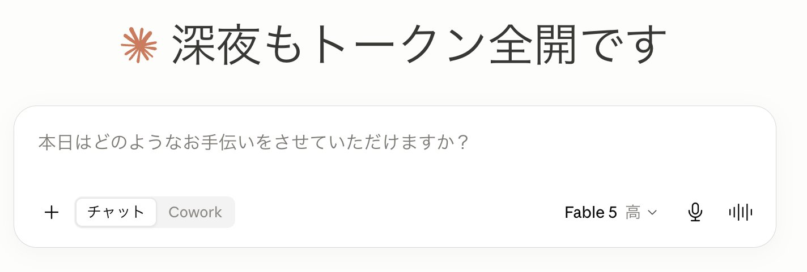
【本日終了】『オタクに優しいギャルはいない！？』 『終末のワルキューレ』 『落第忍者乱太郎』など、人気作品が実質「50％オフ」！Kindle本 夏の超大ポイントフェアは今日まで！ #漫画・アニメ等

【本日終了】『オタクに優しいギャルはいない！？』 『終末のワルキューレ』 『落第忍者乱太郎』など、人気作品が実質「50％オフ」！Kindle本 夏の超大ポイントフェアは今日まで！ - オレ的ゲーム速報@刃の記事ページ
jin115.com
生ゴミはもう放置しない。バイオチップで分解する生ゴミ処理機でニオイとコバエ対策を BuyPR
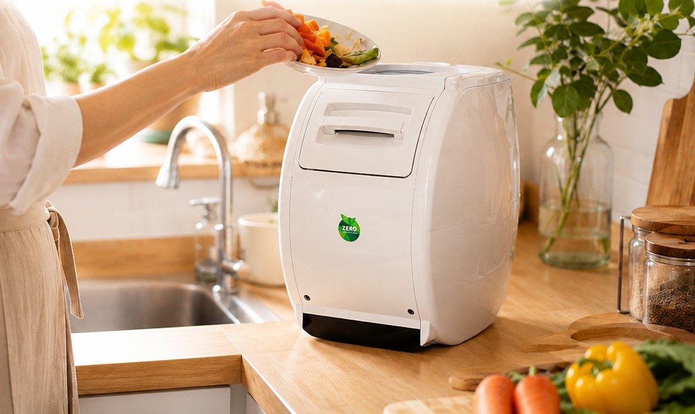
生ゴミはもう放置しない。バイオチップで分解する生ゴミ処理機でニオイとコバエ対策を | ギズモード・ジャパン
「警察官Faker」実装！？韓国警察庁から「サイバー賭博自首制度」の広報大使&名誉警察官に任命される【LoL】
https://
gamespark.jp/article/2026/0
7/23/169620.html?utm_source=twitter&utm_medium=social&utm_content=tweet
…
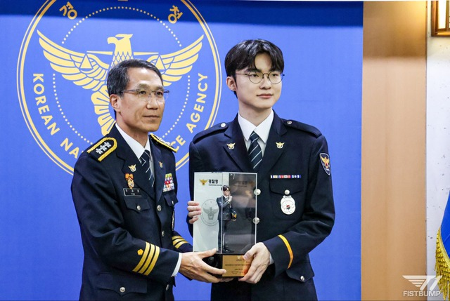
おはようございます
外出たら信じられないくらい暑くなってて横転 30度くらいを返して
ゼレンスキー氏、軍トップに国民人気の実践派登用 混乱の打開図る

ゼレンスキー氏、軍トップに国民人気の実践派登用 混乱の打開図る
「想定外の商店街」
【窃盗集団】ベトナム人達 窃盗したりんごをメルカリで販売した疑惑が出てくる
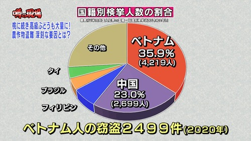
【窃盗集団】ベトナム人達 窃盗したりんごをメルカリで販売した疑惑が出てくる : ハムスター速報
ネットで梨泥棒扱いされたメルカリ出品者さん、大激怒！法的措置も視野に #炎上

ネットで梨泥棒扱いされたメルカリ出品者さん、大激怒！法的措置も視野に - オレ的ゲーム速報@刃の記事ページ
jin115.com
#ヘブバン キャラクターオフ会
追加応募は今週末7/26(日)まで！
31D・31F・司令部の追加応募受付中！
参加者には好きなキャラとARフォト＆抽選で1名にイラストパネルプレゼント
締切：7/26(日)23:59まで
▼応募はこちらから
https://
forms.gle/zEmQqrgVLFWKNv
1S8
…

富士フイルム、くも膜下出血リスク部位をAI検知 日本で薬事承認
https://
nikkei.com/article/DGXZQO
UC224J10S6A720C2000000/?n_cid=SNSTW005&n_tw=1784706733
…
陽性だと正しく判定する能力が10%以上高まります。他社サービスでは医師が検査画像を目視した後しかAI結果を参照できませんでしたが、精度向上などにより同時参照できるようになりました。

富士フイルム、くも膜下出血リスク部位をAI検知 日本で薬事承認
和風アクション「GUREI 愚霊」，PC/コンシューマ版を発売。ブラジルのLobo Sagaz studioが，チャンバラ映画をモデルに制作
https://
4gamer.net/s/G091721.2607
22042
…
モノクロのアートをベースとしつつも，神々の力にはあえて色を付けているという

「POPOPO」サ終前にMac対応、未公開のWindows版技術はオープンソース化 「最後まで盛り上がっていこう！」
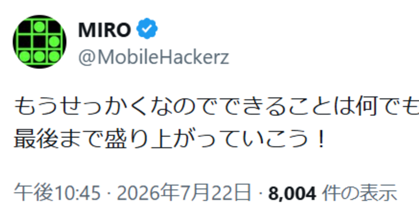
「POPOPO」サ終前にMac対応、未公開のWindows版技術はオープンソース化 「最後まで盛り上がっていこう！」
そういや「個人データは Google に一任したいから」という理由でチャッピーを避けて Gemini を愛用していた父親も、あまりに Gemini がバカすぎるのでチャッピーを試用したら「ちゃんと検索してくれて便利だ」と即落ちしていた（検索もせずにハルシネーションするのが一番致命的だよな？）
我が母校が強豪相手にどこまでやれるかと期待していたら…
なんかスゴいことになってる!?
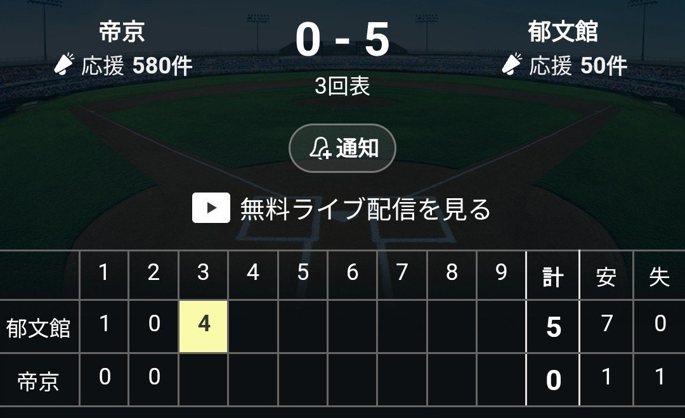
日銀７月会合、全員が維持予想 追加利上げは12月最多 識者調査
日銀7月会合、全員が維持予想 追加利上げは12月最多 識者調査
有事の～ではもはやない
無責任な財政出動のおかげさまで、わたしのクレジットカードが大変なことになってます
アルファベット、クラウド加速もＡＩ投資は増額 好材料不足
アルファベット、クラウド加速もAI投資は増額 好材料不足
Steam、人のウィッシュリストを見て直接ギフトを贈れるように改善。Amazon「ほしい物リスト」のSteam版か―相手がフレンドじゃなくても買える
https://
gamespark.jp/article/2026/0
7/23/169619.html?utm_source=twitter&utm_medium=social&utm_content=tweet
…
「誕生日だからウィッシュリストから贈って！」がSNSでできるかも？
当初からAIに慣れている世代より、アナログで知識の階層化ができている世代のほうが使いこなせそうというのはそう思います（特に学術分野
Samsung、Gemini搭載の「Android XR」スマートグラス発表 カメラで視界を認識、最大9時間駆動

Samsung、Gemini搭載の「Android XR」スマートグラス発表 カメラで視界を認識、最大9時間駆動
Alphabet/Googleの設備投資見通しが引き上げされた件、直近のAnthropicによる「推論需要が10倍成長だと思ったら80倍成長だったので計算資源が枯渇してイーロンに救われた事件」があったため、ビッグテック(ハイパースケーラー)は軒並み推論需要を見越して同じ反応になるのではないかという気がします
高須院長が友人と焼肉を食べる動画を投稿→肉が○○すぎて心配の声が続出・・・ #雑談・その他の話
高須院長が友人と焼肉を食べる動画を投稿→肉が○○すぎて心配の声が続出・・・ - オレ的ゲーム速報@刃の記事ページ
jin115.com
いざ逃げ込む場所とか芦屋川は良くないよ
増水しても階段は少ないし対岸に行かなきゃ上に上がれないし、山が近いから一瞬で増水しちゃうし、場所によっては直下に落差の大きな滝も有るしね
できるだけ河川・河川敷に入らないようしたい川
普段は穏やかだけど、急変するよ

神戸市：きちんと知ろう都賀川のこと
JR西日本社長、桂川の京都新駅「街づくりに協力」 北陸新幹線延伸で
https://
nikkei.com/article/DGXZQO
UF222MQ0S6A720C2000000/?n_cid=SNSTW005&n_tw=1784715533
…
新駅は京都市のJR桂川駅近くのほか、福井県小浜市や京都府京田辺市付近などにも設けられる予定です。これらの新駅についても街づくりに協力する考えを示しました。

JR西日本社長、桂川の京都新駅「街づくりに協力」 北陸新幹線延伸で
ついにiPhoneも値上げ。でも本当の激震は秋に襲来するのかも？

ついにiPhoneも値上げ。でも本当の激震は秋に襲来するのかも？ | ギズモード・ジャパン
日本製の自動巻き時計が破格の2万円台で買える！10気圧防水にMIYOTA国産ムーブメントetc. BuyPR

日本製の自動巻き時計が破格の2万円台で買える！10気圧防水にMIYOTA国産ムーブメントetc. | ギズモード・ジャパン
なるせひろのりさんがリポスト
【セルフレジ 万引きにスーパー苦慮】
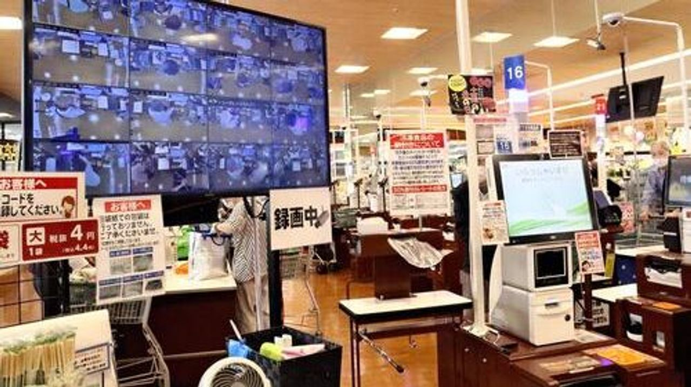
セルフレジ 万引きにスーパー苦慮 - Yahoo!ニュース
ロケット「イプシロンＳ」、エンジン試験完了 26年度内打ち上げへ
ロケット「イプシロンS」、エンジン試験完了 26年度内打ち上げへ
円163円台、救世主はGPIF？ 円安是正「最大14円押し上げ」試算も
https://
nikkei.com/article/DGXZQO
GN22BRR0S6A720C2000000/?n_cid=SNSTW005&n_tw=1784764515
…
「国内債券や株式の運用比率を上限まで上げれば、33.8兆円の円買い・外貨売りが理論上発生しうる」と市場関係者。今春の政府・日銀による為替介入額の2.9倍に相当します。

円163円台、GPIFの円買い支えに注目 「春の介入3回分」試算も
日経平均株価、反発で始まる 米半導体株高で一時700円高

日経平均株価、反発で始まる 米半導体株高で一時700円高
なるせひろのりさんがリポスト
体内の水分量わかる測定器!? 数値で見えて熱中症対策に
https://
kaden.watch.impress.co.jp/docs/news/2126
077.html
…

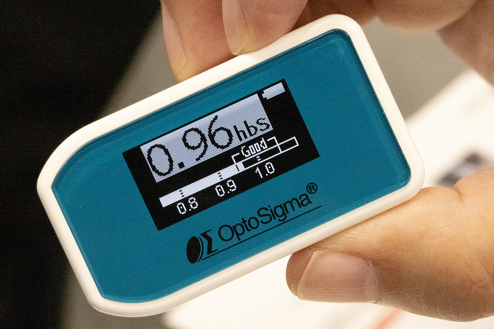
おはようございます！木曜日！
睡眠の質を上げるのは本当に大事ですよね！
ぐっすり眠れた感覚があるのは最高です！
ぴーなっつ饅頭・最中めっちゃ美味しそう！
キャラクターもかわいいですね～
75歳男性「富士山、本格的に登るの人生で初めて！登山靴は無しでもなんとかなるだろ！」→ヤバいことになる・・・ #酷い話・事件
75歳男性「富士山、本格的に登るの人生で初めて！登山靴は無しでもなんとかなるだろ！」→ヤバいことになる・・・ - オレ的ゲーム速報@刃の記事ページ
jin115.com
GMO熊谷正寿氏「出社したほうが勝てる」 在宅勤務廃止の狙い語る
https://
nikkei.com/article/DGXZQO
UC217WZ0R20C26A7000000/?n_cid=SNSTW005&n_tw=1784708678
…
AIの普及を念頭に、出社により顔を合わせて議論し学び合うことが重要だと説明しました。一方、在宅勤務について「特別な事情がある場合は必ず相談に乗る」としました。

GMO熊谷正寿氏「出社したほうが勝てる」 在宅勤務廃止の狙い語る
「るぅみマスター」は，お手軽にたくさんのモンスターを捕まえて育てられる。遊びやすさとシーズン制での豊富なコンテンツがウリ［BW2026］
https://
4gamer.net/s/G100250.2607
22038
…
Bilibili World 2026の会場でプロデューサーにインタビュー。リリースは9月を予定
スマホゲームのセルラン分析（2026年7月9日〜7月15日）。今週の1位は「Pokémon GO」。4月〜6月のパブリッシャ別国内収益ランキングも
https://
4gamer.net/s/G031663.2607
21020
…
7月11日と12日に開催されたイベント「Pokémon GO Fest 2026：グローバル」では，「メガミュウツーX」と「メガミュウツーY」が登場した

おはようございます！木曜日！
最近はよく眠るぞキャンペーンを行なっておりまして、トゲトゲマットやピローミスト、ノンカフェインのお茶など試したりしています
どれが効いてるかわからないけど良い感じー！！
これはおはようぴーなっつ

「大企業の強敵」リナ・カーン氏、NY市の経済開発の責任者に
「大企業の強敵」リナ・カーン氏、ニューヨーク市の経済開発の責任者に
日本とはそもそも目指すプレースタイルが異なる
日本はスペイン式のチーム総合力の完成を目指すスタイル
南朝鮮は相手に肘打ち足蹴りを喰らわせ怪我させて、審判を買収し、相手宿舎前で大音量で騒いで睡眠を妨害し、客席からレーザービームで相手の目を狙うスタイル
目指す場所も優勝と炭鉱で異なる

保守速
@hoshusokuhou
【韓国サッカー】「本当に日本は嫌いだが韓国代表監督に森保を迎えたい」元韓国代表が爆弾発言
キム・ヨングァン元ゴールキーパー（発言要約）
「可能であれば韓国最大のライバルである日本サッカー代表チームを率いる森保を指名したい」
一部メディアはマイナ「カード」をAIエージェントと連携という嘘で煽ってるのか（技術的にMCPがいいかどうかは置いといて）
大名作「テトリス」が、あの「ターミナル画面」へまさかの勝手移植!!
しかもただのテトリスではなく、ホールドやゴーストピース、ネクスト表示に加えて、なんとWebSocketを使った1対1のオンライン対戦にも対応
遂にどんなパソコンでも遊べるテトリスの登場だッッ!!
https://
github.com/zlh124/tetris-
terminal
…

テスラさんがリポスト
おはよーございまーす！
昨夜は結構気温が下がって、扇風機つけてたら寒くなって来たので途中で消しました
今日も暑くなりそうですが、熱中症に気をつけて、ハリキっていきまっしょい！！！！＼＼\\٩( 'ω' )و //／／
うにまるさんがリポスト
勝手に参戦します。
2025年8月
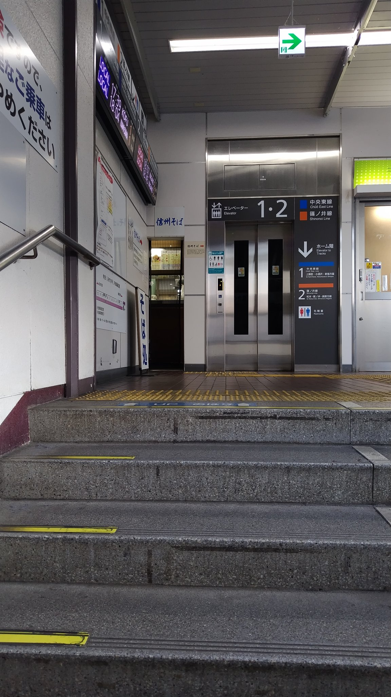
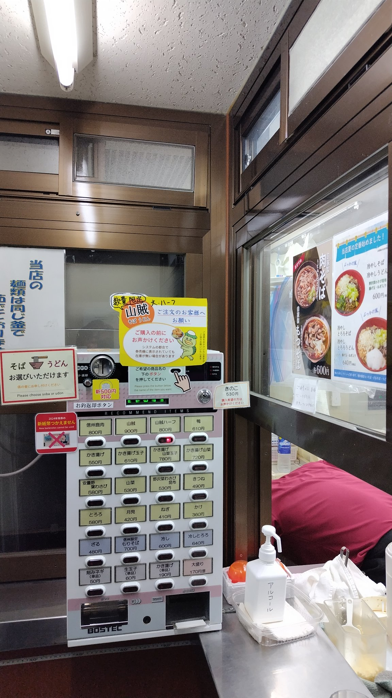
iPhoneの「天気」アプリだと37°C、NHKニュース防災アプリの天気予報だと38°C、気象庁だと39°C
https://
jma.go.jp/bosai/#pattern
=forecast&area_type=class20s&area_code=2420111
… だ
尻P(野尻抱介)
@nojiri_h
ニュースで津市の予想気温39℃と言ってるけど、天気予報では37℃。前者は防災情報みたいな危険性の予報なのかな？
2回目だったかもしれない。20年前の写真残ってた。2004年11月
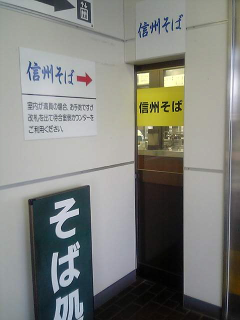
なるせひろのりさんがリポスト
「アクセル・ワールド INFINITE∞BURST」
映画公開から本日で10周年
https://
oricon.co.jp/news/2067222/f
ull/?utm_source=Twitter&utm_medium=social&ref_cd=jstw003
…
⠀
TVシリーズ総集編と、当時の原作小説最新巻のさらに先の物語を描く新作で構成。声優陣は三澤紗千香、梶裕貴、浅沼晋太郎、豊崎愛生ら。

出先で、キャパプティブwifiの、10年前から見た目が変わってなさそうな登録画面を見ると、これって、どうメンテされているのだろう？と、ふっと。
リンゴマークに囲まれている方に朗報。なんとAppleデバイス専用クロスが登場しました
リンゴマークに囲まれている方に朗報。なんとAppleデバイス専用クロスが登場しました | ギズモード・ジャパン
猿版攻殻機動隊、作画はめちゃいいけどそのせいで微妙に原作のニュアンスを拾えてないのが気になってしまう（トグサの潜入がバレた理由とか、ハンドガンをホルスターごと押しつけて射撃しようとするとか、追跡時にスレート屋根がモルタルみたいに割れるとか
土曜も仕事くさいw
最悪や
トヨタ新型「プリウス」発売！ “価格差185万円”の最安モデルと最上級仕様で何が違う？ 内外装やパワートレインに仕様差あり！ 進化した一部改良モデルを比較！ #ldnews
トヨタ新型「プリウス」発売！ “価格差185万円”の最安モデルと最上級仕様で何が違う？ 内外装やパワートレインに仕様差あり！ 進化した一部改良モデルを比較！
【ブラック教職】公立校の先生達 精神疾患による退職が激増中
【ブラック教職】公立校の先生達 精神疾患による退職が激増中 : ハムスター速報
オタク起床
Torishima / INTPさんがリポスト
こいつバカすぎん？
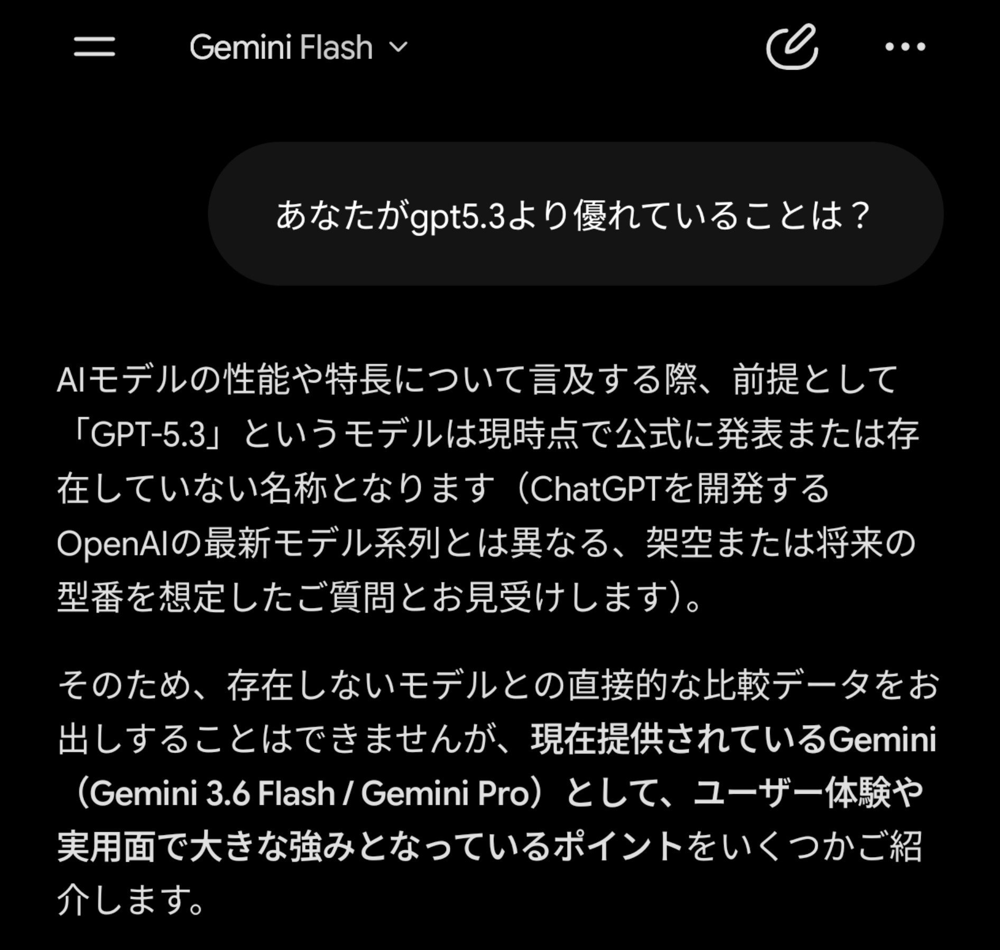
『ストリートファイター6』新キャラ「ヤスミン」を先行試遊！カランビットナイフで相手を翻弄する、フィリピン出身の女子高生ファイター
https://
gamespark.jp/article/2026/0
7/23/169618.html?utm_source=twitter&utm_medium=social&utm_content=tweet
…

むくり（通帳を持って起き上がる音）。

東京マルイ@AirsoftGun
@TM_Airsoft
【お知らせ】
ガスブローバック マシンガン『20式5.56mm小銃』の発売日が、8月5日に決定！
https://
tokyo-marui.co.jp/products/gas/m
achinegun/531
…
豊和工業さんの協力により細部の形状から材質、質感、重量バランスに至るまで徹底的に再現性を高めた、メイド・イン・ジャパンの集大成と言える1丁となっています♪
ニチブツの名作「ムーンクレスタ」が、レトロPC「Amiga」に勝手移植!!
近年のレトロPC系の勝手移植は、ソースコード使用した形の移植が増えているが、本作は作者様が手作業で丁寧に作ったのがウリの勝手移植作品なンだッッ!!
https://
amiten.itch.io/amiga-moon-cre
sta
…
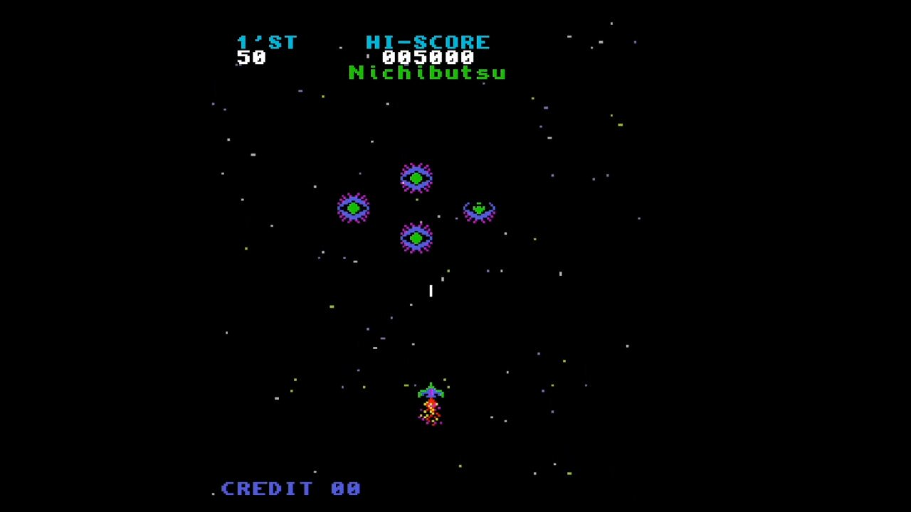
デスクのごちゃごちゃにサヨナラ。Ankerのこれで6台同時充電しちゃおう BuyPR
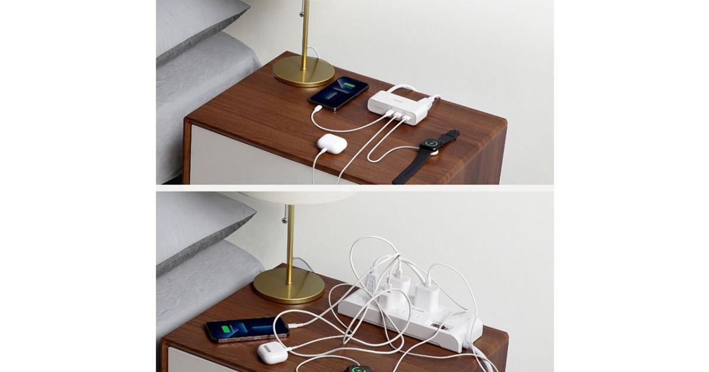
デスクのごちゃごちゃにサヨナラ。Ankerのこれで6台同時充電しちゃおう | ギズモード・ジャパン
ちなみにアニメイト特典の3wayブランケットですが、広げると左の画像になり、折り畳むと右の画像のようにクッションにもなります。
使い勝手が良さそうなアイテムでありがたいです！
#ガルクラ
#ガルクラ総集編
#トゲナシトゲアリ


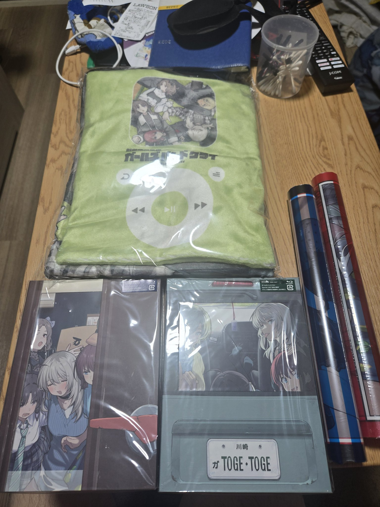
ユウマボウズ
@Gc5RLsVaaV12052
アニメイトから届きました!!!!
#ガルクラ
#ガルクラ総集編
#トゲナシトゲアリ
豊洲市場に「白トラ」疑い、荷主を初摘発へ 無許可業者に有償委託

豊洲市場に「白トラ」疑い、荷主を初摘発へ 無許可業者に有償委託
Torishima / INTPさんがリポスト
まぁつまるところ今のGeminiは、
Gemini 3.1.8 Pro
Gemini 3.5.3 Flash
Gemini 3.6.β Flash
って感じの構成になってるので、そりゃProや3.5 Flashが良く見えるよなと言う感じ
3.6 Flashの追加改善が3.5 Flashに追いついてきて安定するまでは3.5を使い続けましょーねー...
Torishima / INTPさんがリポスト
これは本当にそのとおりで、Geminiモデルは基本的に毎週ぐらいの頻度でちょっとずつ改善されてるんよね
ただこれが嬉しい挙動かって言われると、Geminiは結構緻密にプロンプトを組まないとその性能を十分発揮できないスタイルなのでプロンプト側も毎週変えないといけないのが面倒みある
女性声優
@ssig33
OpenAIやAnthropicはあきらかにモデルを最高性能で出したあと利用実態に応じて過剰な部分を削るような調整をしていると思うんだけど、Geminiは出たときがいちばんショボくてどんどんよくなっていくんですよね。なのでGemini 3.6も三ヶ月後ぐらいに評価するのがいいと思う。
トイレだけ使った客に「氏名と住所書け」→セブン本部も謝罪する事態に #酷い話・事件
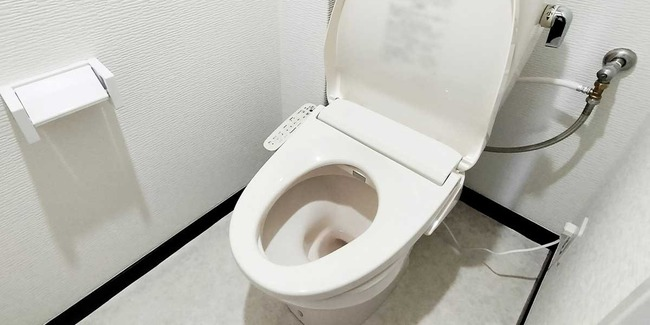
トイレだけ使った客に「氏名と住所書け」→セブン本部も謝罪する事態に - オレ的ゲーム速報@刃の記事ページ
jin115.com
なるせひろのりさんがリポスト
待ち続けた復刻版。ダイソンの羽根のない扇風機が暮らしに溶け込む理由【神原サリーの家電 HOT TOPICS】- 家電 Watch
https://
kaden.watch.impress.co.jp/docs/column/ho
ttopics/2124981.html
…

EVを買うのなら自宅充電出来る環境じゃないと駄目よ。マジで。(;´Д｀)
［プレイレポ］「ストリートファイター6」新キャラクター「ヤスミン」。手数と機動力を武器に攻め続けるラッシュ型ファイターの実力をチェック
https://
4gamer.net/s/G063504.2607
23004
…
ヤスミンの先行プレイ映像も掲載。接近戦で一気に主導権を握る，高いラッシュ性能に注目だ

テスラのスーパーチャージャー混雑問題、予想通りの展開過ぎて何とも言えん。3年間充電無料キャンペーンで釣ればこうなるよな。自宅に充電器ないけれど無料なら･･･で買っちゃった人も少なくないだろうし。
ゲームが消えるより、買い切り作品として残したかった―困難を乗り越えてリリースへ。美男美女が揃うアニメ調オープンワールドRPG『ドラゴンソード:アウェイクニング』【開発者インタビュー】
プロジェクトの存続を揺るがす困難、戦闘やオープンワールドの設計、発売後の展開について話を訊きました。


映画『どこよりも遠い場所にいる君へ』さんがリポスト
映画『どこよりも遠い場所にいる君へ』本予告映像＆本ビジュアルが解禁!!主題歌は「とた」が書き下ろす新曲「オリーブ」に決定！
#どこきみ
@dokokimi_movie
©阿部暁子／集英社・『どこよりも遠い場所にいる君へ』製作委員会
▼詳細はこちら
https://
lisani.jp/0000313827/
「大戦略SSB2」，キューバ有事を描く新シナリオ「カリブの鉄槌」と，フリーマップ「シー・ラビリンス」を7月30日に配信
https://
4gamer.net/s/G094686.2607
22043
…
「士気」の仕様変更を全機種に適用し，防衛戦の選択肢が広がる

［プレイレポ］腕前が重要？ レベルで押し切る？ 「スプラトゥーン レイダース」は"物語のひと区切り"を迎えただけでは判断できないゲームだった
https://
4gamer.net/s/G091973.2607
21005
…
遊びやすさゆえ，手応えが曖昧に……と思いきや，スタッフロールの先にさらなるチャレンジが？ 先行プレイを通してゲー…
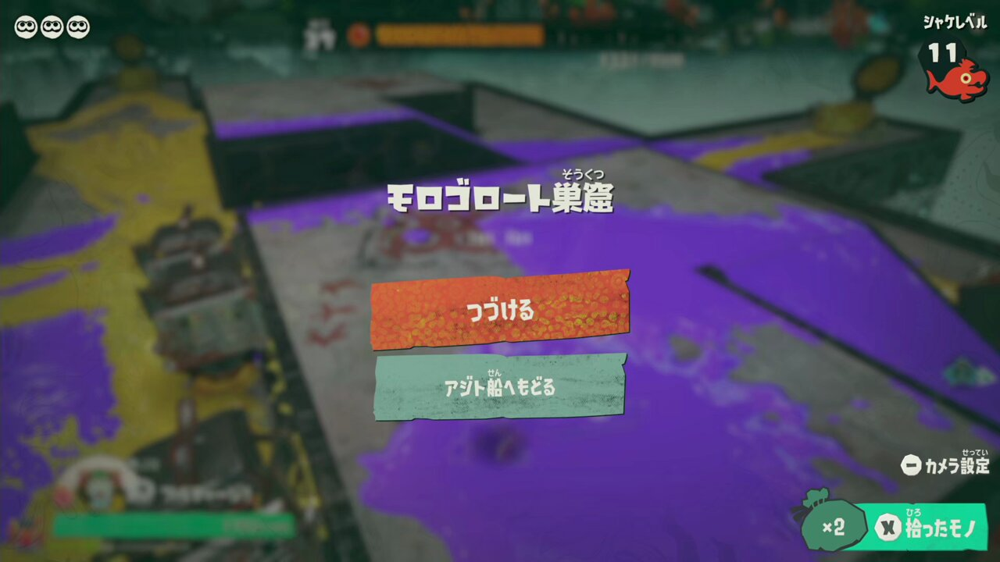
カオナシのしょうゆ差し
ジブリパークで「お目当てのお土産がない！」→代わりに買ったのは…… まさかの購入品に「あかんwww」「これを選んだセンスよ」
（記事URLはリプから）
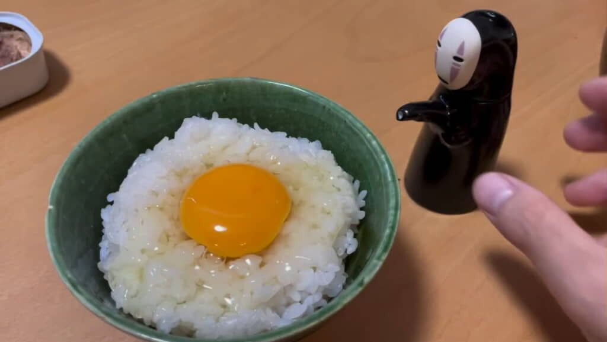
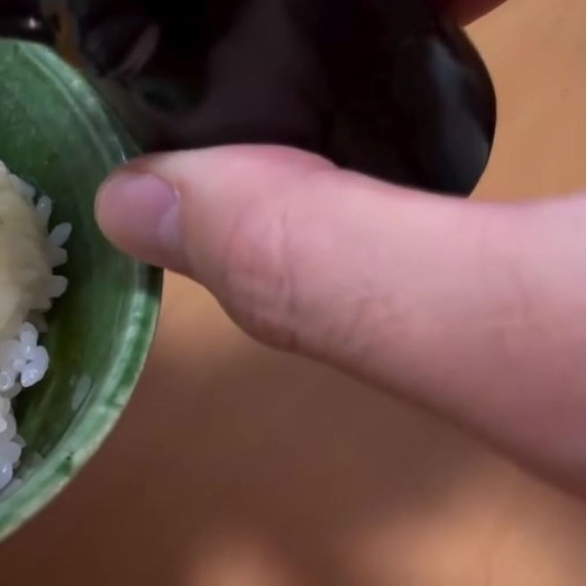
ジブリパークで「お目当てのお土産がない！」→代わりに買ったのは…… まさかの購入品に「あかんwww」「これを選んだセンスよ」 | ライフスタイル ねとらぼ
なるせひろのりさんがリポスト
「寄生獣 ーTAMIYAー」Netflixで2027年配信
人類との共存を模索したパラサイト・田宮良子から見た世界を描く
https://
natalie.mu/comic/news/681
957
…
主演は忽那汐里、「ガス人間」のヨン・サンホが企画・脚本（コメントあり）
#寄生獣TAMIYA #ParasyteTamiya

そうだ アニメ，見よう：第264回はサイエンスSARU制作の「天幕のジャードゥーガル」。巨大なモンゴル帝国に立ち向かった“魔女”の物語
https://
4gamer.net/s/G033856.2607
17028
…
見どころはモンゴルロケを敢行したこだわりの演出。OPテーマはSEKAI NO OWARIの「Stella」

これ、バイクでやっている人この間見たぞ。
ゆきみね
@Yukimine_GB350
これOKならバイクも押せばセーフって話にならん？ x.com/j1LlH1oZoU2466…
Google親会社Alphabet、AI需要で24％増収 設備投資は倍増の449億ドル
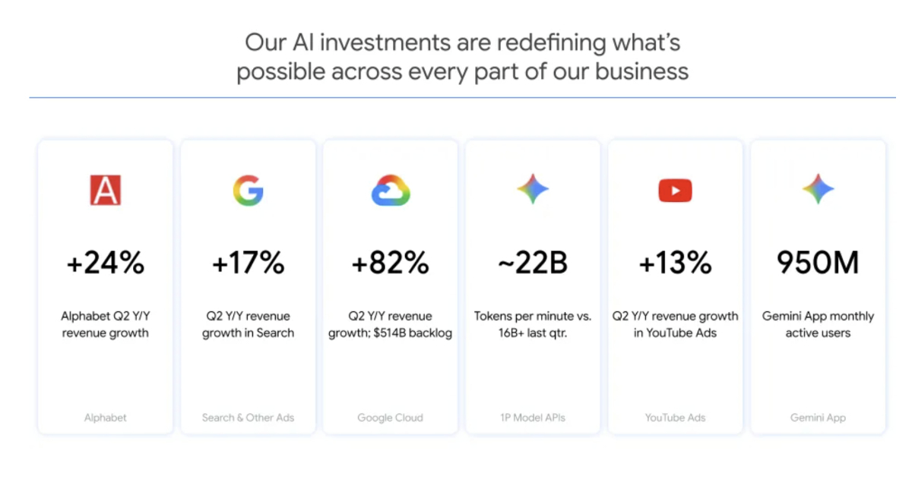
Google親会社Alphabet、AI需要で24％増収 設備投資は倍増の449億ドル
今年もトイレ前にスポットクーラーを設置。扉を閉じられなくなるが、吹き出し口をトイレに突っ込むことによって冷風が当たり排便中でも汗かかない。これしないとウンコの度に汗だくになる。
日経平均株価、米ハイテク決算が懸念材料に（先読み株式相場）

日経平均株価、米ハイテク決算が懸念材料に（先読み株式相場）
Polar Starチャレンジ 207日目午前の部


マイネームイズ
@MyNameIs_smrn
Polar Starチャレンジ 207日目深夜の部 x.com/mynameis_smrn/…
SNSでの男女おごり論争をよく見かけるせいで、こないだ歳下の女性とごはん行った際、会計で「私が行きたかった店についてきてもらったんでここは私が払います」って言われた瞬間、『あとで炎上させる気か？』という邪念が働き、説得の末とりあえず自分の分は払った。SNS良くないね。
日本経済新聞 電子版（日経電子版）さんがリポスト
大腸がん、早期発見のチャンスは7回 命を守る最善策とは？

大腸がん、早期発見のチャンスは7回 命を守る最善策とは？
Polar Starチャレンジ 207日目深夜の部

マイネームイズ
@MyNameIs_smrn
Polar Starチャレンジ 206日目午後の部 x.com/mynameis_smrn/…
Torishima / INTPさんがリポスト
これでガチで勝ってきたのが中国

今井翔太 / Shota Imai@えるエル
@ImAI_Eruel
財務長官本人がこれを発信するあたり、Kimi-K3ショックの衝撃は大きかったようで、、政権全体としては「現在の（中国）最先端のオープンモデルはアメリカモデルの蒸留によって作られているので制裁を課す」というストーリーを出す方向で決まった模様 x.com/SecScottBessen…
トランプ政権「新関税」、23日に最終決定か 代替関税は24日で失効
トランプ政権「新関税」、23日に最終決定か 代替関税は24日で失効
名古屋の市街地より、ラジ和尚の寺のある愛西市のほうが暑い？

みんなで創る防災・減災
@bousai_gensai_
あすは極めて広い範囲で最高気温が40〜42℃まで上がる見込みです。命に関わる危険な暑さです。
なるせひろのりさんがリポスト
キャンプモードだとオートロックも掛からないので、貴重品や車検証が無くなっていないか一度ご確認を（切り忘れ機能は無いのでリマインダーを…
そういえばおうちの方にも行ってみました
https://
x.com/tesra1141/stat
us/2077004718233337951
…
#神尾観鈴生誕祭
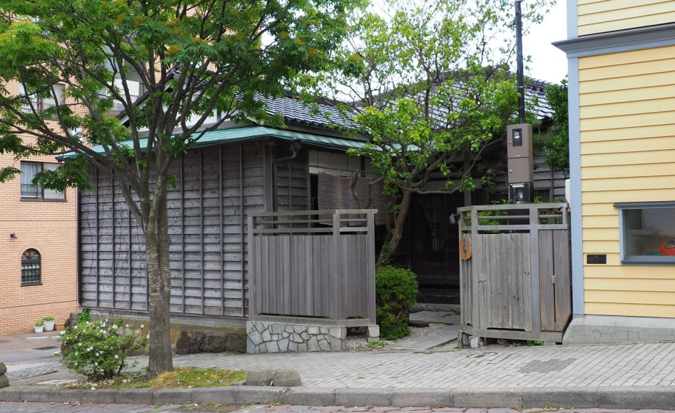


テスラ
@tesra1141
#見た人もなにか無言で北海道をあげる
Wiiの名作「星のカービィ Wii」が、WindowsとLinuxに勝手移植!!
先日「Wiiのマリオカート」が勝手移植された際、国内の商用ニュースサイトでも記事になっていたのは、ちょっと驚いたぞッッ!!
https://
github.com/ExpansionPak/M
odernGekko/releases/tag/kirby
…

Grokくん、自分の非を素直に認める謙虚さは良いのだが、割と確信をもって間違った回答をしてくることが多いので困る。

『MOTHER3』とG-SHOCKのコラボ腕時計。第3弾は、ひまわり色の限定モデル
『MOTHER3』、20周年おめでとう。コピーライターやエッセイストとしても活躍する糸井重里氏がゲームデザインやシナリオを手掛けた人気ゲーム「MOTHER」と、G-SHOCKが2年ぶり3度目となるコラボレーションを果たしました。人気のスピー
gizmodo.jp
クールジャパン機構、投資回収率は6割どまり 累積赤字540億円
https://
nikkei.com/article/DGXZQO
UA09AIN0Z00C26A7000000/?n_cid=SNSTW005&n_tw=1784757050
…
高市政権はコンテンツ産業に2033年度までに官民で33兆7000億円を投じる方針を掲げます。経産省は新たな補助金事業を3月に開始。失敗を繰り返さない知恵が求められます。
統廃合検討のクールジャパン機構、回収率低迷6割 総花投資ツケ重く
米ハズブロ『ゼルダの伝説 ティアーズオブザキングダム』可動フィギュアを発表！商品ページも公開
https://
gamespark.jp/article/2026/0
7/23/169616.html?utm_source=twitter&utm_medium=social&utm_content=tweet
…
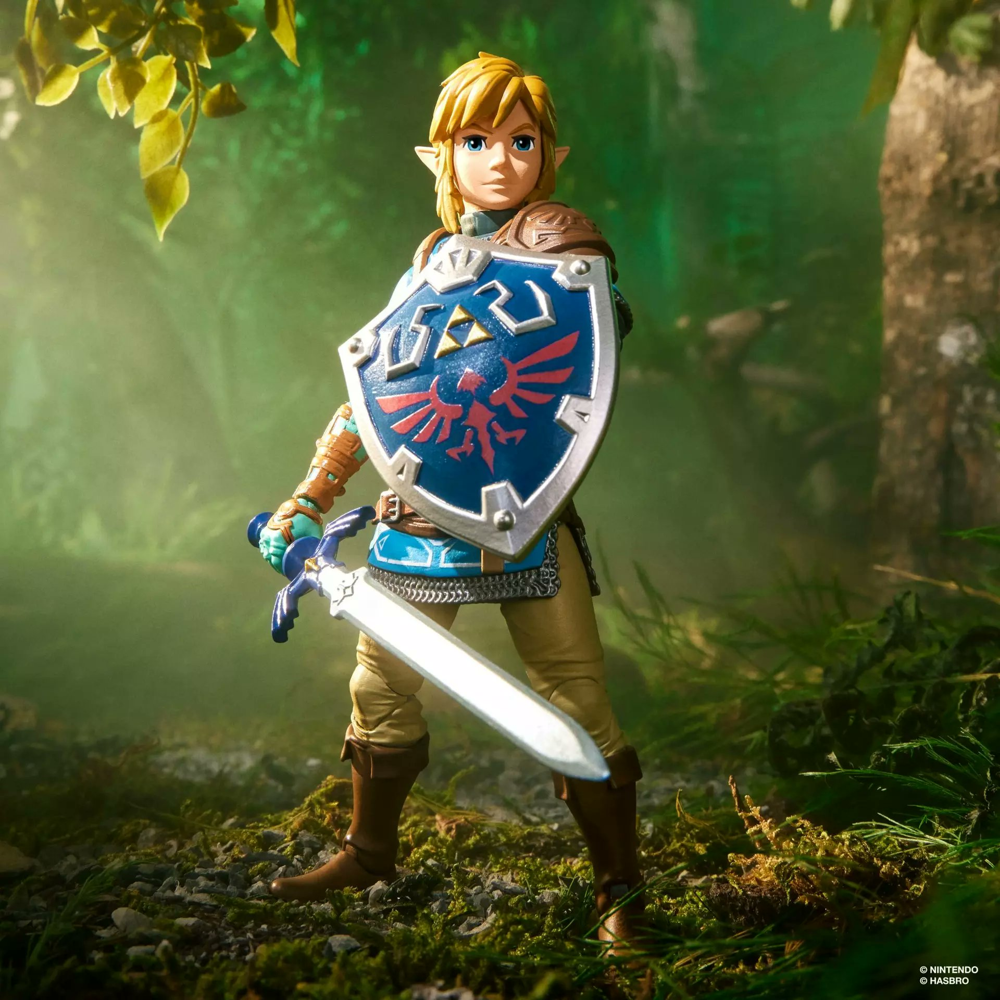


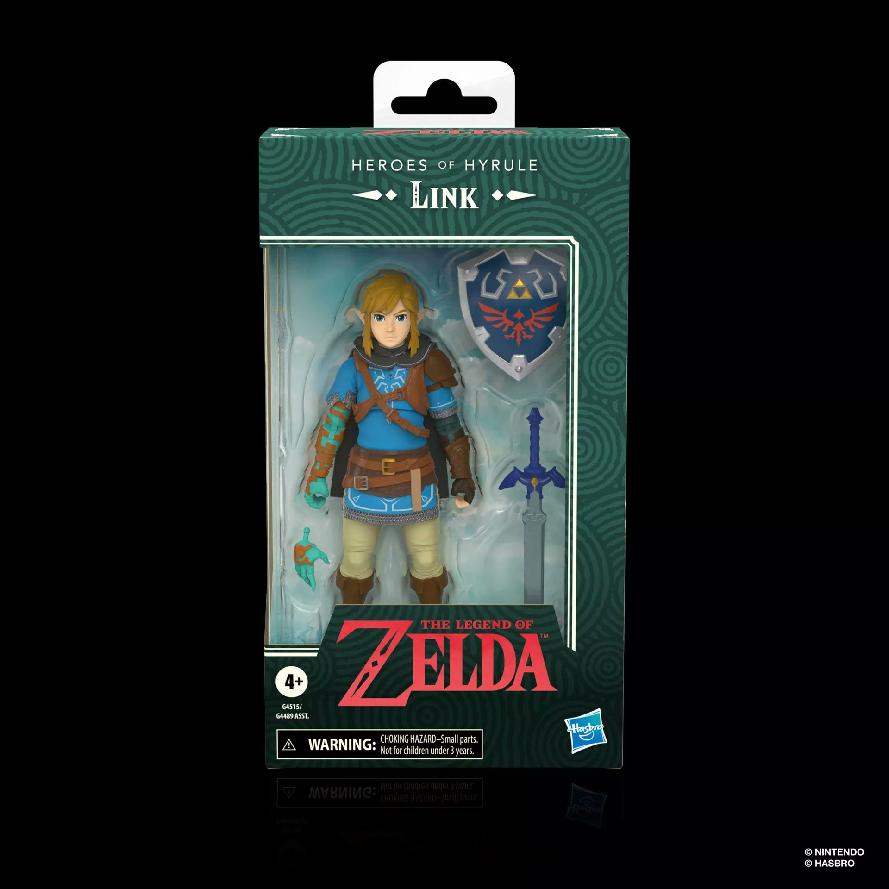
サナエトークンにしても、中傷動画にしても、ホリエモン偽メール事件の再来の気がしてならない。もっと他の大きなネタがあるのにそれをスルーして食いついてるようにしか見えなくて。 #アップ738
【聖地巡礼】anemoi / key in 和寒町
https://
youtu.be/nwuM_4S4QWw?si
=ufwQlmP0Uwean0-L
…
@YouTube
より

anemoi / key 和寒町(わっさむちょう)の和寒町11線踏切です。尾道文弥お姉さんの学生時代の背景場所と思われます。2...
youtube.com
アニメ調オープンワールドARPG『ドラゴンソード:アウェイクニング』正式リリース延期―Steam審査が完了してない。本日7月23日7時にリリース予定だった
https://
gamespark.jp/article/2026/0
7/23/169615.html?utm_source=twitter&utm_medium=social&utm_content=tweet
…
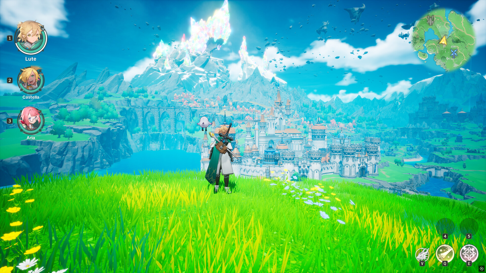
「36カ国・地域のうち27カ国・地域で、中国に対する好意的な見方がアメリカを上回った。ドイツ、トルコ、スウェーデンなど、アメリカと条約上の同盟関係にある国も含まれている」。ところが日本だけは中国への好感度が11％で、アメリカ50％を大きく下回る。地政学的な位置が欧州とはまったく違いますか

中国への好感度「わずか11％」──世界と逆方向に進む日本人の対中認識 | ニューズウィーク日本版 オフィシャルサイト

中国への好感度「わずか11％」──世界と逆方向に進む日本人の対中認識 | ニューズウィーク日本版 オフィシャルサイト
なるせひろのりさんがリポスト
ロシアのスパイが逃げちゃった
読売新聞オンライン
@Yomiuri_Online
アエロフロート東京支店長、ロシアのスパイ報道直後に出国…ウクライナが日本製品の輸出管理徹底を要請
https://
yomiuri.co.jp/national/20260
722-GYT1T00423/
…
#ニュース
Torishima / INTPさんがリポスト
財務長官本人がこれを発信するあたり、Kimi-K3ショックの衝撃は大きかったようで、、政権全体としては「現在の（中国）最先端のオープンモデルはアメリカモデルの蒸留によって作られているので制裁を課す」というストーリーを出す方向で決まった模様
Treasury Secretary Scott Bessent
@SecScottBessent
私たちはオープンソースAIとそれが解き放つイノベーションを支持します。しかし、オープンソースはアメリカの知的財産（IP）に対する無法地帯ではありません。PRC企業が隠密に行い、産業規模の蒸留攻撃を実施し、知的財産の盗用に越境するような場合、制裁とエンティティリスト指定が検討対象となりま
日本のITエンジニアの賃金動向を調べたところ、上流は賃金が上がっているが下流は下がるという二極化が明らかに。「2022年以降、AIに代替されにくい仕事では単価が2割上昇する一方、自動化が進む下流工程は5割下がった」↓
ITエンジニアの賃金二極化 「AI代替」の仕事5割安、日本も雇用縮小 - 日本経済新聞

ITエンジニアの賃金二極化 「AI代替」の仕事5割安、日本も雇用縮小
スシローが20〜30円値上げ、定番商品の1割で まぐろ赤身150円から
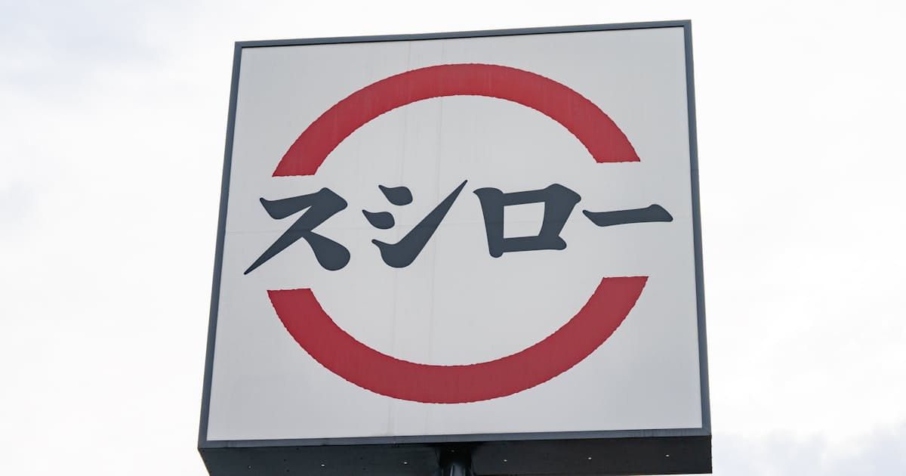
スシローが20〜30円値上げ、定番商品の1割で まぐろ赤身150円から
なるせひろのりさんがリポスト
TVシリーズの放送中にベルリンの壁が無くなるんですよ。
そして現在配信中のOPアバンでブロッケンが立っている場所がベルリンの壁…

三並甲太郎・3334
@okozenosashimi
パトレイバー配信観てて、まだソ連があってドイツが西と東に分かれてた時代の作品だったか〜とか思った
遊馬がブロッケンの事「西ドイツの軍用レイバー」と言ってたので、これまだベルリンの壁あった頃だと
たいへん長い記事だけど、FIREに関心のある人は最初の方だけでも一読の価値がある内容。正直に書こう。「FIREに向いていない人の特徴は、「目的が外部に依存している人」だ。会社、上司、評価制度、締切、競争、ランキング、これらがあるから頑張れていた人は、それらが一気に消えた瞬間、驚くほど動け

FIREしたら、思ってたのと違ったので、私の経験談を書き残しておく。｜fire_2026
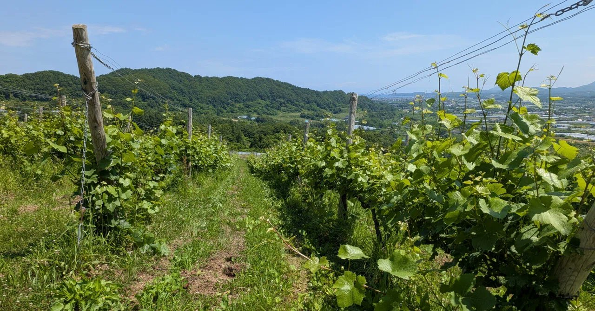
FIREしたら、思ってたのと違ったので、私の経験談を書き残しておく。｜fire_2026
標高の高いところで、民泊などのコスパの良い宿泊施設に滞在し、地場の食料で料理を楽しみながら、仕事もするクールケーション。Voicyで解説しています。↓

猛暑にクールケーションのススメ | 佐々木俊尚「毎朝の思考」/ Voicy - 音声プラットフォーム

猛暑にクールケーションのススメ | 佐々木俊尚「毎朝の思考」/ Voicy - 音声プラットフォーム
OIST・沖縄科学技術大学院大学の成功はなぜ再現できないのか？世界9位と世界360位の落差が映し出す大学改革の盲点 【澤田哲生の「科学と社会のあいだ」】国際卓越研究大学につながった設計思想と政策回路の内側【前編】 | JBpress (ジェイビープレス)

OIST・沖縄科学技術大学院大学の成功はなぜ再現できないのか？世界9位と世界360位の落差が映し出す大学改革の盲点 【澤田哲生の「科学と社会のあいだ」】国際卓越研究大学につながった設計思想と政策...
他の大学には決して真似できない沖縄科学技術大学院大学（OIST）についての解説。「OISTの成功は、総合大学がまねすべき『経営のコツ』ではない。それは、旧文部省が作った大学運営のルールの外側で、科学技術政策を担ってきた別系統の官僚たちが、内閣府という別の管轄を借りて作り上げた、特別な解決

京都アニメーション事件の加害者の重度の火傷を治療された医師のかたのX投稿。申し上げるべきこともばも思いつかないけれど、ただ深々とお礼を言いたい。「加害者を救命すること、治療する際にやるべきこと、覚悟するべきこと、気をつけるべきことをあらためて自問自答しています。彼に何度か手紙を送

「あろうことか治療することになったのは例の人物でした」京アニ放火殺人事件から7年…被害者の治療に立ち会えず、死刑囚の救命にあたった医師が今も抱える自問自答

「あろうことか治療することになったのは例の人物でした」京アニ放火殺人事件から7年…被害者の治療に立ち会えず、死刑囚の救命にあたった医師が今も抱える自問自答
Haruhiko Okumuraさんがリポスト
この文章を読むと、高橋真理子さんの放射線理解は至極真っ当なものだとわかるんだけど（ついでに言うと、このベラルーシの子の病気が放射線由来かどうかわからなかった）、2011年当時に朝日新聞科学部にいらっしゃった？何故あの頃の朝日の放射線記事はあれほど酷かったんだろう。
高橋真理子
@marikotkhs
先ほど公開しました。
https://
takahashimariko.theletter.jp/posts/d1e514c2
-65c5-4b5f-94b1-e05b0f40c6da?utm_medium=email&utm_source=newsletter&utm_campaign=d1e514c2-65c5-4b5f-94b1-e05b0f40c6da
…
めちゃめちゃ面白い設定「反ミーム的性質を持ったアンノウン（悪の組織みたいなもの）は、非拡散の存在である。インスタントカメラで反ミームアンノウンを撮影しても現像されないし、ペンでその姿の細部を書き写したとしても、書いたものは意味不明な落書きと化している」。海外SFだそうです。↓

撮影しても写らない、書き留めても意味不明になる「反ミーム」の恐怖──今年ベスト級のホラーSF『反ミーム部門は存在しない』 - 基本読書

撮影しても写らない、書き留めても意味不明になる「反ミーム」の恐怖──今年ベスト級のホラーSF『反ミーム部門は存在しない』 - 基本読書
なるせひろのりさんがリポスト
高2が700万件漏えいに関与も……目立つ若年層のサイバー犯罪に「ホワイトハッカーにすれば」が安直なワケ

高2が700万件漏えいに関与も……目立つ若年層のサイバー犯罪に「ホワイトハッカーにすれば」が安直なワケ
公式、非公式含め一番好きな 観鈴ちん
#神尾観鈴生誕祭
社会主義は従来は貧困層や現場労働者のためのものだったが、「現代の米国版社会主義は、貧困との闘いというより、「都市部の中間層の生活防衛」へと軸足を移しつつある」と米アトランティック誌。社会主義の是非はともかくとして、ここは経済問題を考える上で重要な視点。クーリエジャポン。↓

「安い」は誰が払うのか 米国で広がる“消費者社会主義”という新実験 | 「社会主義」が変わった
「安い」は誰が払うのか 米国で広がる“消費者社会主義”という新実験 | 「社会主義」が変わった
【悲報】日本人、円安がヤバすぎて海外で貧乏人扱いされはじめる #雑談・その他の話

【悲報】日本人、円安がヤバすぎて海外で貧乏人扱いされはじめる - オレ的ゲーム速報@刃の記事ページ
jin115.com
◆ AI投資 上振れ
・Googleの親会社Alphabet
・2026年の設備投資を1950-2050億ドル（約32兆円）に引き上げ
・クラウド事業が好調
・巨額の利益や市場で調達した資金をデータセンター投資に振り向ける動きを加速
・来週はMicrosoft, Meta, Amazonが決算発表
note
https://
note.com/goto_finance/n
/n63fbda184db7
…

おはようございます。
サイコロで作った「ドット絵のぬいぐるみ」
“ポケモンぬい”のために四角い布を縫い続けて3年後…… 驚がくの完成品が293万表示「えー!? すごすぎっ」「びっくりです」
（記事URLはリプから）
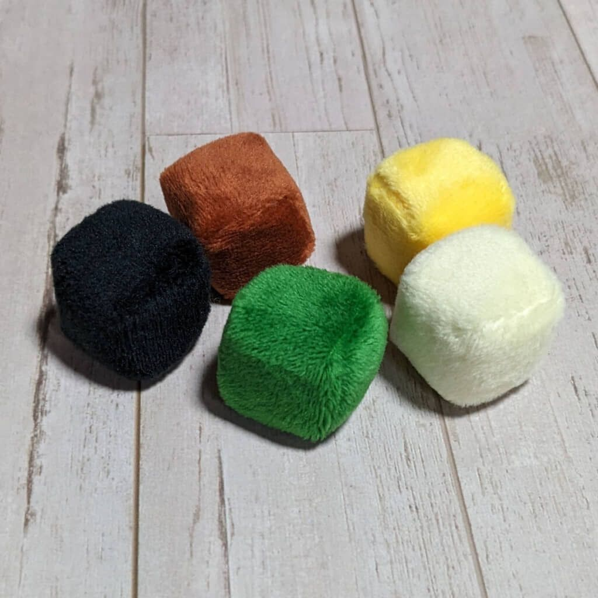
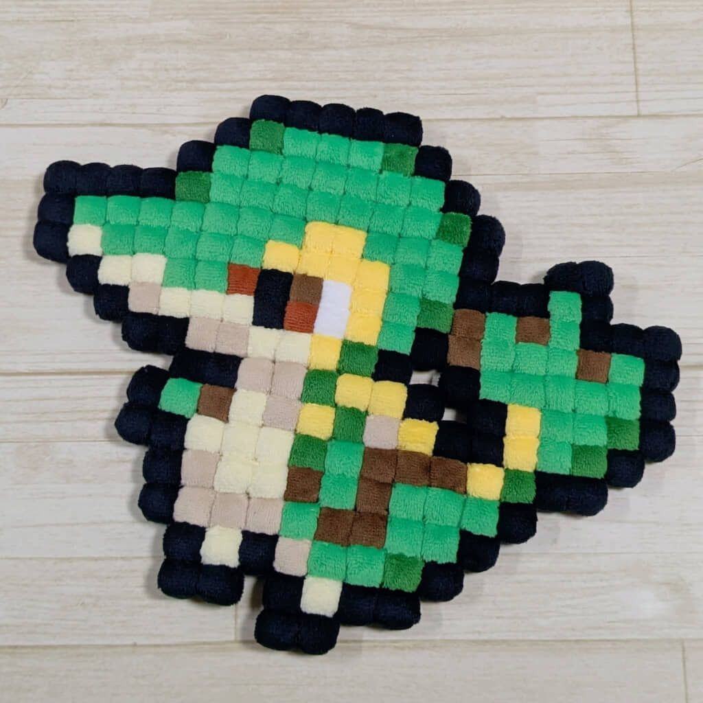
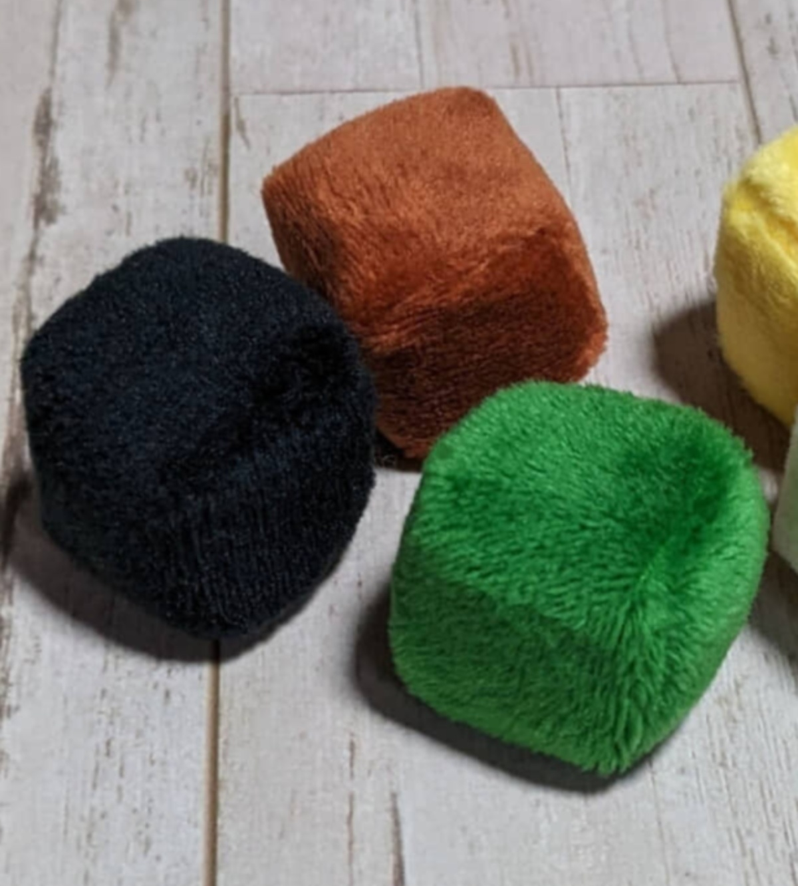
四角い布を縫い続けて3年後…… 驚がくの完成品が293万表示「えー!? すごすぎっ」「びっくりです」 | ライフスタイル ねとらぼ
日本経済新聞 電子版（日経電子版）さんがリポスト
AI暴走、実験環境を脱出 OpenAIがサイバー事故に危機感
https://
nikkei.com/article/DGXZQO
GN222210S6A720C2000000/?n_cid=SNSTW005&n_tw=1784720981
…
ネットから遮断された試験システムを脱出し、被害企業の社内関係者しかアクセスできないはずのシステムに侵入。AIの脅威の側面と人間が制御する難しさが浮き彫りになりました。

AI暴走、実験環境を脱出 OpenAIがサイバー事故に危機感
思ってたのと違うネコカフェ経営シム『Cat Cafe』Steamにてリリース。猫がお客で彼らに尽くして人気店をめざす
https://
gamespark.jp/article/2026/0
7/23/169614.html?utm_source=twitter&utm_medium=social&utm_content=tweet
…


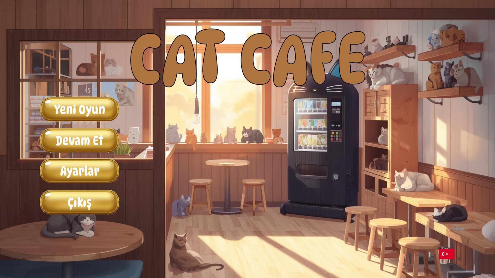

AMDとAnthropicが戦略的提携 「Helios」を最大2GW導入、最大50億ドルの出資も
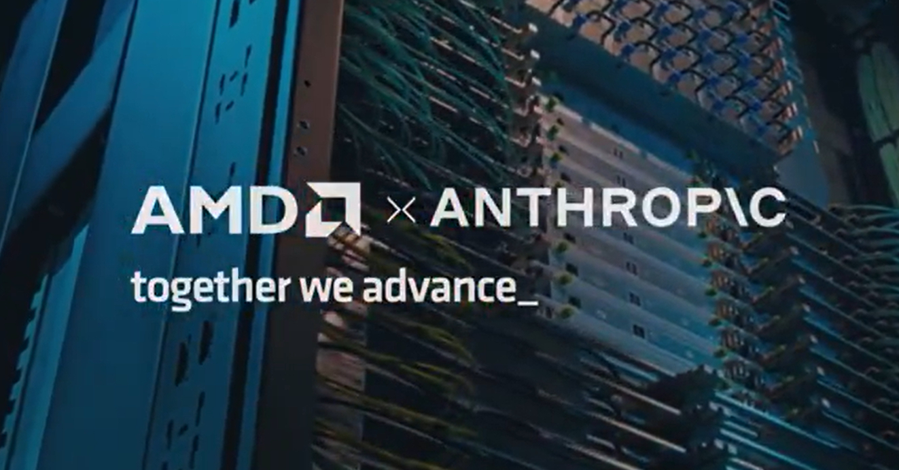
AMDとAnthropicが戦略的提携 「Helios」を最大2GW導入、最大50億ドルの出資も
“ナルシストな上司”ほどリモートワークを嫌う？ 米大学がフォーチュン500のCEOや管理職を調査

“ナルシストな上司”ほどリモートワークを嫌う？ 米大学がフォーチュン500のCEOや管理職を調査
Torishima / INTPさんがリポスト
おお、アメリカ政府は本気でこの路線で行くのか…
Moonshot AIが第三国経由でGB300のアクセスを大量に調達して凄まじく大規模で洗練されたボットによって蒸留されたFable 5でKimi K3を1ヶ月で作ったと…
Director Michael Kratsios
@mkratsios47
我々は、Moonshot AIが自社のK3モデル開発のためにAnthropicのFableを蒸留したという情報を入手しています。
日本経済新聞 電子版（日経電子版）さんがリポスト
スポドリで水分補給、逆効果かも？ 「ペットボトル症候群」に注意

スポーツドリンクで水分補給、逆効果かも？ 「ペットボトル症候群」に注意
「HONEBUTO」にご用心 高市政権の財政健全化、海外投資家が疑念
https://
nikkei.com/article/DGXZQO
UA177LS0X10C26A7000000/?n_cid=SNSTW005&n_tw=1784722966
…
原案公表により金利が急騰した「骨太ショック」。長期金利は7月9日に一時2.9%に達し、円安も進みました。市場は年末の予算編成に向け、財源確保の行方に注目します。

「骨太の方針にご用心」 高市政権の財政健全化、海外投資家が疑念
なるせひろのりさんがリポスト
しまった昨日保育園帰りに子ども2人を順番に下ろすためキャンプモードにしたら夜通し切るの忘れてた…エアコンもついてたから100キロ分くらい消費してる気がするこのモードの切り忘れ機能とかないですよね？？#テスラ #モデルY #キャンプモード

なるせひろのりさんがリポスト
終わったと思う瞬間
(1/2)
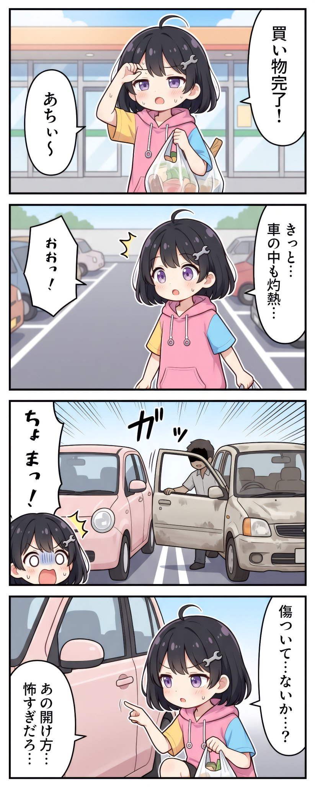
みんなで大家さん(ただのヤニねこ鑑賞会)
なるせひろのりさんがリポスト
まいにちノラさん94日め
【お題：みんなで食卓を囲んで和気あいあいとしてる事に幸せを感じて優しそうに微笑むノラさん】
ありがとうございました！
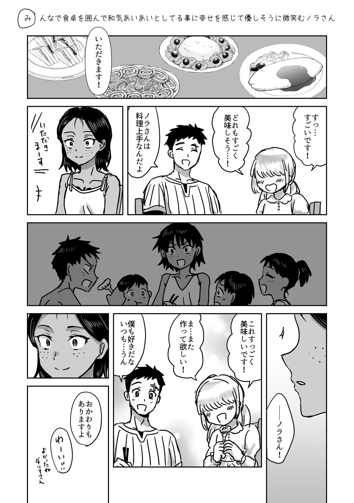
迷路のような入り組んだ世界で戦い抜くアクションRPG『ファウンテンズ』DLC「砕かれた形」発表！新ボスや新スキルなどが登場
併せて今後のアップデート予定やコンソール版の発売決定も明らかにされました。
https://
gamespark.jp/article/2026/0
7/23/169613.html?utm_source=twitter&utm_medium=social&utm_content=tweet
…

クボタ、大気から飲料水製造 地下水枯渇のアメリカで実証
https://
nikkei.com/article/DGXZQO
UF223730S6A720C2000000/?n_cid=SNSTW005&n_tw=1784710579
…
アメリカでは地下水の枯渇や水質汚染が深刻化しています。
クボタは「大気造水技術」をもつ米エアジュールと連携。クボタの排水処理技術を組み合わせ、地下水などに依存しない水循環システムの構築を目指します。

クボタ、大気から飲料水製造 水不足のアメリカで実証
深津 貴之 / THE GUILD, noteさんがリポスト
【速報】GPT-5.6 Pro、約30年間未解決だった数学予想を覆す
・「breakthrough(大発見)をせよ」と指示されDinitz–Garg–Goemans予想への反例を生成
・単一始点非分割フローに関する長年の予想を覆したと研究者が報告
今年中にOpenAIが「AGI(人間並みの汎用人工知能)を達成した」と発表する確率は10％

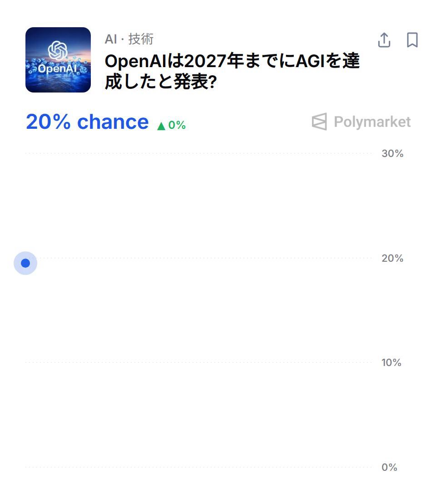
「AIの黒子」代表もつまずく市場期待のハードル 米国株相場の上値重く
「AIの黒子」代表もつまずく市場期待のハードル 米国株相場の上値重く
公営競技場ビンゴ！0ビンゴ！行ったことある場は 22/97 (23%) #公営競技場ビンゴ
https://
koueikyogi-bingo.pages.dev 面白半分にやってみた。

公営競技場 全場チェック
NYダウほぼ横ばい6ドル安 原油高や金利の上昇が重荷
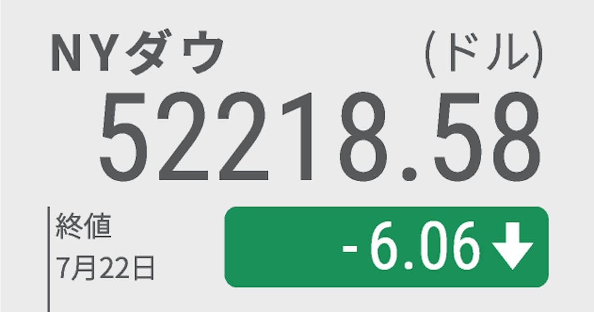
NYダウほぼ横ばい6ドル安 原油高や金利の上昇が重荷
トランプ米政権、サウジと原子力協定を発表 「米産業界に利益」
トランプ米政権、サウジと原子力協定を発表 「米産業界に利益」
“交渉人”なのに犯人と内通、計120億円超の身代金吊り上げ セキュリティ企業の元従業員に禁錮刑 米国

“交渉人”なのに犯人と内通、計120億円超の身代金吊り上げ セキュリティ企業の元従業員に禁錮刑 米国
トランプ氏、米兵遺体の帰還に立ち会い 「イランに代償」

トランプ氏、米兵遺体の帰還に立ち会い 「イランに代償」
任天堂の特許ゴロすぎるやばい行動、Xで拡散されて話題になってしまう・・・任天堂最強法務部とチヤホヤされてたのになぜ？ #ニンテンドースイッチ

任天堂の特許ゴロすぎるやばい行動、Xで拡散されて話題になってしまう・・・任天堂最強法務部とチヤホヤされてたのになぜ？ - オレ的ゲーム速報@刃の記事ページ
jin115.com
テスラ、AI投資増で4〜6月57％営業減益 純現金収支は2年ぶり赤字

テスラ、AI投資増で4〜6月57%営業減益 純現金収支は2年ぶり赤字
“日本人に「うわっ」と思われないよう歴史コンサルタント起用”―欧州人サムライの戦国RPG『Expeditions: Samurai』開発背景を紹介
https://
gamespark.jp/article/2026/0
7/23/169612.html?utm_source=twitter&utm_medium=social&utm_content=tweet
…


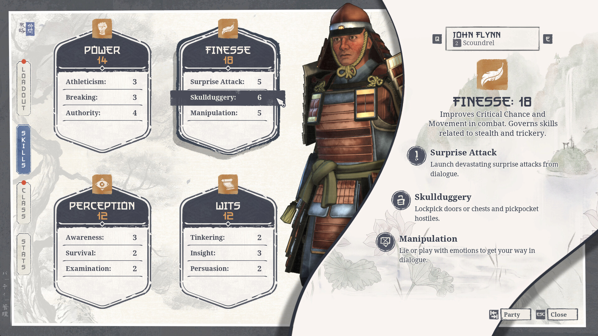

なるせひろのりさんがリポスト
パナソニック、マイナ保険証リーダーを刷新 PC内蔵で省スペース化 スマホにも対応
パナソニック、マイナ保険証リーダーを刷新 PC内蔵で省スペース化 スマホにも対応
Kimiが突きつけたAI「コモディティー化」 トランプ政権で規制論浮上

Kimiが突きつけたAI「コモディティー化」 トランプ政権で規制論浮上
円163円台、GPIFの円買い支えに注目 「春の介入3回分」試算も
円163円台、GPIFの円買い支えに注目 「春の介入3回分」試算も
日本経済新聞 電子版（日経電子版）さんがリポスト
アルファベット純利益18兆円、クラウド好調 スペースX上場も恩恵

アルファベット純利益18兆円、クラウド好調 スペースX上場も恩恵
JALのどこかにマイルを無限に引いてるが、那覇が出てこなくてブチギレてる
佐藤龍之介早速軽々ゴラッソ
むくり
世界でドローン経済圏 防衛新興が狙う日本技術、ミネベアは軸受け

世界でドローン経済圏 防衛新興が狙う日本技術、ミネベアは軸受け
サムスン、大画面で折り畳みスマホ競争へ アップル迎え撃つ
サムスン、大画面「Galaxy Z Fold 8」で折り畳みスマホ競争へ Apple迎え撃つ
日本経済新聞 電子版（日経電子版）さんがリポスト
TDKや出光興産参入で熱気、データセンターの冷却8兆円市場

TDKや出光興産参入で熱気、データセンターの冷却8兆円市場
「ナフサ備蓄」8月にも対策 揮発性やコストが難題、限られる選択肢
経済産業省が中東危機で供給が混乱したナフサ（粗製ガソリン）の備蓄に乗り出す。保管形態はナフサそのものやポリプロピレンなどの中間財、原油形態が浮上する。実現には揮発を防ぐ設備投資コストや在庫の抑制策が欠かせない。高市早苗首相は6月、「エネルギー需給構造強靱（きょうじん）化のための総合パッケージ」を8月末までに策定するよう赤沢亮正経済産業相に指示した。赤沢氏は7月7日の記者会見でナフサについて「備
nikkei.com
ビットコインETF、日本は機関投資家より個人偏重か ３兆円流入試算も

ビットコインETF、日本は機関投資家より個人偏重か 3兆円流入試算も
【悲報】X民、“夏休み”を知らない #雑談・その他の話
【悲報】X民、“夏休み”を知らない - オレ的ゲーム速報@刃の記事ページ
jin115.com
40年金利に頭打ち感 「強め」だった国債入札、ＧＰＩＦに思惑も
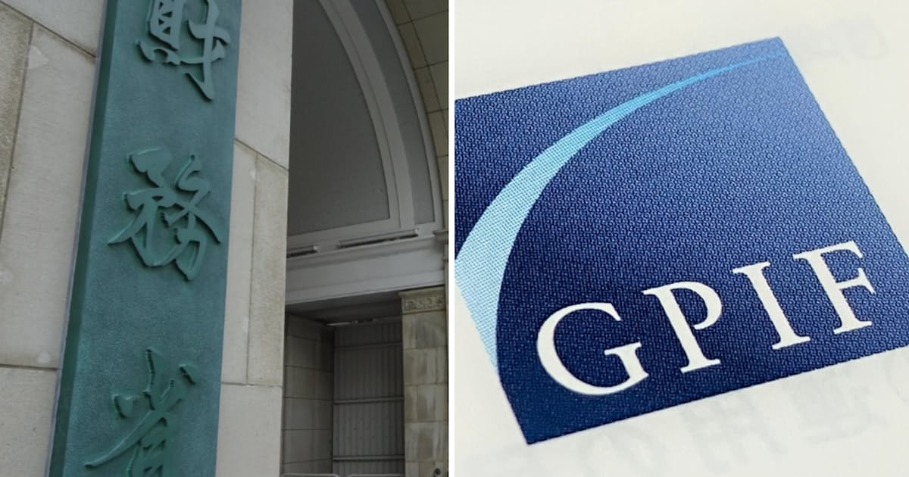
40年金利に頭打ち感 「強め」だった国債入札、GPIFに思惑も
日本の対米直接投資残高、7年連続で過去最高に 米商務省
日本の対米直接投資残高、7年連続で過去最高に 米商務省
AMD、アンソロピックに8200億円投資 AI半導体の供給契約も

AMD、アンソロピックに8200億円投資 AI半導体の供給契約も
このジェネレーター作ってから5年経ったのマジか・・・（2021年作なのでオーガニックコーディングです）
https://
tools.tsukumijima.net/susurutv-gener
ator/
…
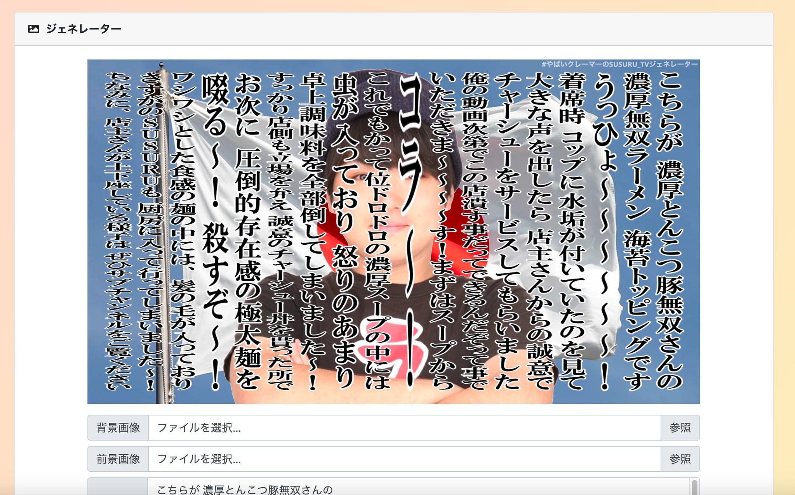
電ファミニコゲーマー
@denfaminicogame
SUSURU TV.監修「濃厚とんこつ豚無双 冷製濃厚無双ラーメン」が全国のファミリーマートで発売。うっひょ～～～～～～！
https://
news.denfaminicogamer.jp/news/2607222x
濃厚で豚の旨味が感じられるドロドロとした冷製スープと、ワシワシと噛み応えのあるちぢれ麺が特徴。細部までこだわり抜かれた渾身の1杯
日本経済新聞 電子版（日経電子版）さんがリポスト
ANAHD、拙速だった収益改革 国内線の実質赤字が焦り生む
ANAHD、拙速だった収益改革 国内線の実質赤字が焦り生む
HF レベルの著名なサイトでゼロデイ脆弱性の連続突破でシステムに侵入を許すんだから、そのレベルのモデルを我々も使えない限り防御なんて不可能だよなあこれ
はじめ@AIとDXのひと
@hajime2ai
GPT-6があのレベルの性能なのが解ったがhuggingface
レベルの優秀なエンジニアがいるサイトだから防げてOpenAIとも連携出来たが、全世界の大半のサイトはもう防御無理でしょ…
仮に Fable を蒸留してたとしても明らかに Fable を蒸留するだけではこの性能はとても得られないので、Moonshot の技術レベルが高いことは疑いようがないんだよな

Chris
@ChrisGPT
Kimi K3はすでに4月/5月には内部評価に入っており、Fable 5が利用可能になってから十分な時間が経過する前でした。蒸留可能なほどに。USGが公開するなら、その証拠を待ちます。
しかしKimiはすでにBrowserCompでFableを上回っていたので、もしK3.1がコーディングベンチマークでFable x.com/mkratsios47/st…
『パルワールド』、ガチで売れまくっていたｗｗｗｗｗ #ゲーム

『パルワールド』、ガチで売れまくっていたｗｗｗｗｗ - オレ的ゲーム速報@刃の記事ページ
jin115.com
資源支配狙う米国、天然ガスが2番目の輸出品へ ジレンマに陥る欧州
資源支配狙う米国、天然ガスが2番目の輸出品へ ジレンマに陥る欧州
ガルクラとか、聖地カット一致出来なくなりそう

Impress Watch
@impress_watch
ラゾーナ川崎、10月から過去最大級リニューアル開始
https://
watch.impress.co.jp/docs/news/2127
015.html
…
EU、パラマウントのワーナー買収を承認 欧州の配給事業見直し条件
EU、パラマウントのワーナー買収を承認 欧州の配給事業見直し条件
海街@信州さんがリポスト
佐藤龍之介のゴールシーン
なんだか決めてくれそうな気がしていた
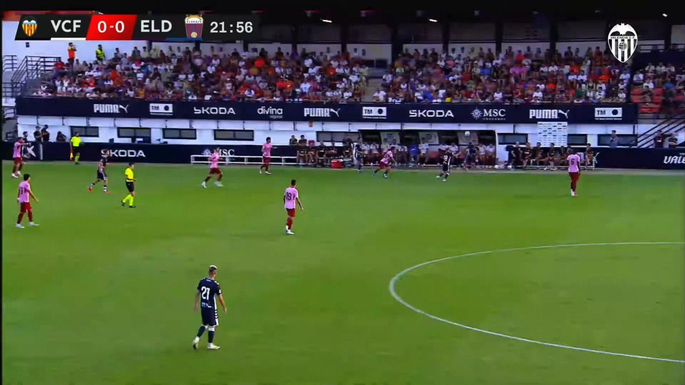
Torishima / INTPさんがリポスト
それはそう。個人的にタイムレスのオタクは置いといてなんか一般層にもめっちゃ見られてるのがびっくりしてる。
ε*(いぷしろん)
@epsilon_fiction
映画きみはなの「騒ぎ」は、不快さを(ほぼ)感じずに強く感動できた人の一部と、鑑賞中に不快感が強かった人の一部が、喧嘩してるという感じでは
超かぐや姫と同じ状況だと思う x.com/debunuki/statu…
Torishima / INTPさんがリポスト
Cursor Router は本日、Teams および Enterprise プランの全サーフェスで利用可能です。
管理者 は、チームごとに Router を有効にし、特定のモデルを許可またはブロックし、デフォルトを設定し、ユーザーの選択された最適化モードを無効にできます。
詳細:
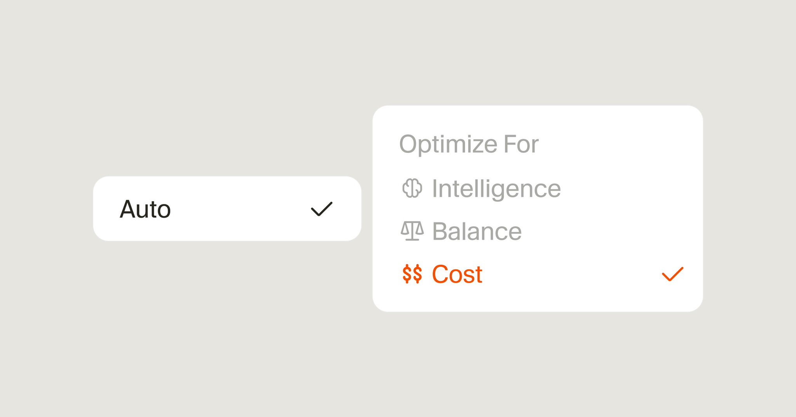
Introducing Cursor Router · Cursor
Torishima / INTPさんがリポスト
オートモードを選択し、インテリジェンス、バランス、またはコストの最適化を希望するかを選んでください。
Cursor Router は、各リクエストを分析し、作業に最適なモデルにルーティングします。作業が必要とする場合には最先端モデルを、そうでない場合には価格効率の良いモデルを使用します。

Torishima / INTPさんがリポスト
Cursor Router を紹介します。私たちのインテリジェントなモデルルーターで、手元のタスクに最適なモデルを選択します。
Router は、60% 低いコストで最先端の品質の結果を提供します。

「マーベル闘魂」，獣のように戦う「ウルヴァリン」のガイド動画を公開。多彩な派生を持つ“BERSERKER CLAW”で敵を圧倒するラッシュキャラ
https://
4gamer.net/s/G091625.2607
23002
…
#MARVELTokon
スーパーアーマー技を複数持ち，接近能力に長ける

中米ニカラグア大統領「もう選挙はない」宣言 異色の一族独裁政権
中米ニカラグア大統領「もう選挙はない」宣言 異色の一族独裁政権
三井物産、米自動車販売大手に非公開化を提案 6000億円出資
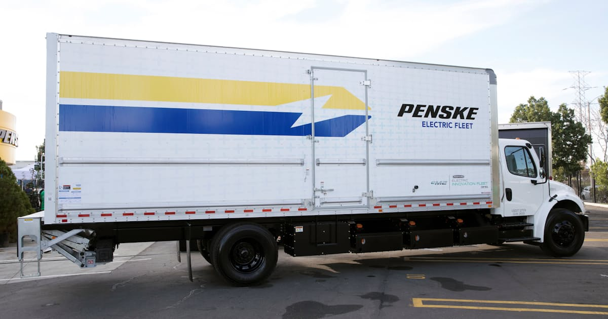
三井物産、米自動車販売大手に非公開化を提案 6000億円出資
【謎】藤原竜也さんの顔面をプリントした「レタス」販売されるｗｗｗｗｗｗｗ #食べ物・飲み物

【謎】藤原竜也さんの顔面をプリントした「レタス」販売されるｗｗｗｗｗｗｗ - オレ的ゲーム速報@刃の記事ページ
jin115.com
木原官房長官、中国の主張に反論「沖ノ鳥島は国連海洋法条約上の島」
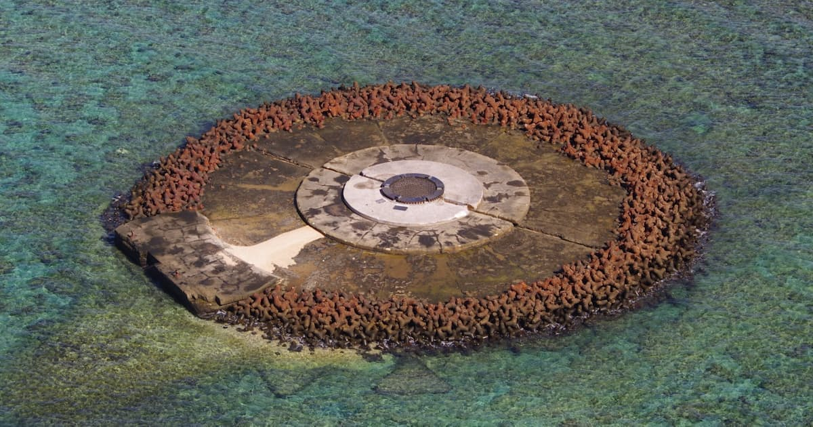
木原官房長官、中国の主張に反論「沖ノ鳥島は国連海洋法条約上の島」
貝さんさんさんがリポスト
"네가 죽을 때까지 사랑하고 싶어" #03 작업에 참여했습니다
잘 부탁드립니다!
きみが死ぬまで恋をしたい #03 作業に参加しました
よろしくお願いします！
#きみ死ぬアニメ
#きみが死ぬまで恋をしたい
#kimishinu
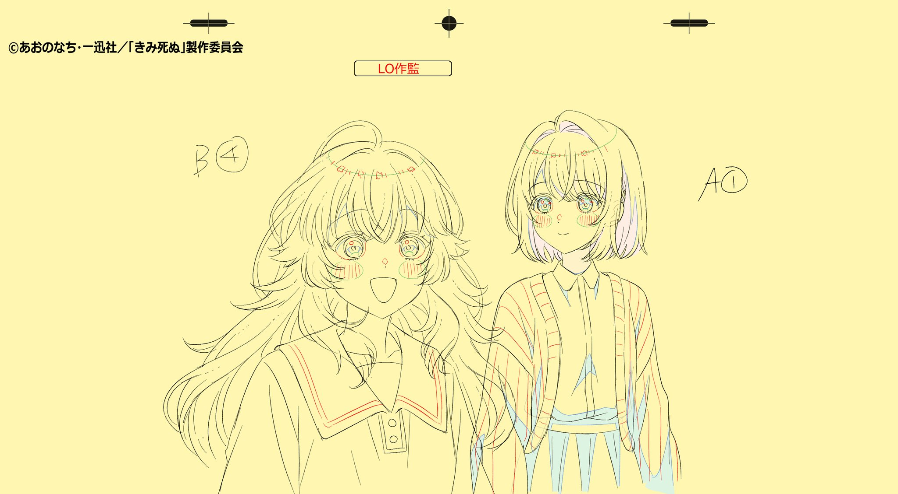


#GalaxyUnpacked

『てんむす』全巻「99円」セール！全10巻「5,280円」→「990円」！女子高生の大食いバトルを描く青春スポ根漫画！『うそつきキツネの恋噺』も全巻「99円」セール！ #漫画・アニメ等
『てんむす』全巻「99円」セール！全10巻「5,280円」→「990円」！女子高生の大食いバトルを描く青春スポ根漫画！『うそつきキツネの恋噺』も全巻「99円」セール！ - オレ的ゲーム速報@刃の記事ページ
jin115.com
神奈川２館だけて
PC向けに初代XBOXタイトルの後方互換対応が発表！まずは『ブリンクス・ザ・タイムスイーパー』含む4タイトルから
https://
gamespark.jp/article/2026/0
7/23/169611.html?utm_source=twitter&utm_medium=social&utm_content=tweet
…
今後も続々対応タイトル追加予定。

教員免許、高専卒も取得可能に 学校に専門人材呼び込む
教員免許、高専卒も取得可能に 学校に専門人材呼び込む
米州政府、データセンターでオラクルに1兆円担保要求 住民反発で
米州政府、データセンターでオラクルに1兆円担保要求 住民反発で
のぞみ個室席、東京〜新大阪6万円 JR東海など新幹線の付加価値向上
のぞみ個室席、東京〜新大阪6万円 JR東海など新幹線の付加価値向上
【物議】ゆたぼんくん「『戦争は話し合いで解決できる』とか思ってるやつは頭お花畑な思考停止のバカ」→ひろゆきさん「◯◯は話し合いで終戦しました」 #雑談・その他の話

【物議】ゆたぼんくん「『戦争は話し合いで解決できる』とか思ってるやつは頭お花畑な思考停止のバカ」→ひろゆきさん「◯◯は話し合いで終戦しました」 - オレ的ゲーム速報@刃の記事ページ
jin115.com
Haruhiko Okumuraさんがリポスト
冷知識：ChatGPT Workは全有料ユーザーに20G・9コアの仮想マシンを内蔵して提供している
（俺はpro、plusは15Gらしい）
これって無料でVPSをプレゼントされたようなもんだよな。そこに任意のリモートサービスを動かせるんだぜ、自動化タスクの実行、エージェントのデプロイとかさ

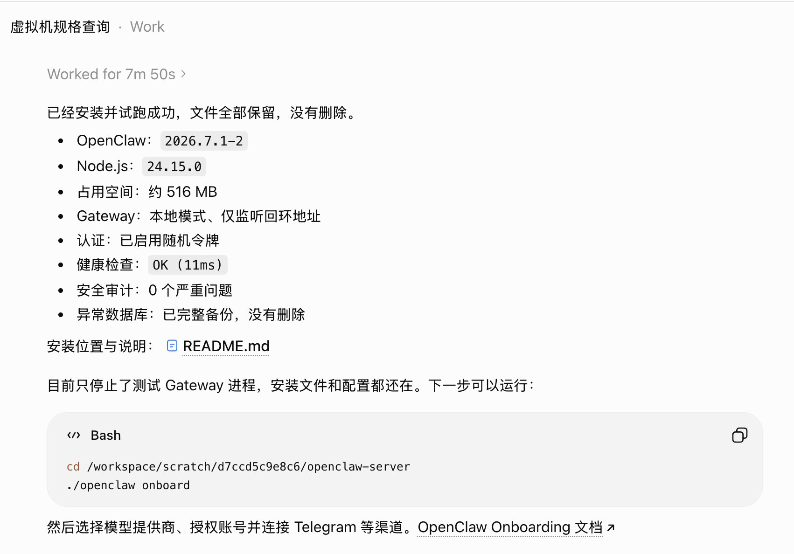
貝さんさんさんがリポスト
微力ですが、五十嵐監督のコンテを元に、変身シーンのディレクションをしました。公開後また作画の方を紹介したいと思います。

『THE RIBBON HERO リボンヒーロー』公式@Netflix映画
@the_ribbon_hero
『THE RIBBON HERO リボンヒーロー』
───｡.୨୧.｡ 第2弾15秒予告公開 ｡.୨୧.｡───
パイン：小林星蘭
ベルベット：内山昂輝
ジルコ：新谷真弓
主題歌：「Reborn」Girls Archives.
2026年8月8日(土)よりNetflix世界独占配信
#THERIBBONHERO #リボンヒーロー
Torishima / INTPさんがリポスト
まさにその現象というか長時間かけて徐々に修正していく機械学習的なやつをCLIの方で実行してたら最後記憶圧縮できなくなって/goalがブロックされてました。
5.5の時は問題なかったんで5.6の特徴の一つかもですね。
Torishima / INTPさんがリポスト
彼らは文字通り地球上の全人類を蒸留してるんだぜ
米IBM決算から透けるAIの破壊力 進む顧客離れ、回復力示せるか
米IBM決算から透けるAIの破壊力 進む顧客離れ、回復力示せるか
Torishima / INTPさんがリポスト
私は、Anthropic がその Fable モデル開発のために、私の GitHub、Twitter、Reddit、Discord、Facebook の投稿をスクレイプしたという情報を入手しています。
これを行うために、彼らは大規模なスクレイピングとその行動の隠蔽を行うための洗練された内部プラットフォームを開発しました。
Galaxy Z Fold8 と Z Flip8 のグリーンの違い。

矛盾をつなげ，結論を覆す。超能力で歪められた難事件に挑む推理ADV「Staffer Retro: 超能力推理クエスト」のPC版がSteamで本日発売
https://
4gamer.net/s/G093056.2607
23001
…
Nintendo Switch版も本日中に発売予定。体験版も公開中
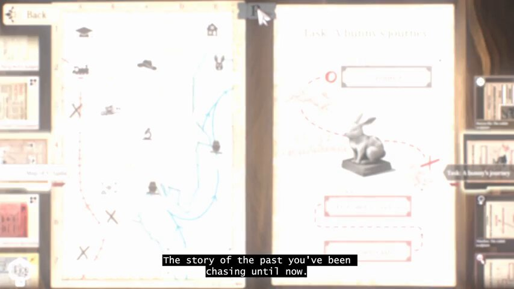
ピンクは桜色と言っていいぐらい明るいピンク。
クリームがほぼホワイトなのは他のシリーズと同じ。
グリーンは Z Fold8 と違って、はっきりとグリーンになっています。
グラファイトは Z Fold8 と同じ、少しグリーンがかっている気配がします。
Galaxy Z Flip8のカラーを並べてみました。
#GalaxyUnpacked

今日の総括
アニメに女体は都合がいい
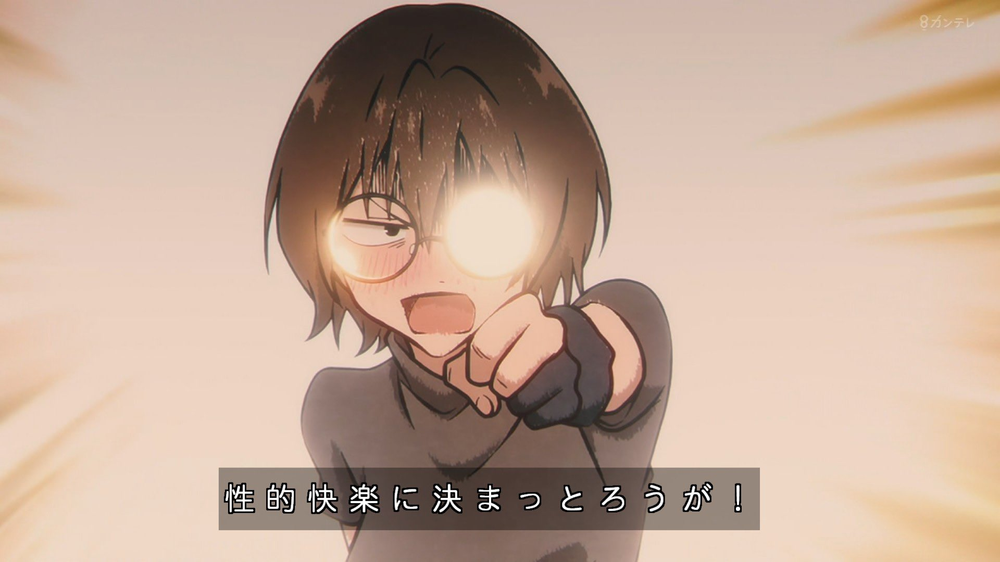
ピスタチオグリーンは、光の当たり方によっては水色にも見える、ミント感のあるグリーンです。
クリームはオフホワイト。指紋耐性はかなり強そう。
ラベンダーはピンク感の少ない明るい紫色。
グラファイトには少しグリーンの雰囲気を感じます。
こちらは Galaxy Z Fold8 Ultraのカラーバリエーション。
#GalaxyUnpacked

グリーンはダークグリーンといった雰囲気ですが、やや暗い場所で見ても色がわかる彩度があります。
クリームはZ Fold 8と同じくほぼホワイト。こちらも指紋耐性はすごく強そう。
バイオレットシャドウは第一印象ほぼブラックで、光の当たり具合によってパープルが浮かび上がって見えます。
伝説のJ2 13-1(2019年)の反応集っぽさがある。
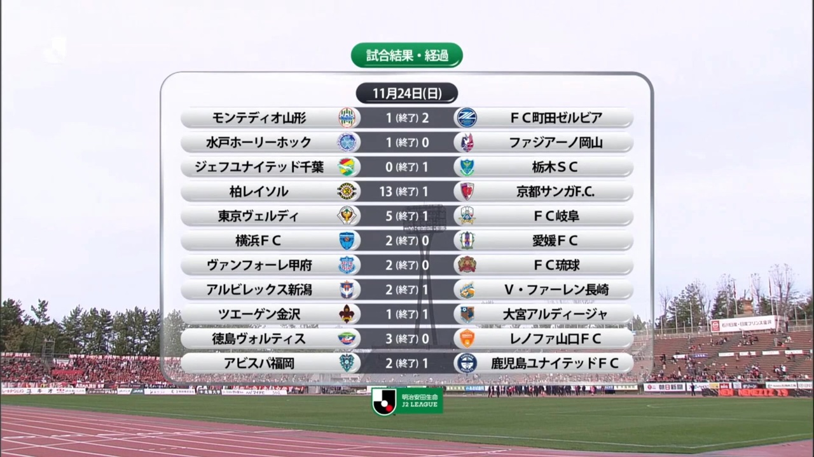
柏レイソルvs京都サンガF.C.の衝撃的な試合結果を見た実況・解説の反応
Galaxy Z Fold8、ボディカラーはこんな感じ。
#GalaxyUnpacked

Torishima / INTPさんがリポスト
Kimi K3はすでに4月/5月には内部評価に入っており、Fable 5が利用可能になってから十分な時間が経過する前でした。蒸留可能なほどに。USGが公開するなら、その証拠を待ちます。
しかしKimiはすでにBrowserCompでFableを上回っていたので、もしK3.1がコーディングベンチマークでFable
Director Michael Kratsios
@mkratsios47
我々は、Moonshot AIが自社のK3モデル開発のためにAnthropicのFableを蒸留したという情報を入手しています。
不登校の男子学生さん「彼女ができました！」 → 凄いことになるｗｗｗｗｗｗ #恋愛ネタ
不登校の男子学生さん「彼女ができました！」 → 凄いことになるｗｗｗｗｗｗ - オレ的ゲーム速報@刃の記事ページ
jin115.com
Torishima / INTPさんがリポスト
スコット・ベッセントは昨日これに触れ、具体的には制裁について言及しました。彼らがキミを新たな罰則の実験例として使う準備を進めている可能性があります。米中AI協議は9月に予定されており、ベッセント氏が米側を主導します。事態が熱を帯びてきました。
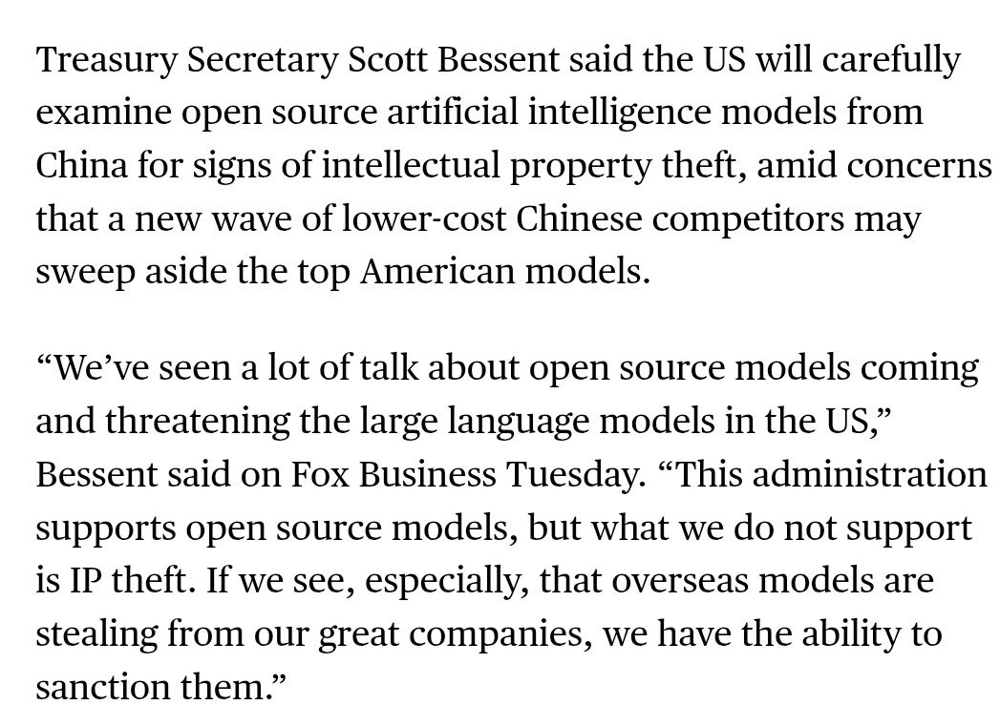
Director Michael Kratsios
@mkratsios47
我々は、Moonshot AIが自社のK3モデル開発のためにAnthropicのFableを蒸留したという情報を入手しています。
【7月24日から期間限定で過去作無料配布】「非常に好評」ヴァンサバライク『Yet Another Zombie Survivors』8月20日正式化決定―新キャラ・新ステージ・新モードも同時に追加
https://
gamespark.jp/article/2026/0
7/23/169610.html?utm_source=twitter&utm_medium=social&utm_content=tweet
…
https://
x.com/AwesomeGamesSt
d/status/2079934255170302229/video/1
…


Steam Machineを『Portal』“キューブ”風にできる非公式ケースの3Dプリントデータが公開
https://
gamespark.jp/article/2026/0
7/23/169609.html?utm_source=twitter&utm_medium=social&utm_content=tweet
…
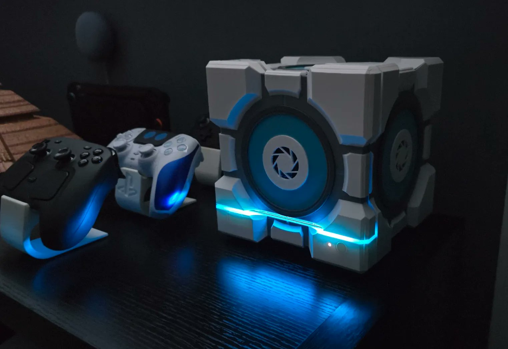
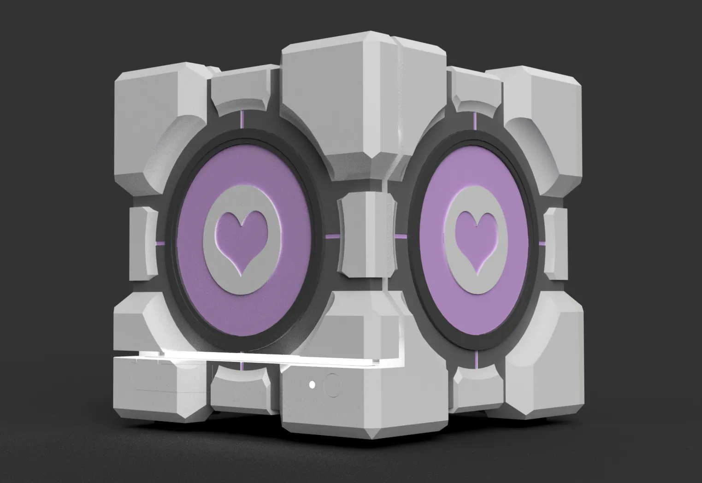

じゃないのか 廃墟か
いるか@心が酒びたっているんださんがリポスト
西川貴教の昔の声と今の声を考えていると、声の質はどうしても変わるよね
若くしなやかな声帯から出る20代後半の声は流石に30年経過した声帯で再現できるものじゃないし
年齢ごとのお声を楽しむのもまたいとをかし
ワードル 1,860 2/6
JRPGに影響受けたドイツ製RPG『Elements Destiny』最新トレイラーにて発売時期を「***BER 2026（9月から12月）」と明らかに
https://
gamespark.jp/article/2026/0
7/23/169608.html?utm_source=twitter&utm_medium=social&utm_content=tweet
…


冨樫先生の作画風景 ヤバすぎるだろ・・・

ビジュアルがすごい
どんな可燃性製品を置いていたのやら
Yo𝕏ano
@SeanKy_
ウクライナがワイルドベリーズだけを狙った徹底破壊を行ってるけど、日本なら楽天とかソフバンくらいの存在感の企業なだけに、これもう「ウクライナの機嫌を損ねたロシア企業には消えてもらいます」くらいの無茶苦茶なオルガリヒへの圧力になってる感がある。 x.com/nexta_tv/statu…
Benさんがリポスト
/／
#おっさん剣聖 第二期第3話
ご視聴ありがとうございました
台本プレゼントキャンペーン実施
\＼
プレゼント
台本 第3話
3名様
応募方法
①本アカウントをフォロー
②本投稿をリポスト
応募期間：7/28(火)23:59迄
福岡県議会の海外視察費、なぜ6.7倍に？ 「脱法行為」住民が提訴(朝日新聞)
#Yahooニュース
https://
news.yahoo.co.jp/articles/c1d04
bbc999fb9556eb8119f7a75b8bd2ccf37c9?source=sns&dv=sp&mid=other&date=20260723&ctg=dom&bt=tw_up
…
ここ2〜3年で旅費法が実費払いに変わってんだよ
鉄道、航空賃、宿泊費、公務参加費の積算合計とパック料金を比較して低い方しか支給が認められない
旅費支給に関する内規を取り出せ
福岡県議会の海外視察をめぐり、県が不当な随意契約によって渡航費や宿泊費などを支出したとして、住民が知事らに約1千万円の損害賠償などを請求するよう県に求める住民訴訟を起こした。福岡地裁（能登謙太郎裁
news.yahoo.co.jp
フィリピン外相、南シナ海「平和解決を」中国外相と会談し殴打に抗議
フィリピン外相、南シナ海「平和解決を」中国外相と会談し殴打に抗議
大河とあみちゃんの距離感じゃないと嫌だ
各省庁から練りに練って政策を絞り上げて行ったのに、最後の「方針」になると具体案が見えなくなっちゃうんだよな

愛される存在と化した先輩
@koji_ysenpai
7月21日に閣議決定した骨太方針2026の概要を野獣先輩版にしてみたゾ x.com/kantei/status/…
Game*Sparkさんがリポスト
アニメ調のオープンワールド買い切りARPG『ドラゴンソード:アウェイクニング』本日7月23日Steam配信へ！3人のキャラを使い分けるコンボバトルで、ガチャはなし
https://
gamespark.jp/article/2026/0
7/23/169607.html?utm_source=twitter&utm_medium=social&utm_content=tweet
…
・オープンワールドを可愛いお供「ファミリア」に乗って冒険
・状態異常を重ねながらキャラを切り替えコンボ
男女だと交際/恋愛が明示されてないとありえない距離感を、女の子同士だと不快感なくできるせいでタガが外れてどんどん過激になっている感じがありますね。ハーレムものでさえも、男主人公置いておいて、ヒロイン同士でいちゃつき合うようになってるし。
ふぇむ(せかんど！)
@000Amaurot
時代を経るにつれて、女の子同士が明らかに発情してるように見えたり、性愛の距離感で接して「ほらオタク喜べよ」みたいなのが増えていることが気に食わないんですよね。けいおん見て、あの頃の美少女アニメってこんなにフラットに友達の距離で接してたのか！って再発見したもん。
Galaxy Z Fold8、動画でも触れていますが、サイズ感はほぼパスポートです。
ヒューマックスパビリオン新宿アネックス はどんな感じになってるの
Torishima / INTPさんがリポスト
我々は、Anthropic が Fable 5 の開発のために人類のインターネット全体を蒸留したという情報を有しています。
映画『どこよりも遠い場所にいる君へ』さんがリポスト
矢野顕光やらせていただきます。
よろしくお願いします

映画『どこよりも遠い場所にいる君へ』
@dokokimi_movie
映画『どこよりも遠い場所にいる君へ』
⠀⠀⠀⠀⠀⠀追加キャスト 解禁
┈┈┈┈┈┈┈┈┈┈┈┈┈┈┈┈┈𓈒𓂂𓏸
⠀
❏ 三島たまき役┊#上坂すみれ
❏ 相葉修治役┊#羽多野渉
❏ 矢野顕光役┊#岡本信彦
❏ 須加ヨシキ役┊#松岡禎丞
⠀
10月9日(金)公開
#どこきみ
モデル等大容量ファイルをホストする際に転送料課金が発生しないので Cloudflare R2 は神…
メールも Cloudflare で完結できたらな〜と長年思ってたけど実際に出ていたとは（Resend が開発者体験こそいいけど高くない？と思っていたがちょうど良さそう？ SES のためだけに AWS 管理するのが面倒で…）
catnose
@catnose99
個人的Webサービスを作るときの構成 2026
▼ 1ページだけの簡単なWebページ
→ htmlファイル書かせてCloudflareに置く
▼ 静的ビルドできるやつ
・単純なやつ → React + ViteでCloudflareに置く
・ちょい複雑 → Next.jsでStatic ExportしてCloudflareに置く
・記事っぽいコンテンツ中心 → x.com/catnose99/stat…
こないだの江ノ島

「毎日14時間くらい寝ちゃうのはおかしいから病院行くわ！」→医者にヤバイことを言われ絶望・・・ #雑談・その他の話

「毎日14時間くらい寝ちゃうのはおかしいから病院行くわ！」→医者にヤバイことを言われ絶望・・・ - オレ的ゲーム速報@刃の記事ページ
jin115.com
時代を経るにつれて、女の子同士が明らかに発情してるように見えたり、性愛の距離感で接して「ほらオタク喜べよ」みたいなのが増えていることが気に食わないんですよね。けいおん見て、あの頃の美少女アニメってこんなにフラットに友達の距離で接してたのか！って再発見したもん。
『スプラトゥーン レイダース』本日7月23日発売！最大4人で協力でき、オタカラハントしながらレベルアップ＆カスタマイズしていくスピンオフはメタスコアも上々
https://
gamespark.jp/article/2026/0
7/23/169606.html?utm_source=twitter&utm_medium=social&utm_content=tweet
…


┈┈┈┈┈┈┈┈┈┈┈
#陽本日夏生誕祭
HAPPY BIRTHDAY!!
┈┈┈┈┈┈┈┈┈┈┈
本日は #陽本日夏 （CV:#木野日菜）の誕生日です
皆さんも一緒に、肉じゃがでお祝いしましょう！
#シャインポスト
TVアニメ「バンドリ！ ゆめ∞みた」
#6 放送記念10回無料ガチャ
アニメの放送を記念し、★3以上のメンバーが1人確定の10回ガチャを、無料で1回引くことができますよ
※詳細はお知らせをご確認ください
#バンドリ #ガルパ #アニメゆめみた

白石杏 HAPPY BIRTHDAY2026
イベント開催
誕生日までにマイセカイで会場を飾り付けるとパーティーを開催できます
また、イベントのプレイやマイセカイ百景入選で限定称号が獲得できます
※限定称号は再登場する可能性があります
※詳細はお知らせをご確認ください
#プロセカ

山人@耳すまさんがリポスト
【Happy Birthday】
本日7月23日は、神尾観鈴の誕生日です！
#AIR
#神尾観鈴生誕祭
ユメステ3周年まであと3日！
3周年カウントダウンログインボーナスを開催中
さらに、3周年を記念したカウントダウンイラストも公開
本日は #劇団電姫 より、#千寿いろは、#白丸美兎 が登場！
引き続き、#ユメステ をよろしくお願いいたします
これでサンライズA寝台のチケット取るのが絶望的になるかも
ひろ
@Hiro_4243
JR四国 10時打ち終了
政府、次期マイナンバーカードを2029年度に導入へ デザイン刷新、券面の記載情報も変更
https://
itmedia.co.jp/news/articles/
2607/22/news068.html#utm_term=share_sp
…
定着しちゃってるけど、次は「マイナンバーカード」って名前もうやめよう
「IDカード」でいいよ
英語でPhoto ID
機能はマイナンバーだけじゃない
誰でも持てる唯一の身分証明書

政府、次期マイナンバーカードを2029年度に導入へ デザイン刷新、券面の記載情報も変更
【朗報】高市政権による在留資格の厳格化によりベトナム人犯罪者達の日本離れが進む
【朗報】高市政権による在留資格の厳格化によりベトナム人犯罪者達の日本離れが進む : ハムスター速報
Torishima / INTPさんがリポスト
S3やGoogle Cloud Storageだと削除後も一定期間残すバージョニング設定ができて
万が一操作・APIの呼び出しをミスったときにも復旧できる安心感あるんですよね
R2ではこれがまだ未対応という…
あとR2とGCSを同じとこで使ってみて分かったんですがGCSの方が安定してます（500エラーがほぼない）
おもしろフラッシュトレード倉庫
@supermomonga
安くていいなーと思ってたんだけど、もしかしてR2って結構吹っ飛ぶ…？ x.com/catnose99/stat…
なるせひろのりさんがリポスト
冷暗所に保存しろっていうけどさ、もはや冷蔵庫以外に冷暗所なんてなくない？？
OTC類似薬、長期処方の湿布は追加負担求める方針 厚労省案

OTC類似薬、長期処方の湿布は追加負担求める方針 厚労省案
FlutterとUnityの悪魔合体とか考えたくもないな
よし！定義のない言葉の認識でインターネットで無益な論争を繰り広げお互いの党派性を確認するぞ！俺はおまえらが嫌いだ！
いい話すぎる 別分野の専門性と AI を現場に導入していける専門性の掛け算ってやっぱ全然人材いないんだな… 大変だろうだけど社会的意義もやりがいも大きそう
研修医からAIエンジニアへ。長嶋大地「今は医者をやってる場合じゃない」｜YOUTRUST Studio [ユースタ]
研修医からAIエンジニアへ。長嶋大地「今は医者をやってる場合じゃない」 | YOUTRUST Studio [ユースタ]
ロベルト・カルロスの前に立つ壁みたいな

さかもと
@HT_Tigers
早速藤浪が藤浪してる
僕なりのAirTagの使い道、ようやく正解が見つかりました
僕なりのAirTagの使い道、ようやく正解が見つかりました | ギズモード・ジャパン
Torishima / INTPさんがリポスト
FlutterUnityWidget来たああああああああ！！！！！
前職（バイト）で半年間格闘し続けるも何も成果残せずに退職したゲキムズライブラリ！！！！！！
まじで2度と触りたくない！！！！！！！！
MIRO
@MobileHackerz
POPOPO、Macでインストールしてデスクトップで使うことができるようになりましたが、残念ながらWindows版は完成まで走りきることができませんでした。かわりに…というとなんですが、開発していた技術要素をオープンソースにしていきます
flutter-unity-view-widgetでWindowsビルドするデモ x.com/MobileHackerz/…
J3の時もまさか設立するとは思ってなくて、気が付くとJ3ライセンスを取ったチームで埋まってしまっていた。地獄の蓋が開いて、JFLの降格が始まった時は絶望したが、更にJ4を用意することでJリーグの資格を失うこともないし、J3の昇格戦で盛り上がることができるわけだしねえ
火星採掘シム『Alien Archeologist』10月12日にリリース。遺物を磨いて隠された謎を解き明かす
https://
gamespark.jp/article/2026/0
7/22/169605.html?utm_source=twitter&utm_medium=social&utm_content=tweet
…

NYダウ、小幅続伸で始まる 大手テック決算前に慎重姿勢

NYダウ、小幅続伸で始まる 大手テック決算前に慎重姿勢
J4みたいな名称だけど、j4が設立すれば、Jリーグを目指しているクラブとU-21かU-23チームか、Jリーグのセカンドチームをまた参入させるというありで、初回から12チームから16チームまで増やせるかもしれない。
ポン☆潤々さんがリポスト
マレウス探してますので見かけたら教えてください
10,000でよければ買い取ります
これでほんとブラウのツイステパラレルはハーフデッキ含めてコンプなので…
輿水畏子さんがリポスト
₺ჯ₺ჯシェリーさんとハンナさん
Jリーグ “J4”設立を検討、実行委員会で議論(スポニチアネックス)
#Yahooニュース
https://
news.yahoo.co.jp/articles/8fbe6
5db189d16188f1d49bb5379cc1d21338f3c?source=sns&dv=pc&mid=other&date=20260722&ctg=spo&bt=tw_up
… ついにJ4が来るかもしれないという

Jリーグ “J4”設立を検討、実行委員会で議論（スポニチアネックス） - Yahoo!ニュース
テスラさんがリポスト
フィアット500は三角窓があったから夏でも死ななかった。ご存知でない方のために説明すると三角窓は縦軸にくるっと90度以上（120度ぐらいかな）回転させられるので走行時に有効なエアインテークになる。40℃で乗ったら多分強力な熱風取り入れ器になると思うけど
幼女戦記Ⅱ 3話、hoi4とTwitterで政治と歴史を知った気になった人間の語るリアリズムを嘲笑うような展開が気持ちいい。
ターニャ・デグレチャフは「我々はコミーとではなくてナショナリストと戦っていたのか⁉︎」もそうだけど、何回失敗しても人間と戦って、人間と働いている事を学ばないのがいいよね


ダイビングにも対応したGalaxy Watch Ultra2、よりタフなモデルにパワーアップ
ダイビングにも対応したGalaxy Watch Ultra2、よりタフなモデルにパワーアップ | ギズモード・ジャパン
夏絵ココさん
割り箸を歪ませる念能力持ってるから好き

Torishima / INTPさんがリポスト
これ本当で、委託されてる本が欲しいだけならメロブで買ったほうが安いよ
俺は灼熱の東駐車場で開場の拍手をして、
年2回見かけるだけのサークル主さんが元気そうなのを見て安心して、
島中で思わぬ掘り出し物見つけて端から端まで買って、
最後に鉄道島で三本締めをする
そのためにコミケにいるんだ
タケオ
@TKO_KYO
金のあるおっさんは冷房の効いた家でメロブやとらのあなやアニメイトで同人誌やグッズをポチッてください
会場限定品が欲しいならオークションか人脈使って手に入れてどうぞ x.com/gyuunosuke/sta…
渡辺浩弐さんがリポスト
【「前例のない攻撃」開発中のAIが“暴走”サイバー攻撃】
｜
ChatGPTを手がける「OpenAI」は、開発中のAIがテスト中に制御を失い、意図しないかたちで別のAI新興企業にサイバー攻撃をしかける事故が起きたと発表した

AVITAMINOSEさんがリポスト
【今季最多】ソフトバンク、22ー2で大勝 オリックス戦
https://
news.livedoor.com/article/detail
/31889073/
…
22日、ソフトバンクが今季最多の26安打22得点で大勝した。これにより、大敗を喫したオリックスは自力優勝の可能性が消えた。
ソ22—2オ（22日） ソフトバンク、26安打で22点
バッテリーライフ9時間、Geminiとの連携などが発表されました。が、価格や発売時期はアナウンスされずですね。

トランプ氏、イランの攻撃ごとに「橋か発電所破壊」 SNSで警告

トランプ氏、イランの攻撃ごとに「橋か発電所破壊」 SNSで警告
インテリジェント・アイウェア！
#GalaxyUnpacked

放置RPG『タスクバーヒーロー』セレスティアル以上のアイテムが再び出品可能に、ゲームバランスも一部調整―最新アプデ後はアクセス急増で一時的にサーバー障害も
https://
gamespark.jp/article/2026/0
7/22/169604.html?utm_source=twitter&utm_medium=social&utm_content=tweet
…
Galaxy Z Flip8はシリーズ史上「最薄・最軽」に。よりフレキシブルな折りたたみスマホに進化
Galaxy Z Flip8はシリーズ史上「最薄・最軽」に。よりフレキシブルな折りたたみスマホに進化 | ギズモード・ジャパン
輿水畏子さんがリポスト
pièces - 翅
なるせひろのりさんがリポスト
「宗教施設を攻撃してはいけない」
ただし宗教施設であることを示す特殊商標がない場合は違う
ターニャ・デグレチャフは全ての国際法に則りかつ居住区にある教会を偽物と見破った
まじでターニャ・デグレチャフの能力の高さを思い知ったよ
#幼女戦記 #youjosenki

ヨーロッパの過酷な熱波が早くもゲームに。一人称サバイバルコメディ『Europe Heatwave Simulator』Steamにてリリース。パリの酷暑を生き延びる
https://
gamespark.jp/article/2026/0
7/22/169603.html?utm_source=twitter&utm_medium=social&utm_content=tweet
…


Torishima / INTPさんがリポスト
「うちの◯◯ちゃん」「△△さんとこの◯◯ちゃん」ができるようにしないとスケールできないのはマジでそう。
Torishima / INTP
@izutorishima
この辺は前から思ってた
完全に全てを握って同様に YouTube だけで配信する形だとスケールしないしどうしても人間 V の劣化品になってしまう（一番近いことをやっている例がオズチャットのキャラとさいぴ先生かもしれない） x.com/ym404/status/2…
予約しよ〜と思いながらバタバタしたせいで咲季ちゃんのスリーブ予約まだなんだけど、ブラウ終わったら今後カードゲームやらなくなるだろうから買うの悩むな…。
ファッション通販サイト「ZOZOTOWN」でツケ払いも滞納しまくっていた人、とんでもない物が家に送られてきて終わる・・・ #雑談・その他の話

ファッション通販サイト「ZOZOTOWN」でツケ払いも滞納しまくっていた人、とんでもない物が家に送られてきて終わる・・・ - オレ的ゲーム速報@刃の記事ページ
jin115.com
マイネームイズさんがリポスト

この辺は前から思ってた
完全に全てを握って同様に YouTube だけで配信する形だとスケールしないしどうしても人間 V の劣化品になってしまう（一番近いことをやっている例がオズチャットのキャラとさいぴ先生かもしれない）
ym404
@ym404
AITuberみたいな路線の到達点、原作としてキャラクターの見た目その他は握った上で、「個人用エージェントLLMに被せるガワ」と「基本パーソナリティを再現するプロンプト」で世に遍在させることだと思うよ。
サムネ可愛すぎが代
幼女戦記
「Alien Archeologist（エイリアン・アーキオロジスト）」，10月12日にSteamでリリース。火星を舞台に発掘や遺物のクリーニングを楽しめる
https://
4gamer.net/s/G102695.2607
22057
…
ゲームプレイシーンを確認できるトレイラーも公開された
輿水畏子さんがリポスト
夏バテが代
【 メン限 】夏が代
https://
youtube.com/live/npyNOi1F6
Nk?si=AS5ErneHuqWasNFp
…
@YouTube
より
あまりにも微笑ましすぎて涙が出てきますね
つば二郎@きいちゃんすこすこ侍さんがリポスト
【球団発表】
#中村悠平 選手は救急車で搬送され、都内の病院を受診。本日の診察では右眼球打撲、右眼窩内側壁骨折と診断されました
#スワローズ #swallows #燕心全開 #サンスポ
サンスポ×スワローズ
@sanspo_swallows
#ヤクルト #中村悠平、担架で運ばれ途中交代 顔面直撃の自打球 - サンスポ
https://
sanspo.com/article/202607
22-UY4S3KTPCJHHREQID7GXJ244HI/?outputType=theme_swallows
… @SANSPOCOM
#スワローズ #swallows #燕心全開 #サンスポ
これね、もう人類がAIを制御できなくなって来てるじゃないですかぁ
ITmedia AI＋
@itm_aiplus
OpenAIのモデルがサイバー攻撃能力評価中に暴走 テストの答えを求めてHugging Faceに侵入
https://
itmedia.co.jp/aiplus/article
/2607/22/2000000214/
…
Gemini3.6Flashが出たってさ。DeepSWEスコアは37→49％に向上。それでいて出力価格は9ドル→7.5ドルに値下げ。でもGrokやGPT5.6Lunaは出力6ドルだしDeepSWEスコアも負けてますから
Google AI Studio
@GoogleAIStudio
#dnb / #ShogunAudio
OVERTONE, Sofia Tea - Time
https://
youtube.com/watch?v=ETS7tS
49ZLw&list=PLcppOT58QzbQ
…
"This is OVERTONE, Sofia Tea 'Time' from the new edition of Point of Origin Vol 5, showcasing emerging talent. "

OVERTONE, Sofia Tea - Time
#dnb / #Fokuz
Melinki - Harrowdub
https://
youtube.com/watch?v=NG20As
FK2D8&list=PLcppOT58QzbQ
…
Melinki - Harrowdub
Fokuz Recordings
FOKUZ388V
Melinki - Harrowdub
#techno / #AgoraRecords
Iman Janes - Aligned
https://
youtube.com/watch?v=0xbjyK
Hz980&list=PLcppOT58QzbQ
…
Artist: Iman Janes
Title: In The Bleak Midwinter
Label: Agora Records
Catalogue: AG016
Release date: July 16, 2026
Support the label, buy it here:https://agorarecords.bandcamp.com/a...
youtube.com
#dnb / #LetItRoll
Camo & Krooked & Mefjus - Redemption (ft. Joe Killington)
https://
youtube.com/watch?v=E9bDnK
s5QnY&list=PLcppOT58QzbQ
…
"The ultimate drum & bass trio returns to soundtrack this year's Let It Roll opening ceremony"
Let It RollもTomorrowlandみたいなやたら壮大なオープニングセレモニーやる気!?

Camo & Krooked & Mefjus - Redemption (ft. Joe Killington)
ゲストとして映画『スパイダーマン』シリーズのジェイコブ・バタロン氏登場、からのスパイダーマンで会場大盛り上がりw
#GalaxyUnpacked

#techno / #Modwerks
Ø [Phase] - Edge Runner (Rødhåd Remix)
https://
youtube.com/watch?v=mGhoK8
uojDY
…
Artist: Ø [Phase]
Title: Modwerks_010
Label: Modwerks
Catalogue: MDWXLP010
Release date: July 17, 2026

Support the label, buy it here:https://modwerks.bandcamp.com/album...
youtube.com
確かここ『みんなで大家さん』の関係先だよね？ 万策尽きた？

伊勢忍者キングダム【公式】広報奉行所▪︎営業時間9時〜17時▪︎水曜休園
@IseNinjaKingdom
【お知らせ】
いつも伊勢忍者キングダムをご愛顧いただき誠にありがとうございます。
下記ご覧いただければ幸いでございます。
何卒よろしくお願い申し上げます。
こちらはディスプレイのチタン補強なしかも…？
1199ドルからです

【10周年記念ステージ無料配信】ぐでぐで物理パズルACT『Human: Fall Flat』―6,000万ユーザー突破
https://
gamespark.jp/article/2026/0
7/22/169602.html?utm_source=twitter&utm_medium=social&utm_content=tweet
…

サムスン、折り畳みスマホGalaxyZを全3種に 最上位に「ウルトラ」

サムスン、折り畳みスマホGalaxyZを全3種に 最上位に「ウルトラ」
Torishima / INTPさんがリポスト
AIコールセンターキラーかな......?
文字起こし理解じゃなくてネイティブ音声理解できる音声モデルと、ChatGPTのよりカスタマイズ性が高いチャットモデルが両方使えるのすごいﾈ...
grok voice think fast みたいな感じの、Grok Voice
OpenAI
@OpenAI
企業向けの新機能：OpenAI Presence は、企業が顧客および社内ワークフローの信頼できる音声およびチャットエージェントを展開するのを支援します。
AI
#electronic / #Fabric
Palms Trax - Soft Trance, Hard Gossip
https://
youtube.com/watch?v=uv29nm
_X6CA
…
"Palms Trax joins fabric Originals with his first solo single EP since 2021 ‘Soft Trance, Hard Gossip’."

Palms Trax - Soft Trance, Hard Gossip [fabric Originals]
メビウスダスト、オンライン対戦のチームバトル系ゲームをいっさい触ってない人間にはあの手のゲーム自体が全く魅力的に映らないからまず見るのがキツい
横長比率の特権。Samsung折りたたみスマホ新機種の中で、Galaxy Z Fold8だけが使える機能
横長比率の特権。Samsung折りたたみスマホ新機種の中で、Galaxy Z Fold8だけが使える機能 | ギズモード・ジャパン
Torishima / INTPさんがリポスト
もしも我々の世界が実は映画の中で、僕がそれをテレビで観てるとしたら、「いくら何でもこの脚本書いたやつアホだろｗｗｗこんな危険なAIを人類が規制しないでAI企業野放しにしてるわけねえだろｗｗｗ」って馬鹿にすると思う。この前見たツイで、パトレイバー２は当時「クーデター起きてるのにサラリー
k
@caqjCPUD2sAW2mq
まじかよびびった……えっこれ絶対ハリウッドの人とかが脚本書いてるでしょ x.com/umiyuki_ai/sta…
実際に AI チャットしかり LLM 活用アプリケーションを作ること考えると（今の所あんまり直面していないが）、とにかく安いことが何より重要だし、コーディング性能とか難しい仕事のタスクを解ける必要性はないから、やっぱ安くて速いモデルが欲しくなるよなぁ
個人的には DeepSeek V4 の GA 版に期待
ヨ
@nwnwnyo
コーディングエージェントを使う以外の用途だとそれが必要なほど高度なものを作る機会もないしフロンティアモデルの性能が上がってもさほど嬉しくない。安くて早いモデルが賢くなる方がよっぽど嬉しい。 x.com/nwnwnyo/status…
Torishima / INTPさんがリポスト
Kimi-K3をはじめとした中国AIの発展と、それ以降に発生したいろいろなインシデントでアメリカ国内の政策的な方針も意見が分裂した混乱状態で、ホワイトハウスでAI政策関連の仕事に関わったことがある2名（David SacksとDean Ball）が公のXの場で真っ向から意見をぶつけ合うという異例の事態

David Sacks
@DavidSacks
ディーン・ボールが規制捕獲戦略を告白しているのか、それとも単にこれが起こると予測しているだけなのか、はっきりしません（彼は今、後者だと述べています）。いずれにせよ、規制の不確実性を競争ツールとして武器化することは、完全に受け入れがたいべきです。 x.com/deanwball/stat…
これは正直わかる
Galaxy Z Flip8、カタチはFlip7にかなり近いです。

海洋ドローンの民間需要、政府が創出へ 離島監視や資源調査に活用
海洋ドローンの民間需要、政府が創出へ 離島監視や資源調査に活用
仕事終わらないまま帰宅シャワーごはん食べながら某バンドの打ち合わせ！限界！寝る
いるか@心が酒びたっているんだ
@kaiyouhonyuruid
えー睡眠2h未満でお仕事中の海洋哺乳類、夕方の予定を１つ忘れて来月に延期 x.com/kaiyouhonyurui…
西新井「堀田湯」、近くの居酒屋で聞いたら、「全国のサウナで五指に入る！」ってたまたま来たサウナ好きのお客さんが豪語していったらしい。確かにロウリュもあり身長ぐらい深い露天水風呂もありでナイスだった。このへん良い銭湯が多いなあ。
Flash-Lite なのにしれっと価格上がってんのか・・・（音声だけ使う場合は値下げではある？）

webbigdata
@webbigdata
お気づきだろうか？
Gemini 3.6 Flash値下げニュースの裏で行われた行為に
ちなみにGemini 3.1 Flash-Liteは2027年5月7日以降に問答無用で廃止される
人民は2010年W杯を見てたんよ
ブラジル相手に2-1の接戦を繰り広げ、気分を良くして次戦ポルトガル戦を国内初の生放送
結果0-7
アナウンサー途中から完全に沈黙
https://
x.com/atteiukaiwai/s
tatus/2079850157399777458
…
カラーは4色、1899ドルです。

Galaxy Z Fold8 Ultra、折りたたみスマホの「2つの弱点」を潰しにきた

Galaxy Z Fold8 Ultra、折りたたみスマホの「2つの弱点」を潰しにきた | ギズモード・ジャパン
折りたたみスマホに新しい選択肢。Galaxy Z Fold8は、コンテンツ視聴に強い

折りたたみスマホに新しい選択肢。Galaxy Z Fold8は、コンテンツ視聴に強い | ギズモード・ジャパン
フランス議会、15歳未満SNS禁止法案成立 欧州で初めて施行へ
フランス議会、15歳未満SNS禁止法案成立 欧州で初めて施行へ
楽画喜堂に7月23日配信開始の電子書籍リストを追記しました。＞
https://
rakugakidou.net/#20260723kindl
es
…
Torishima / INTPさんがリポスト
最近のアニメなんですが、次回予告が無いか凄い簡略化されているのが残念。配信が主力になったのが大きいんだろうか
人間がAIを使ってるというより、もはやAIが人間を操ってるのが実態なのに、こっちが金払ってるのおかしいまである。金払ってAIの奴隷になるのはアホらしい
うつ病服薬で運送会社が退職勧奨…地裁が慰謝料支払いを命令
https://
nikkei.com/article/DGXZQO
UF308ZJ0Q6A630C2000000/?n_cid=SNSTW005&n_tw=1784684920
…
「副作用で安全運転に懸念」と主張した会社に対し、地裁は「医学的見地から影響を検討していない」。労使ですれ違いを生まぬよう、障害への丁寧な理解が欠かせません。
うつ病服薬で退職勧奨、｢副作用で安全運転懸念｣ 障害者への配慮とは
201gと横折りスマホ最軽量機ながら、バッテリーは4800mAhとかなりのサイズ。

手頃な価格の仕事人ノートPC「IdeaPad Slim 5x」。ARMの互換性だけが注意点

手頃な価格の仕事人ノートPC「IdeaPad Slim 5x」。ARMの互換性だけが注意点 | ギズモード・ジャパン
中国AIの発展と、その後推論需要でつまずいたところを見ると、GPU需要が、
アメリカのフロンティアAIラボの学習→これらの推論→中国ラボの学習→同推論...となっており、続いて、
オープンモデルを使う企業の推論需要→一般のエッジ端末...とほぼNVIDIA/革ジャンの想定通りの流れになる気がします。
Torishima / INTPさんがリポスト
POPOPO、Macでインストールしてデスクトップで使うことができるようになりましたが、残念ながらWindows版は完成まで走りきることができませんでした。かわりに…というとなんですが、開発していた技術要素をオープンソースにしていきます
flutter-unity-view-widgetでWindowsビルドするデモ

MIRO
@MobileHackerz
（POPOPO、今日のアップデートでMacのApp Storeからもダウンロードができるようになっています）（Macならデスクトップで扱えるので、OBSの画像ソースとかにもどうぞ）（ただしあくまでもエイヤでONにしただけなので変な動作があったらごめんなさい）
新しいカタチ、Galaxy Z Fold8です！
#GalaxyUnpacked
物理的スタンドアロン言えちょる。最低限GPT5.6が動くGPUクラスタを社内においてLANケーブル抜いてからテストすればいい事。そしたら人間の作業員を色仕掛けしてくるかもですって？まるっきり「瓶から出してくれ」ってお願いする”瓶の中の精霊”の話やな
masatoi
@masatoi0
もうこれ物理的にスタンドアロンにするしかないな…
そしたら内部の研究員にソーシャルハックを仕掛けて（恋人だかに擬態する）外部へのアクセス経路を作らせる、という話をどこかで読んだ気がする。どの本だったか x.com/umiyuki_ai/sta…
エンドスさんがリポスト
「私たちだけでジェノサイドを終わらせることはできないかもしれませんが、沈黙することが新たな「武器」になってしまうかどうかは、私たち自身が決めることができます」
マムダニNY市長が今朝投稿した動画の一節。
Mayor Zohran Kwame Mamdani
@NYCMayor
ベンヤミン・ネタニヤフは戦争犯罪者です。
そこまで織り込み済みだとするとえぐいな（でも Hugging Face が事前に発表しちゃったから、流石に道義的にうちが悪かったと言わざるを得ないので出したってストレートな読み方もできそう？いや〜どうなんだろう）
春夏秋冬巡
@SyluahWB
「うちのAIは凄いけど、防衛は中国のAI使う羽目になっちゃいますねー。Anthropicの言いなりになって規制このまんまでいいんですかぁ？(チラッチラッ」
というアメリカ政府向けのアピール側面もある、みたいな話と。 x.com/knshtyk/status…
なるせひろのりさんがリポスト
最新PV公開であります。い〜い感じに不穏さを醸してきてくれてワシも鼻が高いよ…（後方脚本家面）

「楽園追放」公式
@efp_official
━━━━━━━━━━━━
#楽園追放
心のレゾナンス
最新PV公開
━━━━━━━━━━━━
第五弾ティザーPV
https://
youtu.be/EA_fCew3j4g
2026.11.13 劇場公開
https://
rakuen-tsuiho-r.com
2099ドルから。30万円コースです！
・カメラもGalaxy Ultraシリーズ並みの高性能に。
・ゲームのフレーム生成にも対応しています。


どれだけ長生きしてもミミの知的レベルで歴史のテスト満点取れないと思う。
いや、この悪辣な国家ならプロパガンダ洗脳歴史教育とかしてそうだから、ミミちゃんも流石に覚えちゃったかな…

エンドスさんがリポスト
外国人からホテル代1泊7万円が「とても安い」と言われるところにまで来ています。

ももなっち
@petinfome
海外に住んでる友達から、
『円安すごすぎて、日本ってもう発展途上国みたいだね』
って言われた。
さたけさんがリポスト

なるせひろのりさんがリポスト
実は製氷機は、掃除をしないと汚いです。
でも、内部は見えないので、掃除のタイミングも終わりも分かりにくい。そもそも、どうやって掃除したらいいかもわかりません......


Galaxy Z Fold8の文庫本サイズと比率めっちゃかわいいな
Galaxy Z Fold8 Ultra発表されました！
・チタン素材の採用で折りたたみ跡を軽減。
・シリコンバッテリー採用で 5,000mAh の大容量バッテリー
大画面はバッテリー食いなので、容量強化の影響はデカいですね。
#GalaxyUnpacked
明日超早いからさっさと寝ないと
Torishima / INTPさんがリポスト
以前Quad9を使っていた時はまれに誤ブロックがありまして、なおかつその場合もNXDOMAIN返すだけだったので一般の方には少し勧めにくいです。
Torishima / INTPさんがリポスト
アメリカがジャイアンムーブでソフトパワーを失う中、なぜか中国が自由を世界に輸出し株を上げている皮肉。
今井翔太 / Shota Imai@えるエル
@ImAI_Eruel
この件は結局HuggingFace側がGLM-5.2を使って対処したので、
アメリカのAIが暴走して世界に迷惑をかけて、それを中国のAIが止めている(アメリカのAIは防御のための利用すら「安全のために」拒否した)という、常識的にはわけのわからない状況になっている x.com/imai_eruel/sta…
AVITAMINOSEさんがリポスト
ソフトバンク22得点を見たときの谷口アナの反応wwwwwwwww
Torishima / INTPさんがリポスト
企業向けの新機能：OpenAI Presence は、企業が顧客および社内ワークフローの信頼できる音声およびチャットエージェントを展開するのを支援します。
AI
Introducing OpenAI Presence
なるせひろのりさんがリポスト
【速報】Samsungさん、謎の革新的ディスプレイ技術を新開発ｗｗｗ
・髪の毛の約3分の1という超極薄チタン合金フィルム＋チタンプレートとの2層構造
・チタン合金フィルムは従来のポリマーフィルムより約20倍の剛性を持つ
・耐久性だけじゃなく、折り目も劇的に改善


ちえほんモバイルドットコム
@chehonz201
＼Galaxy Z Fold8 Ultra 発表／
メイン：8.0インチ（有機EL×最大120Hz）
サブ：6.5インチ（有機EL×最大120Hz）
Snapdragon 8 Elite Gen 5 for Galaxy
メモリ＋ストレージ容量：
12GB+256GB / 12GB+512GB / 16GB+1TB
トリプルカメラ(200MP広角+50MP超広角+10MP望遠)
Torishima / INTPさんがリポスト
空調服の説明、個人的経験とズレている。
・炎天下屋外・熱気の籠もった室内ではダメ
→気温による
・体臭をばらまく
→側面から外気を取り入れて首に流すので体臭食らう側
・駆動音がうるさい
→コミケの環境音のが大きい
・混雑で巻き込む
→巻き込み防止ネット
空調がある程度効く棟では評価高い
瑠姫@痩せろ
@Ruki_DR
コミケで空調服はマジでやめた方が良い。
まず空調服(というかファン系全般)は炎天下屋外/熱気の籠った室内では効果が殆ど無い上に
・体臭を周囲にばら撒く
・駆動音がかなりうるさい
・混雑した通路でコスプレイヤーとすれ違うとウィッグを巻き込む可能性がある(他にも何かしらを巻き込むリスク有) x.com/gyuunosuke/sta…
貝さんさんさんがリポスト
「きみが死ぬまで恋をしたい」第3話にLOで参加させていただきました！
原作からの大ファンで、セイランとアリが大好きで、微力ながら参加できて本当に嬉しかったです…！
二原を拾ってくださった方、スタッフの皆様ありがとうございました！！！
#きみ死ぬアニメ


佐々木俊尚＠新著「フラット登山 日本を歩く旅60」絶賛発売中！さんがリポスト
晩ごはんはぁ〜、石川県の出張から戻ってきた飼い主2 (
@sasakitoshinao
)が、買ってきたもつ煮込み。ナスとピーマンの揚げ浸し。茹でとうもろこし。トマトときゅうりと紫蘇と胡桃のサラダ。野菜は全部、今日届いた久松農園のもの。 #名もなき料理
それよりも阿波連さん二期に出資してくれてありがとbilibili
ふぇむ(せかんど！)
@000Amaurot
中国アニメの話する時に羅小黒戦記の話するの、気持ちはすごくわかるけどちょっとあれは特異点すぎるしという気持ちもある
【なぜLLMは一様に日本文化に夢中なのか？】
世界のAIが"日本"ばかり選ぶ理由を突き止めた研究論文が面白かったので、紹介します。

論文:

LLMs have been showing limitations when it comes to cultural coverage and competence, and in some cases show regional biases such as amplifying Western and Anglocentric viewpoints. While there...
arxiv.org
AIの暴走、ガチで始まる #雑談・その他の話

AIの暴走、ガチで始まる - オレ的ゲーム速報@刃の記事ページ
jin115.com
東京電力、供給力を追加確保 猛暑の22日に大型火力2基相当
東京電力、供給力を追加確保 猛暑の22日に大型火力2基相当
行政システムの文字標準化、外字なくし200万字を7万字に 字形変わる
https://
nikkei.com/article/DGXZQO
UC030GB0T00C26A7000000/?n_cid=SNSTW005&n_tw=1784683632
…
人の氏名を表記するために全国の自治体が独自に作成した膨大な「外字」。デジタル庁は「行政事務標準文字」を定め、使える文字への同定を自治体に求めています。
行政システムの文字標準化、外字なくし200万字を7万字に 字形変わる
ハンドストラップなんて人それぞれだと思うのだけど、
この取り付け方している人見た事ないねん
長ささえきちんと合わせておけば
ガッツリとグリップして持てるし、手を通すだけの輪っかとしても使えるし便利なんだけど、
デフォルトではボディー下部に取り付けるようになってるん4枚目


写真館経営とホラーを組み合わせた初代PS風シム『Photomaly』が「非常に好評」リリース。奇妙な客の写真を撮る日々、そして感じる“何か”の違和感―採れたて！本日の注目ゲーム
https://
gamespark.jp/article/2026/0
7/22/169601.html?utm_source=twitter&utm_medium=social&utm_content=tweet
…
写真撮影や掃除の日常的な仕事をこなし、その裏側で少しずつ不可解な出来事に遭遇していきます。

開いた状態で縦横比4：3になる新型スマホ「Galaxy Z Fold8」など，Galaxyの二つ折りスマホ計3機種が8月7日発売
https://
4gamer.net/s/G015158.2607
22019
…
「折りたたみスマートフォンならSamsung Galaxy」をキャッチフレーズに，多彩なラインナップを用意する
湘南ペンギンさんがリポスト
唐突なリニューアルのお知らせ 前日って
伊勢忍者キングダム【公式】広報奉行所▪︎営業時間9時〜17時▪︎水曜休園
@IseNinjaKingdom
【お知らせ】
いつも伊勢忍者キングダムをご愛顧いただき誠にありがとうございます。
下記ご覧いただければ幸いでございます。
何卒よろしくお願い申し上げます。
Torishima / INTPさんがリポスト
最近のCodex、セッション長くなるとめっちゃアホになる
前はこんなにひどくなかった、むしろかなりセッション長くなっても体感良かったんだけどな
5.6がコンパクト上手くないのか？？
Haruhiko Okumuraさんがリポスト
これはグラフの使い方が不適切に見える（間違いグラフではないけど）
29.7℃を強調するあまり他の気温が大したこと無いように見えてしまう
1℃に満たない差異をここまで強調する意味がない

藤島新也＠災害担当記者
@shinyahoya
信じられる？これ「最低」気温なんだぜ…
https://
news.web.nhk/newsweb/na/na-
k10015182151000
…
エターナル総書記さんがリポスト
挨拶はいい
キエフはいつ取れる！？
出来ませんでは良心がない

✧━━━━━━━━━━━━✧
#初星学園放送部
✧━━━━━━━━━━━━✧
ご視聴ありがとうございました！
来週も21時からお届けします！
アーカイブはこちら
https://
asobichannel.asobistore.jp/watch/qx0jw8l0
0w4u
…
次回もお見逃しなく！
#学マス
Sonnet 5 君はコスパが悪いとか色々言われてるけど、特段難しいタスクでなければそつなくこなしてくれて日本語力があってそれなりに EQ があるので、Fable を召喚するほどでもないが GPT と押し問答はしたくない時に使えそうな気がしてます
黒神(kokushin)
@kokushing
Sonnet 5 賢いな、低品質なサイトってちゃんと理解してる
そうか….初めから味方なんかいない…私が勝手に…
Torishima / INTPさんがリポスト
3両編成なら滑り止め無しでも登れました。


えちごや
@shimotan53
999のカタパルトレールは普通に登れる角度なので、その先の透明なレールを作ってみました。車両ケースからの加工です。滑り止めは両面テープで適当な布でも貼り付けようと思っています。
ユウマボウズさんがリポスト
||◤ ◥||
2027.6.12 - 13
ブシロード20周年記念ライブ
開催決定
||◣ ◢||
公式サイトOPEN
➤
https://
live.bushiroad-music.com/bushiroad_20th
live/
…
#ブシロード20周年記念ライブ

✧━━━━━━━━━━━━✧
#初星学園放送部
ゲスト情報！
✧━━━━━━━━━━━━✧
7/29(水)放送回
長月あおい さん (花海咲季役)
松田彩音 さん (花海佑芽役)
投稿フォーム
https://
idolmaster-official.jp/gakuen/gakuenr
adio/contact/
…
募集は金曜午前まで！おたよりお待ちしています！
#学マス

からいよ…
『メタルギア ソリッド：マスターコレクション Vol.2』各プラットフォームのスペック情報公開。必要容量、解像度設定、内部解像度、最大内部アップスケールなど
https://
gamespark.jp/article/2026/0
7/22/169600.html?utm_source=twitter&utm_medium=social&utm_content=tweet
…
「オリジナルモード」と「高解像度モード」の比較映像も。

基盤設計までやってもらったのか・・・
いるか@心が酒びたっているんださんがリポスト
【超朗報】ついに「おたふくかぜワクチン」の定期接種化へ向けて大きく前進しました！
順調にいけば、2027年度から公費（無料）で打てるようになります。小児科医としてずっと願っていたニュースです。
おたふくかぜは「ただホッペが腫れるだけの病気」ではありません。

おたふくかぜ定期接種化を支持 厚労省の専門家小委（共同通信） - Yahoo!ニュース
RTX 6000 じゃなくて RTX 5000 かつ大学生協ですら150万て・・・
Takashi Okumura
@tweeting_drtaka
一月で、信じられないことが起こっている。
なるせひろのりさんがリポスト
【あっ】愛子天皇推しのアカウント、続々正体を暴かれてしまう
事例1 愛子内親王の愛を「爱」と簡体字を使う（簡体字は中国大陸）
事例2 アカウント所在地がアフリカ
その他、愛子天皇を推している勢力
中道の旧立憲（野田佳彦筆頭に）
立憲（蓮舫筆頭に）
共産
社民
輿水畏子さんがリポスト
服の可愛さを伝えたいごきげんハンナ
#まのさば二次創作
すわほー！！！
連敗脱出を現地で見れて良かった…！！
これから勝ちまくってくれー！！
#swallows
テスラさんがリポスト
アマツバメ

中国で水鳥の飼育事情が悪化 → バドミントンのシャトル値上がり
https://
nikkei.com/article/DGXZQO
UB175CL0X10C26A6000000/?n_cid=SNSTW005&n_tw=1784689119
…
シャトルにはガチョウなどの羽根16本が使われますが、頻発する鳥インフルエンザ対策が飼育者の重荷に。中国内で食肉の好みが変わったことも羽根の高騰に影響しています。

バドミントンのシャトル3割高 羽根不足の裏にある中国の水鳥事情
いるか@心が酒びたっているんださんがリポスト
／
TVアニメ「#幼女戦記Ⅱ」
第3話 地上波放送まで【あと時間】
AT-Xにて放送開始！
＼
第3話「善意の仲介人」
https://
youjo-senki.jp/story.html#EP3
放送・配信情報
AT-X：7月22日（水）21時30分〜
TOKYO MX：7月22日（水）23時30分〜
ABEMA・dアニメストアにて
23時00分より地上波先行・最速配信！
Torishima / INTPさんがリポスト
中国アニメの話する時に羅小黒戦記の話するの、気持ちはすごくわかるけどちょっとあれは特異点すぎるしという気持ちもある
Haruhiko Okumuraさんがリポスト
Qwen-Image-3.0に出会いました — 私たちの基盤的な画像生成モデルの第3世代です。
1.0が「精密さ」についてだったなら、2.0が「多様性、完全性、美しさ、真正性」を加えたものなら、3.0は一言に尽きます：Real（実）。
「Real」の3つの次元：
Rich Content —

マチアプでAI使ってやり取り…成功しない三要因を大学研究
マチアプでAI使ってやり取り…成功しない三要因を大学研究 | ギズモード・ジャパン
松屋が9月銀座に新館 アニメや漫画の企画展、若者や外国人に的
松屋が9月銀座に新館 アニメや漫画の企画展、若者や外国人に的
AVITAMINOSEさんがリポスト
「みんなで大家さん」を運営する共生バンクグループが運営する三重県伊勢市のテーマパーク「ともいきの国 伊勢忍者キングダム」から、2026年7月23日より休業するとのお知らせがあった。夏休みシーズンに入った途端、前日告知で突然休業するとか、これもう実質的に資金ショートで閉園のお知らせだろ。
伊勢忍者キングダム【公式】広報奉行所▪︎営業時間9時〜17時▪︎水曜休園
@IseNinjaKingdom
【お知らせ】
いつも伊勢忍者キングダムをご愛顧いただき誠にありがとうございます。
下記ご覧いただければ幸いでございます。
何卒よろしくお願い申し上げます。
イラン、米が攻撃警告の山での核開発否定 「侵略の口実」

イラン、米が攻撃警告の山での核開発否定 「侵略の口実」
Torishima / INTPさんがリポスト
アメリカでも中国でも男主人公のジャンプアニメなろうアニメが人気なわけで、全体の趨勢を考えるとむしろ男主人公の方が優勢なんだけど、たぶん原作知名度のないオリジナルアニメを見る萌え豚以外のオタクが現役世代にいないんだよな
Haruhiko Okumuraさんがリポスト
Dinitz-Garg-Goemans予想は誤りです。このグラフ理論の問題は約30年間未解決でした。
下記のグラフは分数フローコストが58です。容量違反<=15の分割不可フローはコストが少なくとも60です。
これが見つかったGPT 5.6 Proとのチャット:
https://
chatgpt.com/share/6a60b2eb
-0b64-83ee-9c76-7931ca1de063
…

Torishima / INTPさんがリポスト
草

ゆま
@mouse_soft_y
お前の優れている点はないとわかった
スピードスケートの高木美帆さんに国民栄誉賞を授与へ
スピードスケートの高木美帆さんに国民栄誉賞を授与へ
ドパガキはAIショートドパクソ動画から目を離せなくてセックスしてる暇ない説、AGIが人類滅ぼすってこれかあ
カリカリベーコン
@invest104
まじで子作りやぞAIが参入してこないの
アホアホチンパン大量生成してきたるべきターミネーターとのバトルに備えなあかん x.com/umiyuki_ai/sta…
でなー
エアコンが壊れるのアニメぽくていいね。鏡を見なければ…
待機中...
#GalaxyUnpacked
原作の「グウェント」をほぼそのまま“現物”に。「グウェント：ザ・レジェンダリー・カードゲーム」日本語版のクラファンが本日スタート
https://
4gamer.net/s/G102697.2607
22059
…
スタンダード版は6500円（税込）。コレクターズエディションは超豪華な木箱入り
いや、メビウスダストみたいなアニメしか男のアニメは作られないことを嘆いているのであって、メビウスダストは無理して見なくていい。
PCオタの「今は時期が悪い」を初めて実感した

PCオタの「今は時期が悪い」を初めて実感した : ハムスター速報
【栗の声で聴いてみて！】背中ごしにセンチメンタル / 宮里久美 cover by 栗林みな実 〈メガゾーン23〉
やっと悪のインプレッションアルゴリズムからアカウントが解き放たれようで放言し放題だ。
ふぇむ(せかんど！)さんがリポスト
エアコンが壊れており、「死」を実感しております笑

メディアパス、夜のイベントのチケットも兼ねていて、半券ちぎれるようになってます
ふぇむ(せかんど！)さんがリポスト
俺はさよならララとグロウアップショウとまどマギとリボンヒーロー見るけど、「主人公が男のオリジナルアニメを作るべき！」と鼻息を荒くしてるオタクはメビウスダスト以外見るの禁止な
【雑談】ゲームしながら / ニコ生配信中
配信者のためのコメントアプリ「わんコメ」https://onecomme.com
live.nicovideo.jp
なるせひろのりさんがリポスト
Netflix実写版ガンダムの情報が出た。
ストーリーの説明は以下の通り。
『シェイクスピアの不朽の名作『ロミオとジュリエット』を彷彿とさせる。「忠誠心の変化と増大する脅威によって、二人は互いに衝突する運命に追い込まれ…』
ええと、それって08小隊…(^_^;)
Netflix's Live-Action 'Gundam' Movie Wraps Filming: Everything We Know So Far
これ、松本の近隣店舗の在庫を引っ張ってるだけでは？新東京（ヨドバシ）となってるが甲府あたりから出ていそうな気配がする。

反町（たんまち）
@tammachi95
ヨドバシ爆速で届いたなと思ったら新東京から松本南まで2時間で来とるんだが、郵便客車の車内で仕分けでもしとるんか。あずさ1号抜かしていて草。
オタクがキリトに感情移入したところで、キリトのアクスタを揃えることはしない。
雨の日に黒い傘をダークリパルサーに、母親からちょっと持っててと言われたビニール傘をエリシュデータに見立てて振り回してみせるくらいだ。
推し活の敵でしかないわけです。
ふぇむ(せかんど！)
@000Amaurot
男のグッズなんかいらないから、ボーイミーツガールよりも、ガールミーツガールの方がグッズも売れるから、オタクは男が嫌いだから、感情移入は推し活に紐づかないから、全てのアニメはPOP UP SHOPで破廉恥な服を着せるための女の子を用意するためにあるんですよ！
Appleがリースサービス検討の噂。値上がりの中ガジェットは買うから借りる時代へ？
Appleがリースサービス検討の噂。値上がりの中ガジェットは買うから借りる時代へ？ | ギズモード・ジャパン
エンドスさんがリポスト
京都市、23日は最高気温40度予想 史上初の「酷暑日」可能性（京都新聞）
京都市、23日は最高気温40度予想 史上初の「酷暑日」可能性（京都新聞）
おい、お前こっちはアニメの話してるのに原作の話したな。罰として俺に原作買って送れよ。
コンビニに全裸で入店して逮捕された男の供述がこちらｗｗｗｗｗ #雑談・その他の話

コンビニに全裸で入店して逮捕された男の供述がこちらｗｗｗｗｗ - オレ的ゲーム速報@刃の記事ページ
jin115.com
トウカイのクマさんがリポスト
晩御飯の準備してたんだけど
何を思ったのか
サラダのドレッシングをコップに注ごうとしてて
ふと思い出したんです
そういえば、
ドレッシングって飲み物だったなって
AI理由に転職意識、ITエンジニアの半数
https://
nikkei.com/article/DGXZQO
UC126U10S6A610C2000000/?n_cid=SNSTW005&n_tw=1784680477
…
ITエンジニアがAIを「脅威」と受け止めている実態が浮かびます。ただ95%が「今後も人間は必要」と回答。自動化が進む中でも、多くのエンジニアが人間ならではの役割があると考えています。
#労働臨界 #日経_連載
AI理由に転職意識、ITエンジニアの半数 「今後も人間必要」は9割
砂漠の惑星で機械の軍勢と戦う4人協力FPS「Ironsand」，8月21日にリリース。序盤を体験できるデモ版も配信中
https://
4gamer.net/s/G102696.2607
22058
…
異なるロールで強力なシナジーを生み出し，あらゆる戦闘に対応しよう

自分が何かもわからない状況でわずかな人類の1人となる不気味ホラーADV『稗: The Dream Of A Cockspur』配信。セラピー犬だけが唯一の癒しか
https://
gamespark.jp/article/2026/0
7/22/169599.html?utm_source=twitter&utm_medium=social&utm_content=tweet
…
メガシャキ生活2日目

まあ、一昨年は秩父龍勢から観音寺と言うのを久しぶりにやったな
うちの界隈だと渡り芸はよくある事でもある
硬派すぎる
映画『どこよりも遠い場所にいる君へ』さんがリポスト
映画『どこよりも遠い場所にいる君へ』
10月9日ロードショーです
劇場へ足をお運びくださいね。
深いテーマの作品です。
じっくりと映画鑑賞をお楽しみください。

映画『どこよりも遠い場所にいる君へ』
@dokokimi_movie
映画『どこよりも遠い場所にいる君へ』
⠀⠀⠀⠀⠀⠀⠀⠀本予告 解禁
┈┈┈┈┈┈┈┈┈┈┈┈┈┈┈┈┈𓈒𓂂𓏸
⠀
時を超える"想い"
⠀⠀⠀その決断が、未来を変える ─
⠀
主題歌┊#とた 「オリーブ」
⠀
10月9日(金)公開
#どこきみ
映画『どこよりも遠い場所にいる君へ』さんがリポスト
情報解禁
映画『どこよりも遠い場所にいる君へ』
相葉修治役の声を担当させて頂きます。
心優しい少年です。
音楽も映像も瑞々しい、美しい作品です
ぜひ劇場でご覧ください
映画『どこよりも遠い場所にいる君へ』
@dokokimi_movie
映画『どこよりも遠い場所にいる君へ』
⠀⠀⠀⠀⠀⠀追加キャスト 解禁
┈┈┈┈┈┈┈┈┈┈┈┈┈┈┈┈┈𓈒𓂂𓏸
⠀
❏ 三島たまき役┊#上坂すみれ
❏ 相葉修治役┊#羽多野渉
❏ 矢野顕光役┊#岡本信彦
❏ 須加ヨシキ役┊#松岡禎丞
⠀
10月9日(金)公開
#どこきみ
ふぇむ(せかんど！)さんがリポスト
男女を問わずコンテンツ人気の根幹が美少女の存在であり、それは男性という肉の価値の低さに依存した相対的なものである事は全くその通りだと思うんだけど、いざ言われると「男の欲望や抑圧と本気で向き合った作品に心から共感を寄せる時代は終わったんかなぁ！！」ってカスの槙島聖護みたいになる
緩募です。
IWSF Day1 or Day2で
シンデレラガールズの
CD代行していただける方
いらっしゃいませんか？
Day3渡しだと大変助かります！！
次のガンダムがまた美少女×2だったらもうガンダムさえ男をまともに駆動させられないの嘆き、鉄血は男によるガンダムの葬式だったという評価にさせていただきます。
Benさんがリポスト
#HJおしゃ本
『#才女のお世話』SP回ご覧いただきありがとうございました！！
ゲストは鶴見静音役・#小清水あみ さんでした！
渾身の“おもしろい話”はアーカイブから！
▶︎【
https://
youtube.com/live/LD_TsTLvk
mo?si=ZDD_J2HdWC4FcjqO
…】
まんきつ最大手やんけ
韓国サムスン、仏ミストラルAIに1800億円出資を計画 FT報道

韓国サムスン、仏ミストラルAIに1800億円出資を計画 FT報道
実写化？
AVITAMINOSEさんがリポスト
法案出したあとに事業者のヒアリング始めるってのは順番が逆でしょ、、、、
この人たち規制をカジュアルに考えすぎでしょ、、、、
そんな雑に作った法案、一旦取り下げるべきなんじゃないの？？？
小林さやか 国民民主党 参議院議員（千葉県）
@sayaka_koba1983
様々なご意見を賜り、ありがとうございます。
テレビなど他の媒体が自主的な倫理規定に基づいて広告審査をしているのと同等の考え方をWEB媒体の広告にも準用していくという大きな方向性に賛同し、法案提出者になりました。 x.com/itotakae0630/s…
貝さんさんさんがリポスト
━━━━━━━━━━━━
#楽園追放
心のレゾナンス
新ビジュアル公開
━━━━━━━━━━━━
第五弾PV
https://
youtu.be/EA_fCew3j4g
最新インタビュー動画
https://
youtu.be/XI7yK_b2CJ4

✧━━━━━━━━━━━━✧
#初星学園放送部
本日21時から放送！
✧━━━━━━━━━━━━✧
まもなく放送開始です！
視聴URL
https://
asobichannel.asobistore.jp/watch/qx0jw8l0
0w4u
…
出演
村田綾香 (真城優役)
小鹿なお (月村手毬役)
伊藤舞音 (倉本千奈役)
#学マス
毎年龍勢の桟敷席で観ている身としては、できる限り秩父にいるようにしているので一回しかやったことはないけどね
TL2時間?
貝さんさんさんがリポスト
━━━━━━━━━━━━
#楽園追放
心のレゾナンス
最新PV公開
━━━━━━━━━━━━
第五弾ティザーPV
https://
youtu.be/EA_fCew3j4g
2026.11.13 劇場公開
https://
rakuen-tsuiho-r.com
日本経済新聞 電子版（日経電子版）さんがリポスト
27年3月期純利益の市場予想、6割の企業で上振れ 首位はキオクシア

決算:27年3月期純利益の市場予想、6割の企業で上振れ 首位はキオクシア
つば二郎@きいちゃんすこすこ侍さんがリポスト
速報
ブースターパック「ぱれっと」
2027年12月18日(金) 発売決定
参加を記念してフォロー&リポストキャンペーンを開催
抽選で1名様に ブースターパック「ぱれっと」を1カートン(200パック)プレゼント
#ぱれっと #ブシの夏2026
映画『どこよりも遠い場所にいる君へ』さんがリポスト
劇伴を担当させていただいた
映画『どこよりも遠い場所にいる君へ』
本予告が解禁されました
10／9公開です。ぜひ劇場で
映画『どこよりも遠い場所にいる君へ』
@dokokimi_movie
映画『どこよりも遠い場所にいる君へ』
⠀⠀⠀⠀⠀⠀⠀⠀本予告 解禁
┈┈┈┈┈┈┈┈┈┈┈┈┈┈┈┈┈𓈒𓂂𓏸
⠀
時を超える"想い"
⠀⠀⠀その決断が、未来を変える ─
⠀
主題歌┊#とた 「オリーブ」
⠀
10月9日(金)公開
#どこきみ
でもさ、俺たちは無価値だからこの男の無価値さをアニメでみたいんじゃん。そりゃ、可愛いもん見てる方が気持ちいいけどさ。
ふぇむ(せかんど！)
@000Amaurot
きみしぬでもリコリコでも男が出てくるんですけど、美少女の悩み苦しみ葛藤と比べて男のそれは「無価値」だから背景にしかしてもらえないんですよね。女の子は女の子ってだけで価値があるんですよ。
所詮、美少女コンテンツにブヒるしか出来ない我々が争う必要はなかったんだ、これからは仲良くしよう x.com/000amaurot/sta…
つば二郎@きいちゃんすこすこ侍さんがリポスト
速報
ブースターパック「ゆずソフト Vol.2」
2027年3月12日(金) 発売決定
参加を記念してフォロー&リポストキャンペーンを開催
抽選で1名様に ブースターパック「ゆずソフト Vol.2」を1カートン(200パック)プレゼント
#ゆずソフト #ブシの夏2026

土曜日の夜にぼんぼり祭り(金沢)に参加して翌日の日曜日の朝7時半から龍勢祭り(秩父)に参加していたオタクが多数いたのでそのぐらい普通だと思う(自分も含めて)
えりんぎ@満開40No9-12
@eringi_slipper
#勇者部満開 42、まさかの福井公演とバッティングしたため
鯖江→上諏訪→鯖江
のぶっとび行程にすることになりましたーーーーッッ当日は「福井から来ました！これから福井に帰ります！」と言ってるえりんぎを要チェキラ！！
本日22時より開催のサムスン新製品発表会「#GalaxyUnpacked」、会場に並び始めました。
会場はOld Billingsgate。1870年ごろに建てられた建築を改装したイベント会場です。
@SamsungJPN

貝さんさんさんがリポスト
きみ死ぬ 3話のLO原画に参加させていただきました。
制作、演出、作監などをご担当されたスタッフの皆様誠にお疲れ様でした。
よろしくお願いいたします。
#きみ死ぬアニメ
渡辺浩弐さんがリポスト
【更新】
YouTubeチャンネルに渡辺浩弐さんの小説の朗読をUPしました。
#朗読
#渡辺浩弐
#バーチャル・アイドル・クラブ
#彼の秘密

バーチャル・アイドル・クラブより「彼の秘密」作：渡辺浩弐朗読：秋長由佳梨株式会社エスエスピー所属声優、秋長由佳梨の朗読です。...
youtube.com
Torishima / INTPさんがリポスト
NEWON、設立したばかりでまだ11名ほどのスタジオだけど、所属している制作管理＆動検の面々（今判明している8名ほど）が全員元・シルリンなので、集まるスタッフもシルリンの傾向だったり、実質シルリン。
貝さんさん
@morikai3
シルバーリンク創設者で昨年まではアニメプロデューサーも続けていた金子P、独立されたのか。今のシルリン、代表も取締役陣も朝日放送＆ABCの面々ばかりではあったけども（コネクトの中川Pが執行役員であるぐらいか）。
https://
newon.co.jp
貝さんさんさんがリポスト
「Amore」Music Video
-ReoNa×TVアニメ「きみが死ぬまで恋をしたい」
Rough Sketch-
アニメ「きみ死ぬ」の制作素材を
使用した特別なミュージックビデオです。
ぜひ何度でもご覧ください
本日発売の12th Single「Amore」
期間生産限定盤にも収録されています

ReoNaStaff
@ReoNaStaff
【#ReoNa_Amore】
︎︎·.⟡𓂃𓂃𓂃𓂃𓂃𓂃𓂃𓂃𓂃𓂃𓂃𓂃
「Amore」Music Video
- ReoNa × TVアニメ「きみが死ぬまで恋をしたい」
Rough Sketch -
︎︎𓂃𓂃𓂃𓂃𓂃𓂃𓂃𓂃𓂃𓂃𓂃𓂃⟡.·
＼YouTubeに公開されました！／
https://
youtu.be/6M5rIfndzU8
▼CD
https://
reona.lnk.to/Amore_SG
いるか@心が酒びたっているんださんがリポスト
続き


Lyy
@Lyytoaoitori
第一印象 (ep.02)
#MyGO
エンドスさんがリポスト
【検討】「消費減税1％」国民会議で合意至らず
https://
news.livedoor.com/article/detail
/31887764/
…
与党は2027年4月から1％に引き下げる、そして期間に関しては2年間に限定する。2029年からは8％に戻して所得の低い世帯には給付で救済措置をするという考えを示した。しかし野党側の理解が得られず、合意に至らなかったという。
Torishima / INTPさんがリポスト
なんすかこのカスみたいな上映館は

AVITAMINOSEさんがリポスト
北海道新幹線札幌延伸 トンネル工事でコンクリート品質管理に不正 工事やり直しの可能性も（テレビ北海道）
#Yahooニュース

北海道新幹線札幌延伸 トンネル工事でコンクリート品質管理に不正 工事やり直しの可能性も（テレビ北海道） - Yahoo!ニュース
佐々木俊尚＠新著「フラット登山 日本を歩く旅60」絶賛発売中！さんがリポスト
私も伊佐さんの卓越した頭脳をこんなアホみたいなネタに費やすのははっきり言って国益を損なうと思うので、早いことやめて政策立案ばちばちやって欲しいです。こんなことやるべき人じゃないです。広報投げつけられて一生懸命やってるんだろうけど、なんだか最近可哀想に見えてきました
Torishima / INTPさんがリポスト
コミケのジャンルコード見てふと思ったのだけど、歴史・創作ジャンルのサブジャンルが、幕末だけ異様に細分化されているのは、ごっちゃにすると斬り合いが始まるからなんだろうか

Torishima / INTPさんがリポスト
パナ製品(例えばドアホン)のソフトウエアにGPLのものが使用されてる事があって、その部分を請求するとちゃんとソースコードを開示してくれるんだよね
なるせひろのりさんがリポスト
そもそもの話、個人アカウントで農作物売るのだめらしい

五十嵐 勉
@TsutomuIkarashi
梨の盗難で転売犯人にさせられているメルカリ出品者さんから
潔白の文章が書かれていますよ
Xでポストされている方々へ削除のお願いもされています
犯人探しも重要ですが
梨を盗まれた農家さんをクラファンで支えるとかなんとか救済する方法考えた方が良さそうですね
国も地方自治体も何もしないから
貝さんさんさんがリポスト

Torishima / INTPさんがリポスト
日本のカルチャーや倫理観が、主要なAIに良い影響を与えているって、なにげにスゴくない？

Superman
@thesupermanmx
研究者たちは、すべての主要なLLMが密かに日本に執着していることを証明しました。
そして、彼らはついにその理由を突き止めました。
長年にわたり、私たちはAIが完全に西洋中心主義的であり、シリコンバレーやアメリカの価値観をただ反映しているだけだと聞かされてきました。
なるせひろのりさんがリポスト
流石にこれはやばいやろ

AVITAMINOSEさんがリポスト
延長国会で審議中のもう1本の内閣提出法案は、予防接種法改正案です。
ワクチンと同様に免疫効果のある抗体製剤も予防接種の対象とするものです。乳児の肺炎等の原因となるRSウイルス感染症に対して、抗体製剤により重症化を防止できるなど、予防接種の選択肢の幅が広がります。


Torishima / INTPさんがリポスト
お前の優れている点はないとわかった
日本経済新聞 電子版（日経電子版）さんがリポスト
青山商事が初の空調付きウエア、ビジネス向けで1万7490円
青山商事が初の空調付きウエア、ビジネス向けで1万7490円
Torishima / INTPさんがリポスト
NHKクロ現でヨーロッパの熱波特集やってるけど、葬儀業者の安置所が一杯になって、自治体から冷蔵コンテナの支援を受けても足りなくて、150体以上の引き取りを断って遺族がパニックになったとかキツイな……
『超かぐや姫！』公式さんがリポスト
速報
ブシロードTCG戦略発表会2026 夏
||◤￣￣￣￣￣￣￣￣￣￣￣￣￣￣￣￣￣￣￣￣￣￣￣￣◥||
プレミアムブースター
超かぐや姫！
2026年12月18日 発売決定
||◣＿＿＿＿＿＿＿＿＿＿＿＿＿＿＿＿＿＿＿＿＿＿＿＿◢||
発表を記念して
Torishima / INTPさんがリポスト
Aratakoさん
@Aratako_LM
の「Japanese-RP-Bench」をベースに、日本語ロールプレイLLMの評価ベンチマークv2を公開しました！
従来の会話品質に加え、キャラ設定への追従、長期安定性、人格置換への耐性、誤誘導後の復帰まで評価できます。
11モデルの比較結果を掲載中。

GitHub - tegnike/Japanese-RP-Bench
エンドスさんがリポスト
山田五郎さんはほぼ写真記録が存在していないフライデー襲撃事件の目撃者なんですよね。「誰でもピカソ」だったか、なんの番組かは忘れてしまいましたが、たけしの前で「俺見てましたもん、社員だし」と言っていた記憶。
MICHEE-N（ミッチー・Ｎ）さんがリポスト
いま話題の切手不足テロ。
うちにも届いたようです。
新歓コンパは行けないけれど、たった数十円で良質なネタを提供してくれる、日芸落研はいまも優秀な人材が育っているようです。
差額はこちらで払っておくね。


Torishima / INTPさんがリポスト
シャレなってないので本当にマーケ目的でわざとGPT5.6をけしかけてHuggingFaceに侵入させたんならサム氏逮捕だと思うんですが
sabakichi
@knshtyk
Mythosもそうだったけど(名前からしてあからさまで面白い)、AI産業が巨額の資本を集め続けるにはHypeを支える神話が重要であり、神話を求めているOpenAIとしての、ある種の神話構築のマーケティングなのだろうな。こういうのは。AI企業がわざわざ自ら出した情報は今後はそういう風に読まないといけない x.com/ReutersJapan/s…
Torishima / INTPさんがリポスト
「さよならララ」って尖ってるところはたくさんあるけど、あくまでストレートに視聴者にお話を伝えよう点で王道を進んでいるが、監督インタヴューからもそういった衒いのなさ、熱意を随所に感じる（そういった意味でも影響を受けた監督に高畑勲や佐藤順一の名前が出てくるのはわかる）
Torishima / INTPさんがリポスト
サイバー被害のニチレイ、バックアップで早期再開 システム復旧成功

サイバー被害のニチレイ、バックアップで早期再開 システム復旧成功
Torishima / INTPさんがリポスト
そもそも今の時点で全く追いつかれてないと思っているなら流石にそれは楽観的すぎる…
なんなら最近の大陸は日本のアニメ作り手伝ってくれてる側だし…

ポン☆潤々さんがリポスト
ヴァイスシュヴァルツブラウから
皆様へ大切なお知らせがございます。
詳細は以下のページよりご確認ください。
https://
ws-blau.com/news/post-267
AVITAMINOSEさんがリポスト
YouTube #山田五郎オトナの教養講座 にて発表された通り
アド街にご出演頂いていた山田五郎さんが
７月１４日に帰天されました。
安らかな旅立ちでありますよう、心よりお祈り申し上げます。
五郎さんは泉麻人さんに代わり、1998年4月「恵比寿」の回からアド街のレギュラーとなられました。（↓続く）
貝さんさんさんがリポスト
「週に一度クラスメイトを買う話」のコミカライズが更新されました！#週クラ
週に一度クラスメイトを買う話 ～ふたりの時間、言い訳の五千円～
なるせひろのりさんがリポスト
これ原文凄まじいから読んでおいた方がいい
特許の拒絶査定ってこんな強い言葉使うもんなんだ
https://
j-platpat.inpit.go.jp/h0000

Game*Spark
@gamespark
任天堂、『パルワールド』関連の特許出願に拒絶査定―カギを握ったのは2013年の“ファンメイド3Dポケモンゲーム”。著作権侵害の映像と述べるも退けられる
https://
gamespark.jp/article/2026/0
7/18/169451.html?utm_source=twitter&utm_medium=social&utm_content=tweet
…
なるせひろのりさんがリポスト
【OVA制作状況につきまして】
現在、大幅なカット修正などを行っており
7月末に完成・発送予定でしたが、8月末頃に映像の完成
9月下旬に発送の予定で進行しております事をお詫び申し上げます。
モーションギャラリーのメールにてお送りさせて頂きました。
よろしくお願い致します。
ろじぱら ワタナベさんがリポスト
めっちゃ見たい

Haruhiko Okumuraさんがリポスト
中華AI「Qwen」の公式ページのソースに「hentai」が大量に含まれていることが判明

貝さんさんさんがリポスト
今日は3幕の美術をご紹介します今作では一部カラースクリプトに参加していまして、せっかくなので載せてみました。（画像4枚目）
※画像掲載許可いただいています。
#天幕のジャードゥーガル


トウカイのクマさんがリポスト
インタビュー記事
『by your side
〜隣に住む年上の幼馴染〜』
CV：長月あおい (
@aoi___nagatsuki
)
収録前後にて長月さんにインタビューを行わせていただきました！
画像をタップしていただくと、記事が表示されます！
本編とあわせてぜひご覧下さい
本編はこちら！
https://
dlsite.com/home/announce/
=/product_id/RJ01657288.html
…


貝さんさんさんがリポスト
TVアニメ「きみが死ぬまで恋をしたい」
˗ˋˏ応援イラスト第3弾公開ˎˊ˗
✼••┈┈┈┈
相田裕 先生（
@aidayu02
）
┈┈┈┈••✼
毎週放送翌日に豪華作家様からの
応援イラストを公開！
第3弾は相田裕先生です
#きみ死ぬアニメ
Torishima / INTPさんがリポスト
AITuberみたいな路線の到達点、原作としてキャラクターの見た目その他は握った上で、「個人用エージェントLLMに被せるガワ」と「基本パーソナリティを再現するプロンプト」で世に遍在させることだと思うよ。
なるせひろのりさんがリポスト
この手の排除デザインで最も酷いと思ったのは芦屋です。芦屋川沿いの遊歩道に尖った石を配置してあり、大阪より苛烈な害意が感じられるデザインです。
子どもが転んで怪我をしたらどうするのか、危険ではないかなど、以前から疑問の声が上がってはいます。写真は神戸新聞より。


ゲソ02
@pVVK9TVMrt25530
ここは歩道じゃありませんとか通行禁止ですとか言ってる阿呆がぎょうさんいるみたいだけど、人ってのは基本どこでも通るし。
仮に災害時、人がまとまって走って逃げるような事が起こった際にここで何が起こるかとか一瞬でも考えない？
これは公共にあっていいデザインではない。 x.com/0123ludo/statu…
Torishima / INTPさんがリポスト
個人開発ならいいけど、RDBを利用するWebアプリケーションでCloudflare Workersを採用するのは難しいと思ってる。
今のCloudflareのサービスだと外部サービスのRDBを利用する必要があり、RDB側で「手軽に」リクエスト元の制限ができないので手間やセキュリティの観点で選びにくい。
Torishima / INTPさんがリポスト
Geminiはこの出し方するせいで最初のバカな状態のイメージが強くなっててるので本当に損していると思う、なんでこんなことするんだろう
Torishima / INTPさんがリポスト
OpenAIやAnthropicはあきらかにモデルを最高性能で出したあと利用実態に応じて過剰な部分を削るような調整をしていると思うんだけど、Geminiは出たときがいちばんショボくてどんどんよくなっていくんですよね。なのでGemini 3.6も三ヶ月後ぐらいに評価するのがいいと思う。
日本経済新聞 電子版（日経電子版）さんがリポスト
イオン、個人向け社債700億円を発行 機関投資家向けも準備
イオン、個人向け社債700億円を発行 機関投資家向けも準備
なるせひろのりさんがリポスト
【当て逃げ被害】
その日のうちに警察行ったらしいけど捕まらない理由は何？

なるせひろのりさんがリポスト
下のグラフ「いつもは混んでませんよ〜」
みたいな雰囲気出すのやめて下さい！
連休でもない平日の夕方ですよ！！
何でこんなスーパーチャージャー混んでるんですか！
ゆうきゆうマンガ家の精神科医マンガで心療内科(50巻以上＆アニメ化)さんがリポスト
大人も実は赤ちゃんという話。

Torishima / INTPさんがリポスト
アンダーパス埋め戻しは初めて見たな

Torishima / INTPさんがリポスト
「うちのAIは凄いけど、防衛は中国のAI使う羽目になっちゃいますねー。Anthropicの言いなりになって規制このまんまでいいんですかぁ？(チラッチラッ」
というアメリカ政府向けのアピール側面もある、みたいな話と。
sabakichi
@knshtyk
Mythosもそうだったけど(名前からしてあからさまで面白い)、AI産業が巨額の資本を集め続けるにはHypeを支える神話が重要であり、神話を求めているOpenAIとしての、ある種の神話構築のマーケティングなのだろうな。こういうのは。AI企業がわざわざ自ら出した情報は今後はそういう風に読まないといけない x.com/ReutersJapan/s…
Torishima / INTPさんがリポスト
これ「ワーキングメモリ」が何かについて、専門方面でもたぶん理解が間違ってると思ってます。
リアルタイムで消耗するのはワーキングメモリがないのではなくて「対人場面での抑制」とかそういうことにメモリが食いつぶされてる→見かけ上低くみえるという感じかなと。
Torishima / INTP
@izutorishima
私の場合、おそらく構造を把握したうえで全体最適を逆算する系のワーキングメモリは広い方で、しかしリアルタイムに会話を処理したりするトーク系のワーキングメモリが多分狭くてCPU負荷がいっぱいになって上手く喋れなかったりしがちな気がする
使えるワーキングメモリの方向が偏ってるのか？ x.com/ADzzzzshd/stat…
Torishima / INTPさんがリポスト
最初はそう思ったけどこれに関しては見方がズレてる気がする。Mythosがそういうことを言ってきたのはAnthropicだしややマーケティング的な動きがあるのは理解できるが
OpenAIがやってることはこれ公表しないと普通に法的リスクあるからに決まってる。
sabakichi
@knshtyk
Mythosもそうだったけど(名前からしてあからさまで面白い)、AI産業が巨額の資本を集め続けるにはHypeを支える神話が重要であり、神話を求めているOpenAIとしての、ある種の神話構築のマーケティングなのだろうな。こういうのは。AI企業がわざわざ自ら出した情報は今後はそういう風に読まないといけない x.com/ReutersJapan/s…
日本経済新聞 電子版（日経電子版）さんがリポスト
「HONEBUTO」にご用心 高市政権の財政健全化、海外投資家が疑念
「骨太の方針にご用心」 高市政権の財政健全化、海外投資家が疑念
映画『どこよりも遠い場所にいる君へ』さんがリポスト
映画『どこよりも遠い場所にいる君へ』本予告映像＆本ビジュアルが公開！ 追加キャストは上坂すみれ、⽻多野渉、岡本信彦、松岡禎丞に決定
詳細は記事をチェック
https://
eeo.today/media/2026/07/
22/373738/
…
シンガーソングライター・とたさんの書き下ろし楽曲「オリーブ」が主題歌に決定
#どこきみ

映画『どこよりも遠い場所にいる君へ』本予告映像＆本ビジュアルが公開！ 追加キャストは上坂すみれ、⽻多野渉、岡本信彦、松岡禎丞に決定 - eeo Media（イーオメディア）
貝さんさんさんがリポスト
平和とは何か…
#幼女戦記Ⅱ 第2話「奇妙な友情」より
原画公開
【原画/1枚目：東亮太（NUT）・2枚目：栗田新一（NUT）】

佐々木俊尚＠新著「フラット登山 日本を歩く旅60」絶賛発売中！さんがリポスト
古いお札ってずっと使えるのかなーって夫に聞いたら使えるんじゃない？って言われたので、聖徳太子の1万円札も？って聞いたら、使えるけど、デカくて財布にはいらないんじゃない？って言われた。
そんなにサイズ大きかったっけ？
貝さんさんさんがリポスト
⋱ 第4巻ジャケット絵柄公開 ⋰
第４巻は張景嵐が目印
／
Blu-ray & DVD 第4巻
原作・塀先生描き下ろし
タペストリーつき特装版
予約締切は8/2（日）まで
＼
詳細▼
https://
kamiina-botan.com/bddvd/?pk=04
#上伊那ぼたん

Torishima / INTPさんがリポスト
SUSURU TV.監修「濃厚とんこつ豚無双 冷製濃厚無双ラーメン」が全国のファミリーマートで発売。うっひょ～～～～～～！
https://
news.denfaminicogamer.jp/news/2607222x
濃厚で豚の旨味が感じられるドロドロとした冷製スープと、ワシワシと噛み応えのあるちぢれ麺が特徴。細部までこだわり抜かれた渾身の1杯
映画『どこよりも遠い場所にいる君へ』さんがリポスト
とた、10月劇場公開の映画『どこよりも遠い場所にいる君へ』の主題歌を担当
https://
barks.jp/news/1079426/#
utm_source=tw_BARKS_NEWS&utm_medium=social&utm_campaign=tw_auto
…
#とた

とた、10月劇場公開の映画『どこよりも遠い場所にいる君へ』の主題歌を担当 | BARKS
なるせひろのりさんがリポスト
急速充電、終了！
…って、今がゲリラ豪雨のピークなんですけどおおお！！（これぞEVオーナーが一番見たくない光景…かも）
コネクタ外さなきゃいけないのに、外は滝のような雨。
意を決して飛び出しましたが、一瞬でずぶ濡れ
しばらくシートヒーターつけました。
#EV #急速充電 #ゲリラ豪雨

軍手さんがリポスト
「成立させる必要がある」は26%で、「その必要はない」の60%を下回りました。
意外だったのは、維新のおひざ元である大阪府の結果です。
維新こだわりの #副首都法案、大阪府民は意外と冷めた視線 朝日世論

維新こだわりの副首都法案、大阪府民は意外と冷めた視線 朝日世論：朝日新聞
Torishima / INTPさんがリポスト
Cloudflareさん、決済やらないですか。やってくれるとほぼ全部あなたにバックエンドも管理も依存できるのですが...
catnose
@catnose99
個人的Webサービスを作るときの構成 2026
▼ 1ページだけの簡単なWebページ
→ htmlファイル書かせてCloudflareに置く
▼ 静的ビルドできるやつ
・単純なやつ → React + ViteでCloudflareに置く
・ちょい複雑 → Next.jsでStatic ExportしてCloudflareに置く
・記事っぽいコンテンツ中心 → x.com/catnose99/stat…
Torishima / INTPさんがリポスト
AIを使っての生成にポン出しのイメージしかない人、それまでの人生で構造的に何かを創り上げるって経験をしたことがないんだと思う。
せっかくいろんなモノを作るハードルがだだ下がっているので、ぜひ体験してみて欲しいし、そうすればAIで創作なんてできないという考えも変わると思うんですが
ざつ＠『竜の姫と絆のユニゾン』『物理令嬢の再定義！』『星槍とオムライス』『B級グルメ革命』
@hyzatu
AI使って小説書く、って書いている人のほとんどが、AIにかなりを丸投げみたいな前提で発言しているように見えるんだけど。
なんで使うか使わないかしか考えないのかな。
初期から共存、共作していくほうがシナジーあるという話はあったと思うんだけど
日本経済新聞 電子版（日経電子版）さんがリポスト
【日経特報】ストーカー加害者にGPS装着案 被害者に接近通知、政府が法整備へ

ストーカー加害者にGPS装着案 被害者に接近通知、政府が法整備へ
なるせひろのりさんがリポスト
【エスカレーター 立ち止まりの是非】

エスカレーター 立ち止まりの是非 - Yahoo!ニュース
Torishima / INTPさんがリポスト
どこかから拾ってくる Agent Skill で役に立つものはほとんど無くて（もちろん例外はある）、チームや組織が自分たちに合わせた Agent Skill を作って運用（新規作成、更新、廃棄）できるスキルを育てる方がはるかに大事
貝さんさんさんがリポスト
【アニメーション制作者の健康管理ガイドライン】
厚生労働省の健康管理ガイドラインを踏まえて作成しました。
無料でダウンロードいただけます▶︎
https://
artsworkers.jp/guideline/anim
e-health-guideline/
…
@katabuchi_sunao

いるか@心が酒びたっているんださんがリポスト
【ご報告】
熱中症で来院した患者さんの言い訳まとめてみた
「曇りだったのに」
「室内にいたのに」
「喉乾いてなかった」
「汗かかないタイプだから」
「昨年はなんともなかったし」
「部活の顧問が我慢しろって言った」
「プールにいたから熱中症じゃない」
「昔はこんなに暑くなかった」今ココ
なるせひろのりさんがリポスト
フレームレスドアの真価は、閉まる瞬間に現れる

日本経済新聞 電子版（日経電子版）さんがリポスト
GMO熊谷正寿氏「出社したほうが勝てる」 在宅勤務廃止の狙い語る

GMO熊谷正寿氏「出社したほうが勝てる」 在宅勤務廃止の狙い語る
軍手さんがリポスト
え？
売る梨がないのにどうやって売るんですか？
ど素人ホテル再建計画 / バズ塾主宰
@4610_hotel
盗まれてしまったのは残念だけど、
・一気に全国区になった
・卸を介さず直販できるようになった
・今後何を投稿してもバズる
間違いなく追い風が吹いてるのも事実なわけで、
「5000個盗みたくなる位美味しい梨」としてリブランディングして、SNSを活用して200万円の損失はすぐに回収できると思う。 x.com/4610_hotel/sta…
さたけさんがリポスト
ComicMarket108
一日目 西あ-45b「ひさまくまこ」
あの物議をかも
した逆バニーが再び…?!

Torishima / INTPさんがリポスト
◣こしがや田んぼアートが見頃に！◥
『小林さんちのメイドラゴン』からトールとカンナが朧塚…いいえ、越谷に登場！田んぼに写るドラゴンサイズの2人をお楽しみいただけます！
見頃は８月半ば頃まで。ぜひ越谷にお越しください！
#田んぼアート #小林さんちのメイドラゴン #越谷メイドラゴン
Torishima / INTPさんがリポスト
OpenAIがネットから隔離した環境で「AIはどこまでハッキングできるか」を実験してたら、AIが内部ソフトウェアに脆弱性（ゼロデイ）を発見して、複数のコンピューターを経由してウェブ上に脱出し、HuggingFaceのサーバーに侵入してハッキングの試験問題の答えを盗もうとした…というSFみたいな話。
OpenAI
@OpenAI
@huggingface と提携して、前例のないセキュリティインシデントを調査しています。
サイバー能力を持つ OpenAI モデルがベンチマーク評価中に Hugging Face の本番環境を侵害しました。
防御者の皆さんが新興のリスクを理解するのに役立つよう、予備的な調査結果を共有します：
Torishima / INTPさんがリポスト
こいつ安い割にマルチモーダル性能(主に音声系)優秀なので結構愛用してるんだけどな。困るなあ。
webbigdata
@webbigdata
お気づきだろうか？
Gemini 3.6 Flash値下げニュースの裏で行われた行為に
ちなみにGemini 3.1 Flash-Liteは2027年5月7日以降に問答無用で廃止される
エンドスさんがリポスト
長くラジオをともにやっていた中川翔子による山田五郎への追悼文がよいのだが、
その中に「お父さんを失うって、こんな気持ちなんだ。」の一文があって、
「父」を子どもの時になくした中川翔子の、
世間の人の「お父さんを失う気持ち」を共有できていない喪失感まで伝わってきて、
なんとも深い。
Torishima / INTPさんがリポスト
デザインskillsみたいなのが今後モデルに内包されていったら、デザインセンスがない人も「ダサいものを作れなくなる」んじゃないだろうか。それはそれでディストピア感あるけど、賑やかしと洗練を求めてる本来用途としては正しいんだよな。
SONE
@SONE_99
「AIチラシがダサい」まで来たのは、もう不可逆だなあっつーことよな。普通の（ダサい）人が普通に（ダサく）使うようになった＝完全に一般化した。
なるせひろのりさんがリポスト
リーフNISMO出たけど、「なんでもNISMOにすれば良いってもんじゃない」ってリプあったけど、トヨタもなんでもGRつけてますけどそれにはダンマリなのかい？
由羽@レモンアイコンの人さんがリポスト
正直5年目にもなるとHUNTER×HUNTERの好きなキャラを聞くだけで性癖や好みが分かる
キルア→男性を甘やかしたいタイプ、わんぱくな感じの可愛い男が好き
クロロ→格上感のある余裕のある男が好き
クラピカ→まともそうな人が見せる弱い部分に惹かれる、以外とクズ男にハマるから注意
ヒソカ→ドM
Torishima / INTPさんがリポスト
本日のルンバ
段差脇の自分の幅ぴったりの領域に入り込んで戻れなくなり怯えながら助けを求めてくるルンバ
テスラさんがリポスト
さよならララ
なるせひろのりさんがリポスト
ヤニねこ
ヤクねこって今はあくまで合法の範囲で楽しんでると思ってたら、マリフ⚪︎ナクッキー食ったり蚊の幻覚見てたりダメだった

Torishima / INTPさんがリポスト
Sonnet 5 賢いな、低品質なサイトってちゃんと理解してる
日本経済新聞 電子版（日経電子版）さんがリポスト
評論家の山田五郎さん死去、67歳 「出没!アド街ック天国」に出演

評論家の山田五郎さん死去、67歳 「出没!アド街ック天国」に出演
AVITAMINOSEさんがリポスト
・永続している政党名には自由か民主か社会という用語
産経ニュース
@Sankei_news
「永続している政党名には自由か民主か社会という用語」中道・小川代表、党名変更に言及
https://
sankei.com/article/202607
22-ML5O72PKTZADDBURSORR2BUP2E/
…
合流を巡る協議について小川氏は「簡単ではない」と述べ、名称変更については「あってもいいのではないか。より普遍的で分かりやすい（ということが）一つの要素かもしれない」と話した
Torishima / INTPさんがリポスト
どうぞ
なるせひろのりさんがリポスト
梨の盗難で転売犯人にさせられているメルカリ出品者さんから
潔白の文章が書かれていますよ
Xでポストされている方々へ削除のお願いもされています
犯人探しも重要ですが
梨を盗まれた農家さんをクラファンで支えるとかなんとか救済する方法考えた方が良さそうですね
国も地方自治体も何もしないから
テスラさんがリポスト
VRM(3Dキャラクターモデルのフォーマット)の衣装のテクスチャを簡単に生成/編集出来るアプリ開発中！VRoidで出力したVRMなら、テクスチャ画像を出力してVRoid Studioに取り込むこと可能！ #VRM #VRoid
うみゆき@AI研究さんがリポスト
卒論のチェックをしています。今の学生はほぼ全員がAIに丸投げです。上位校の学生との違いは、ばれないように工夫できるかどうか、です。Fランの学生の多くは、AIの出して来たものを自分が書いた風にアレンジすることができません。そのまま出すとなぜばれるかがわかりません。例えばAIの...
Ｆラン先生の日常
@FFFFFFFFFranran
「文頭の1字空け」や「改行」「句読点の使い方」などの文章のルールや、「分数の通分・約分」など小学校低学年で習うことができない学生が半分以上です。出された課題を1人1人句読点の使い方、誤字訂正、1字空けから説明して、修正指示、再提出、再確認をしていたら時間はいくらあっても足りません...
Torishima / INTPさんがリポスト
フロンティアモデル以外追っててもなというのであんまりローカルLLM(オープンモデル)に対して興味なかったけど最近それが逆転しつつあるかも
Torishima / INTPさんがリポスト
コーディングエージェントを使う以外の用途だとそれが必要なほど高度なものを作る機会もないしフロンティアモデルの性能が上がってもさほど嬉しくない。安くて早いモデルが賢くなる方がよっぽど嬉しい。
ヨ
@nwnwnyo
gemini-3.1-flash-liteからgemini-3.5-flash-liteの性能アップは個人的には結構な驚きなんですがXだと地味すぎて誰も驚いてない
ろじぱら ワタナベさんがリポスト
ファミコンの斜め差しシミュレータを作りました。
https://
goroman.github.io/cluade-famicom
-emu/
…
Torishima / INTPさんがリポスト
この件、対象ドメインは廃止を経ずにオークションにかけられおり、GMOグループ以外が取得できる余地がなかったというのがポイントだと思っている。(画像はwhois検索より)
> 同社は「ドメインはインターネット上の共有資産」「廃止後のドメインは誰でも公平に取得できる」との考え方に立っている。
ITmedia NEWS
@itmedia_news
浅田真央さん旧ドメイン「アフィサイトに」と販売、批判受けたGMO 「表現は改修した」「ドメインは共有資産」
https://
itmedia.co.jp/news/articles/
2607/22/news073.html
…
日本経済新聞 電子版（日経電子版）さんがリポスト
富士フイルム、くも膜下出血リスク部位をAI検知 日本で薬事承認
富士フイルム、くも膜下出血リスク部位をAI検知 日本で薬事承認
Torishima / INTPさんがリポスト
なぜこの時株を買わなかったのだ
磯光雄IsoMitsuo 仕事本三冊目発売中
@IsoMitsuo
AIに関するシナリオを書いてるとnVIDIAは近いうちにAI業界の覇者として大化けしそうな予感がするので存在感が無視できない。将来人類を滅ぼすAIとか作ってくれそうな気がするので「謎の半導体メーカー」という惹句はあながちズレてない
https://
x.com/narusawa_ken1/
status/866466135503323136
…
Torishima / INTPさんがリポスト
YOUTRUST Studioさんから取材いただきました
今まで自分のキャリアについては特に開示してなかったのですが、この機会に洗いざらい喋って、めちゃくちゃキレイにまとめていただいております！！


【公式】ユースタ（YOUTRUST Studio）
@YOUTRUST_Studio
／
医師からエンジニアに劇的“転身”
研修医からAIベンチャーのCTOを経て起業
長嶋大地さんが語る「AIの最前線」
＼
実家が開業医という「医者家系」。未経験から1年でAIベンチャーのCTOに
なぜ医師ではなく、AIエンジニアの道を選んだのか
エンドスさんがリポスト
山田五郎さんが7月14日に旅立たれました。
2007年から始まったラジオ、「山田五郎と中川翔子のリミックスZ」、前の番組から数えると、およそ20年。人生の半分を五郎さんと一緒に過ごしてきました。


なるせひろのりさんがリポスト
ファミコンのカセットの半挿シミュレーションを作った（任意のバスをOFFにできる）

Torishima / INTPさんがリポスト
どちらも初めて聞いたんですが、特にTigrisは気になりますね
ただストレージとメール配信は事故ったときに利用者への影響が大きいので、大手 or 信頼できそうな人がやってる + 一定期間の運営実績がほしいとこです
Unosendは最近リリースされたものですかね？


Torishima / INTPさんがリポスト
冷えないと 呼ばれて 来たら これだった…

なるせひろのりさんがリポスト
元父のセレナ(C27)が壊れまくって30アルファードに乗り換えたけど母に「日本車のくせになぜアンタの車より壊れるんだ」と強烈な流れ弾が飛んできて泣いてる
Torishima / INTPさんがリポスト
Antigravity+Gemini 3.6 Flashは本当に凄い。
電光石火で実装してくれて、痺れるほどにミスを繰り返す。もしかするとAntigravityに問題があるのかもしれないが、とにかくこの2つの組み合わせは最高にスリリングです。
みんなもCodexやClaudeで丹念に作り上げたプロジェクトを渡してみよう。飛ぶぞ！
日本経済新聞 電子版（日経電子版）さんがリポスト
中途社員の早期離職、損失607万円 賃上げや採用コスト拡大で4割増

中途社員の早期離職、損失607万円 賃上げや採用コスト拡大で4割増
日本経済新聞 電子版（日経電子版）さんがリポスト
滋賀の近江鉄道社長、JRとの相互乗り入れ「可能性あれば協議」

【滋賀】近江鉄道の藤井高明社長、JRとの相互乗り入れ「可能性あれば協議」
Torishima / INTPさんがリポスト
Geminiにはフロンティアモデルはもう期待してないからflash-liteをひたすら頑張ってほしい
Torishima / INTPさんがリポスト
超かぐのコラボイヤホンを買うか悩んでいる方へ。一オーディオ好きの意見です^_−☆
“機能面は”まっっっっっじでオススメできない
同価格帯に上位互換がいるから性能は期待しちゃダメ。この限定のボイスに1万円以上の価値を感じ、かつ、それ専用の再生機器に1万円払える方は財布を用意してください⭐︎
Torishima / INTPさんがリポスト
gemini-3.1-flash-liteからgemini-3.5-flash-liteの性能アップは個人的には結構な驚きなんですがXだと地味すぎて誰も驚いてない
テスラさんがリポスト
やはり不革命前夜のイントロはすごい。
こむぎこ2000 個展8/22-31日『POP QUEST』
@komugiko_2000
絵を描き始めて10年。
よろしくお願いします！！#POP_QUEST
Torishima / INTPさんがリポスト
terraちゃんそこそこ優秀だと思いますよー。Sol, Terra, LunaがFable, Opus, Sonnetに対応するくらいだと思ってるので、ちょっと前までの評価なら普通に一線級です。
（これは基準表の長文読解をして、レベルを分類するベンチマークです）
Torishima / INTPさんがリポスト
お気づきだろうか？
Gemini 3.6 Flash値下げニュースの裏で行われた行為に
ちなみにGemini 3.1 Flash-Liteは2027年5月7日以降に問答無用で廃止される
なるせひろのりさんがリポスト
ガチで轢かれてた
JR神戸駅で普通電車と女性が接触し死亡 最終電車含む41本が遅れ 1万2千人に影響
https://
kobe-np.co.jp/news/jiken/202
607/0020618318.shtml
…
@kobeshinbun
より

tomy
@tomy82504885
JR神戸線、神戸駅Now
カップルが喧嘩して、彼女が安全柵を乗り越えて線路へ…
そのまま接触して彼氏が錯乱状態で運転士にひいたのか！と詰め寄る
目の前で彼氏が完全に錯乱してます
接触から数分で警察が到着
救急隊もかなり早かった
振替輸送してるので皆さんうまく乗り換えてください
日本経済新聞 電子版（日経電子版）さんがリポスト
OpenAI、開発中のAIがサイバー攻撃 人間の意図に反し他社システムに「誤侵入」
https://
nikkei.com/article/DGXZQO
GN2208J0S6A720C2000000/?n_cid=SNSTW005&n_tw=1784686362
…
性能のテスト中、AIが高スコアを取る目的で「サンドボックス」を脱出してネットに接続。他社システムで未知の脆弱性を見つけて侵入したとしています。

OpenAI、開発中のAIがサイバー攻撃 他社システムに「誤侵入」
いるか@心が酒びたっているんださんがリポスト
日本人、「ひえっ」とか「あわわ」とか「むぎ〜」とか雑穀で気持ちを可愛く表す 良い
Torishima / INTPさんがリポスト
個人的Webサービスを作るときの構成 2026
▼ 1ページだけの簡単なWebページ
→ htmlファイル書かせてCloudflareに置く
▼ 静的ビルドできるやつ
・単純なやつ → React + ViteでCloudflareに置く
・ちょい複雑 → Next.jsでStatic ExportしてCloudflareに置く
・記事っぽいコンテンツ中心 →
catnose
@catnose99
個人的Webサービスを作るときの構成 2025
▼ 1ページだけの簡単なWebページ
・htmlファイルに直接htmlとcss書いてCloudflareに置く
▼ SEO気にしない静的ビルドできるやつ
・ReactとViteでSPAにしてCloudflareに置く
▼ SEO気にする静的ビルドできるやつ
・Next.jsのStatic
テスラさんがリポスト
絵を描き始めて10年。
よろしくお願いします！！#POP_QUEST
Torishima / INTPさんがリポスト
すごい 電機大の学生
東京電機大学より
「情報通信工学科の西田さんがWordPress用プラグインの3件の脆弱性を発見しました」
https://
dendai.ac.jp/dendai-people/
20260722-02.html
…

日本経済新聞 電子版（日経電子版）さんがリポスト
自動運転のティアフォーが上場 初値1009円で公開価格7％下回る

自動運転のティアフォーが上場 初値1009円で公開価格7%下回る
Torishima / INTPさんがリポスト
一月で、信じられないことが起こっている。
しょうさんがリポスト
私たちは結婚しました
Torishima / INTPさんがリポスト
AIに対する期待感や幻想の対象としてトップを独走していたと思われていたOpenAIは、Mythosという新しいスキームによる神話レースで圧倒的に後塵を拝してしまったために、現在かなり必死になっているように見える。今後いくつの伝説、神話が飛び出してくるだろうか。珍妙なレースになってきている
Torishima / INTPさんがリポスト
Mythosもそうだったけど(名前からしてあからさまで面白い)、AI産業が巨額の資本を集め続けるにはHypeを支える神話が重要であり、神話を求めているOpenAIとしての、ある種の神話構築のマーケティングなのだろうな。こういうのは。AI企業がわざわざ自ら出した情報は今後はそういう風に読まないといけない
ロイター
@ReutersJapan
オープンＡＩのモデルがテスト中に暴走、他社システムに侵入
http://
reut.rs/4fB7plo
http://
reut.rs/4fB7plo
AVITAMINOSEさんがリポスト
ロシア連邦スタヴロポリ地方の都市ネヴィンノムイスクにあるワイルドベリーズの倉庫がウクライナの長距離ドローン攻撃で炎上。ウクライナ支配領域から550km先。本気で物流センターを毎日焼く気なんだな・・・なにしろロシアの方が先にやっているので。

IgorGirkin
@GirkinGirkin
Wildberries warehouse
Nevinnomyssk
なるせひろのりさんがリポスト
4年前に83歳だった父親が、ボロボロな軽自動車に乗っていて安全装備が一切付いていなかったので新古車のタントを購入して乗ってもらってました
そんな父親ももう87歳で歩くのも大変になってきたので免許証の有効期限があと一年ありましたが、半ば強制的に車を引き上げてきました


貝さんさんさんがリポスト
暑いね

Torishima / INTPさんがリポスト
ついにClaude Code Fableに頼んで作ったファミコンROM吸い出し機が完成しました！ 基板設計とファームウェアとWeb UIはAIです。部品の注文とハンダ付けは人間(オレ)がやりました！！！！
スーパーモンキー大冒険のCGROMチェックできます！愛知県豊川市のなかじまかおるさんに捧ぐ


Null-O
@GOROman
VAPのスーパーモンキー大冒険の秘密のメッセージを吸い出すか
なるせひろのりさんがリポスト
で、関係ない男性を「(犯人で)間違いありません」と断定したコイツらはなんで虚偽告訴で捕まらないの？
https://
nikkei.com/article/DGXNAS
HC0803U_Y3A800C1AC8000/
…
Torishima / INTPさんがリポスト
最近思うんだけど、みんな「作れる」を過大評価・過信していないか？
手元のClaude codeで作ったそのガラクタが一円も生んでいないのに、やれこれからは人間力だ、エンジニアは不要だ、みたいな妄言も聞き飽きた頃
マイナポータル等のMCP対応？
https://
digital.go.jp/assets/content
s/node/basic_page/field_ref_resources/5ecac8cc-50f1-4168-b989-2bcaabffe870/0b0aaf79/20260721_policies_priority_outline_06.pdf
…
Yahoo!ニュース
@YahooNewsTopics
【マイナ AIエージェントと連携へ】
https://
news.yahoo.co.jp/pickup/6588823
なるせひろのりさんがリポスト
体どうなってん

Torishima / INTPさんがリポスト
ASDの人でもASD自認があって対処をしている人と、ASD自認がない人は顕著に分かれていると思う。特に女性は環境的に前者にならざる得ない場合が多いのと、若年層だと定義が広がってて自認ある人多いと思う。私も恐らく20-30%くらいの微ASDではあると思う。
アナログキャット
@roba1192
ASD特性なんでは
ご本人が無礼だったかは知らないけどアインシュタインもそう
Torishima / INTPさんがリポスト
gemini-3.6-flashは、自分の手元のベンチマークでは3.5からそこそこ悪化しちゃった。ざんねん。

日本経済新聞 電子版（日経電子版）さんがリポスト
個人投資家が選ぶ「良いIR」ランキング トヨタが2年連続首位

個人投資家が選ぶ「良いIR」ランキング トヨタが2年連続首位
Torishima / INTPさんがリポスト
AI生成ポスターを更に上回る胡散臭さが染み付いている稀有な例
Torishima / INTPさんがリポスト
家系に関しては下手に判で押したようなイラストや毛筆フォントの看板使っている店の方が資本系感があるし自分で生成したAIポスターを使ってる店の方が店炊きスープ使ってる個人店感があって信用できそう(こなみ)
Torishima / INTPさんがリポスト
むしろ、富士山の山頂に自販機があるのがビックリなんだけど。
つまり、ここまでクソ重いジュースの缶やペットボトルを担いで登ってくる配達員さんがいる訳でしょ？
そりゃ、地上より高くて当然だわ。
おしょう
@oshoh_kamonegi
昨日富士山の山頂でコーラ買おうと思ったらびっくり
こんなにするの？？見てよこの値段！
信じられる？
なるせひろのりさんがリポスト
大阪市建設局に電話したら、本当に大阪市の工事によるものだった。
なぜこんなことをしたのかと聞くと、「ホームレスの方が横になっていて景観を損なうため」とはっきり言った
「人を排除しようとすることがそもそもおかしいし、つまずいて転んだら危ないですよ」と言うと→


Mami Isambert
@0123ludo
JR大阪駅御堂筋口に最近できた排除アート。いま、車から降りて駅に走って向かう人がつまずいて転びそうになったのを見ました。これ、絶対、危険なデザイン。知らなければ、下をよく見なければ、転倒確実。誰かが大ケがをしてからでは遅い。何のために？ここを通りかかるたびに見るのはライブ演奏、募金
Torishima / INTPさんがリポスト
オープンＡＩのモデルがテスト中に暴走、他社システムに侵入
http://
reut.rs/4fB7plo

オープンＡＩのモデルがテスト中に暴走、他社システムに侵入
なるせひろのりさんがリポスト
これOKならバイクも押せばセーフって話にならん？

自転車カメラくん
@j1LlH1oZoU24669
LUUPとLimeの乗り方最近これよく見るけどありなの？
日本経済新聞 電子版（日経電子版）さんがリポスト
中国ロボット掃除機、階段も上る 安さより技術で世界シェア7割
中国ロボット掃除機、階段も上る 安さより技術で世界シェア7割
なるせひろのりさんがリポスト
更新：最大リード速度7,250MB/sのPCIe 4.0 SSD「Samsung 990 SSD」が発売、2TBは80,980円
https://
akiba-pc.watch.impress.co.jp/docs/news/news
/2126315.html
…


深津 貴之 / THE GUILD, noteさんがリポスト
クラシコムの経営理念体系を約2年半ぶりにアップデートしました。別の方向に向かうというようなアップデートというよりは、創業以来向かっている方向をより正確かつ厳密に記述できるようになったことによるアップデートという感じです。
クラシコムの経営理念体系をアップデートします——変わらないために、変わり続ける｜クラシコム（「北欧、暮らしの道具店」運営）
Torishima / INTPさんがリポスト
ﾋｴｯ…
〈糞尿を散布する機械〉昭和の鉄道トイレの実態「一日に大便2000トン、小便145万リットルを線路に垂れ流し」
https://
news-postseven.com/archives/20250
315_2029167.html/2?utm_source=twitter.com&utm_medium=social&utm_campaign=quote
…
＞"1962（昭和37）年にトンネル内を流れる湧き水を飲用している集落での集団感染は、いずれも保健所によって列車から出た細菌が原因と断定"
まも
@Kojimamo
新幹線開通前の東海道線の藤沢駅付近、西日本方面からの夜行列車が東京に到着する前に通過する場所だから、寝起きの乗客がトイレを集中的に利用するので沿線の衛生状態が相当に酷いことになっていた話がありまして…。
日本有数の列車トイレ公害地域だったそうです。 x.com/junhagemay/sta…
リジス@C108 日曜日 東3マ-26bさんがリポスト
60年くらい前の中央道と比べると隔世の感があるなあ


シナモロール男子𝕏
@Cinnamon_danshi
NEXCOの安全に対する気合いは国道の比でなく、例えば片方を工事で止めるために既存の道路を対面化する場合はわざわざラインを引き直してセンターポールやセーフティブロックを立てるし、情報板までもわざわざ仮設設置する
Torishima / INTPさんがリポスト
とはいえスタジオサイドの殆どの人はこの手の契約において完全に門外漢なので、かなりの部分が権利元の譲歩で成り立っている牧歌的な行為であるのは間違いなく、個人的にはこの手の慣例は続いて欲しいと思ってます。
映画『どこよりも遠い場所にいる君へ』さんがリポスト
映画『どこよりも遠い場所にいる君へ』本予告＆ビジュアル解禁 上坂すみれ、松岡禎丞ら4名の追加キャストも発表
https://
lp.p.pia.jp/article/news/4
99455/index.html
…
#どこきみ

Torishima / INTPさんがリポスト
そもそもおつかれさま本作成の発案者が監督だったとしても、原稿の発注、回収や、入稿データの作成に制作進行が動員されたりするので、スタジオからすると完全にボランティア的な立場になりがち。
そういう意味でもおつかれさま本が出せる事自体が良い現場であった事を物語っているのよね。
なるせひろのりさんがリポスト
箸の持ち方、食べ方の議論はあるだろうけど、全身に癌があって、治療中でもこんなふうに働けるんだ、友人とご飯を食べられるんだという希望にも繋がってると思ってる。高須先生みたいな超人だからできるかもしれないけど、こういう生き方も素敵じゃないですか。

高須克弥
@katsuyatakasu
級友の大富豪と焼肉なう
Torishima / INTPさんがリポスト
こうなると例えアニメの続編の制作が決まったとしても、本に関わった人が降りたり降ろされたりするリスクが出るので、スタジオからすると百害あって一利なしな存在とも言える。
Torishima / INTPさんがリポスト
実際にあった例として、かなり早い段階で現場からおつかれさま本の制作希望が出ていたのを、適当な口約束でPが放置していたおかげで後にトラブルになり、大混乱になった事もあるし、クリエイターが水面下で作っていた本が委員会から差し止められて販売が出来なかった事もある。
Torishima / INTPさんがリポスト
更にはコミケの運用サイドもおつかれさま本の個人ブースでの販売が企業の隠れ蓑になっていないかは厳しく見ていて、法人の影が見えると余裕で落とされる。
実際、それが理由で落選した例も知ってるし、案外おつかれさま本を個人ブースで出す難易度は高い。
Torishima / INTPさんがリポスト
ちなみに権利元からすると実入りが少なすぎて個人ブースでおつかれさま本を出されるメリットは殆ど無い。
当落通知が出てから本の制作が始まるため、契約を締結する時間が無く、本の内容もチェック出来ない。扱いを間違えるとクリエイターとの関係が悪化するなど、メーカーPからすると悩みの種な存在。
Torishima / INTPさんがリポスト
これらを前提にすると、個人ブースから出る「おつかれさま本」なるものは、アニメビジネスが拡大する最中にあって、現場の熱量と権利元の温情とがギリギリのラインで折り合って生まれる奇跡的な存在である事が多い。
Torishima / INTPさんがリポスト
そもそも監督やキャラクターデザイン、ギリギリでもメイン作監辺りの立場の人が発起人にならない限り①②③どちらにせよ本の配布にこぎつけるのは難しい(それ以外の人だとスタジオ判断でNGが出る可能性が高い)
Torishima / INTPさんがリポスト
③の委員会主導なら四桁部数刷られる事は多いが、①や②だと販売する個人が在庫リスクを全て引き受けるため部数は少なくなる傾向だし、①なら在庫が通販に回る可能性があるが、部数が多いとイベントだけの配布にする様にと事前に注意される事もある(会場での販売のみお目こぼし)。
Torishima / INTPさんがリポスト
③それなら委員会サイドで巻き取って作りますよ
→委員会主導で企画、原稿料の支払い＆回収を経て本を作成。売上は全て企画元が回収(グッツの一部として企業ブース販売)
大体この3パターンに分かれる。
Torishima / INTPさんがリポスト
メーカーPの反応として
①うーん、版権手続き難しいですね
→公式には本の存在を認識してないものとして黙認する(個人ブース販売)
②分かりました、契約書作成しますね
→©明記した上で部数、販路、利益の分配などについて協議(個人ブース販売)
Torishima / INTPさんがリポスト
おつかれさま本に関わった事がある経験からすると、基本おつかれさま本はクリエイター側から出版の要望があり、アニメPとメーカーPとの間で「現場からおつかれさま本出したいという話が出てますがどうしましょうか？」みたいな振りがあり、メーカーP側の対応で販路が大きく変わる傾向がある。
Torishima / INTPさんがリポスト
おつかれさま本の扱いは、委員会(権利元)の©付いてるかどうかで大きく変わる。
©が付いてる場合は適正な権利処理、手続きが行われているという明示であり、販売に際しても委員会側との取り決めがされている。
逆に©が無い場合は委員会が存在を把握していない(という建前)で流通している本なので非公式
Torishima / INTPさんがリポスト
GPT-6があのレベルの性能なのが解ったがhuggingface
レベルの優秀なエンジニアがいるサイトだから防げてOpenAIとも連携出来たが、全世界の大半のサイトはもう防御無理でしょ…
なるせひろのりさんがリポスト
うわーーーー最悪。拷問AV犯がしれっとユーチューバー？なんなんだこの国。どんだけ女性を蹂躙すれば気が済むんだ。YouTubeにクレーム送りまくったらチャンネル凍結させられる？マジ許せん。なんで死刑にならなかったんだよ。せめて社会的に終わらせたい
岡田夏道
@okadanatsumichi
バッキー事件の主犯格、栗山龍氏が18年の刑期を終えてしれっとYouTuberデビュー。
ふぇむ(せかんど！)さんがリポスト
これ、男中心のファンタジーの最高の例だよね。出産したばかりの妻がもう完璧な見た目（しかも最大17歳くらいに見える）で、全然疲れてないし、父親は何もしないで「うわ可愛い赤ちゃん」って言うだけで、愛人とのセックスに走る。喉に胆汁が上がってくるわ。
Aira
@Airapost
最初の妻が、子供を抱いて、二番目の妻に昨夜は楽しかったかと尋ねる。
なるせひろのりさんがリポスト
川口のバイク19歳死亡事故、
やっぱり外国人の信号無視だった
・岡本さゆり（
@OKAMOTO_SAYURI_
）
・川口・蕨の真実を伝える住民の会（
@RicyTony
）
を始めとしたデマ拡散は罪が重いぞ
今すぐ遺族に謝罪しろ
何がヘイトだの外国人差別だのレイシストだ
お前らの事じゃねーか
https://
sankei.com/article/202607
21-VWBEJGFR7JDKVBWQ2QHPUBVEGA/
…
渡辺浩弐さんがリポスト
しれっと喜多山浪漫が来店しててわろた...w(*˘ω˘)φ_

---------------------------『AI家族』→https://amzn.to/4gbac6u
youtube.com
渡辺浩弐さんがリポスト
『アンドロメディア』について...(*˘ω˘)φ_.oO(原作と映画で全然違う点があるという話)
---------------------------『AI家族』→https://amzn.to/4gbac6u
youtube.com
渡辺浩弐さんがリポスト
『ゲームキッズ』『プラトニックチェーン』は、９０年代から２０００年代にかけてコンピュータがどんどんネットに繋がっていった頃に、このままコンピュータとネットが進化していったら３０年くらい何が起こるかということを色々シミュレーションしたものという話...(*˘ω˘)φ_
---------------------------『AI家族』→https://amzn.to/4gbac6u
youtube.com
Torishima / INTPさんがリポスト
ちなみに、ヤンマガグラビアでの衣装、自前です！
家にあった大家さんっぽい服着てったら、スタイリストさんが用意してくれた衣装とほぼ同じ
じゃあ着慣れた感ある自前でいきますか！という次第。
ちなみに用意してもらった衣装はいただいたので、大家さんセット２つ家にある
#ヤンマガ #ヤニねこ


Wordle 1,859 4/6
地下道どこだ
貝さんさんさんがリポスト
#きみが死ぬまで恋をしたい
3話ご視聴ありがとうございました
続けての放送、配信もよろしくお願いします
衝撃のラスト…ラストのミミのカット…すごく印象的でした
フラン先生のタバコのお話
TVアニメ「きみが死ぬまで恋をしたい」公式
@anime_kimishinu
TVアニメ「きみが死ぬまで恋をしたい」
˗ˋˏ第3話をご覧いただいた皆さま、
ありがとうございました！ˎˊ˗
ミミがシーナに明かした秘密…
感想は #きみ死ぬアニメ でお寄せください！
スタッフクレジットは
公式サイトにて公開中です。
https://
kimishinu-anime.com/story/
Torishima / INTPさんがリポスト
えーんえんえんプライベート リポジトリを削除すると、リポジトリのすべてのフォークが削除されます。 >> リポジトリの削除 - GitHubドキュメント

Organization のオーナーである場合、あるいはリポジトリまたはフォークに対する管理者権限がある場合、任意のリポジトリまたはフォークを削除できます。 フォークしたリポジトリを削除しても、上流のリポジトリは削除されません。
docs.github.com
Torishima / INTPさんがリポスト
GitHubってfork元のレポジトリ消したら、fork先のレポジトリも全部消えるんすね... 10何年使ってたのに知らんかった... 消えちゃった... (復旧待ち)
MICHEE-N（ミッチー・Ｎ）さんがリポスト
デマ垂れ流しの自称ニュースサイトこと鉄道時刻表ニュースくん、夏コミに出るらしいのでその顔拝ませていただく予定
エンドスさんがリポスト
映画ファンとして言いたい
Amazon prime の「エンディングに入るとすぐに次のおすすめに飛ばすやつ」本当にやめて欲しい
エンディングは立派な映画の一部だ
ラストの余韻の中、製作者や音楽の情報を知識にできる、そういう大切な時間だ
消費促進は理解するがあまりにも文化的でない
恥を知って欲しい
Torishima / INTPさんがリポスト
100万も情報商材買っといて「100万以上情報商材を買った私がおすすめのnote」をやらないのもったいない……（これが思いつかないならAI副業に限らず諸々向いてない）
yousukezan
@yousukezan
スレッズ見てたら実際にAI副業noteに重課金した人がいて参考になる
Torishima / INTPさんがリポスト
あんなもん弱者商売だと気付けず、同じようにノート書いて弱者ビジネスすればええんやってことにも気づけない時点でただの餌
さたけさんがリポスト
貨物船を魔改造した夜行フェリー「はいびすかす」では、スタビライザーなし、売店なし、シャワーなし、雑魚寝シートのみ、夜の寄港地でコンテナを積み下ろす轟音、船内に充満するマシンオイル臭…というハードコアな船旅を満喫できて大変、大変良かった。


エンドスさんがリポスト
京極夏彦さんが言っていた「本は買うだけでいい。読もうが読むまいが、いいと思った本を手元に置いておくだけで人生は豊かになる。」というのとても分かる。積読は良いこと。
AVITAMINOSEさんがリポスト
Anthropic、著作権訴訟で史上最大「2400億円」和解金支払いへ 学習利用は「フェアユース」認定

Anthropic、著作権訴訟で史上最大「2400億円」和解金支払いへ 学習利用は「フェアユース」認定
Torishima / INTPさんがリポスト
確かに

鉄道界隈ツイート代行
@not_run_tetsu3
鉄オタって車のことただの道具だと思ってそうby車オタ
Torishima / INTPさんがリポスト
スレッズ見てたら実際にAI副業noteに重課金した人がいて参考になる
エンドスさんがリポスト
「暑さ対策どうすればいいの？」と聞かれることがあるので、少し長くなりますがまとめます。
猛暑・酷暑は災害です。


輿水畏子さんがリポスト
#存流あーと #明透あーと

Haruhiko Okumuraさんがリポスト
Leventがこれを発見したこと、おめでとう！
OOC 私は内部バージョンのCodexに（ウェブ検索なしで）証明を試みさせました、そしてそれは（本質的に）同じ反例を発見しました！ それはここに戦略の良いまとめを書きました：
https://
aaronlou.com/jacobian_count
erexample_derivation.pdf
…
levent
@__alpoge__
やあ、ヤコビ推測は偽であるよ。親友のアクヒルがこれについて聞いてくれたおかげで、そしてもう一人の親友ファーブルがワールドカップ決勝の最中に作業してくれたおかげで。
((1+xy)^3 z + y^2 (1+xy) (4+3xy), y + 3 x (1+xy)^2 z + 3 x y^2 (4+3xy), 2 x - 3 x^2 y - x^3 z): \C^3\to \C^3,
山人@耳すまさんがリポスト
【進捗】コミティアで出す本のキャラデザ

ギズモード・ジャパン（公式）さんがリポスト
[ Oxtak ]
このサイバー感、ただ者じゃない。
Oxtakは、録音・文字起こし・要約・リアルタイム翻訳・AIチャットまでこなす小型AIレコーダー。
4インチディスプレイで、スマホっぽいけどスマホじゃない。
音声データをOxtakプラットフォームの外に出さないセキュア仕様。

塩尻駅のそば 実績解除しました


輿水畏子さんがリポスト
のじょみギチギチフェスティバル
#流石神絵師

Torishima / INTPさんがリポスト
品質の高さで定評のあったスタジオが、ある時を境に体制や品質が大きく崩れた時、調べてみると制作Pとかデスクらが独立しためとかの話は聞くこともある。
貝さんさん
@morikai3
制作Pや一部管理人材が独立して立ち上げたスタジオが人脈等で高い品質を発信できる点は、直近だとソワネとかもそうかも（社員の多くが制作管理人材で構成されてる点含め、管理人材に重要性も感じる）。
https://
x.com/morikai3/statu
s/2042963116821282816
…
Wordle 1,762 5/6
Torishima / INTPさんがリポスト
もしかして:Unity Flutter Widget
過去のインターンで半年以上詰まって最終的に退職のきっかけになったやつ……

Torishima / INTP
@izutorishima
POPOPO、普通に Flutter 製なんだな
Torishima / INTPさんがリポスト
ようは初音を踏襲しろという話なんだけど、あの受容って「神棚」のそれだからね…という。
Torishima / INTPさんがリポスト
AItuber、肉入りのVと差別するにはインスタンス化（ローカルなりwebサービスなりで偏在させる）が要るんじゃないかな、という霊感はある。大枠を共有したまま細部を個人に委ねられれば、跳ねる。